Anochecer

Anochecer llega como un peso gravitacional: novela de ciencia ficción que promete catástrofe cósmica y entrega, en cambio, un estudio de la mente humana ante lo que no puede procesar. La palabra más frecuente del corpus no es “estrellas” ni “oscuridad” sino el nombre de un periodista —Theremon— y eso lo dice todo: el apocalipsis aquí es siempre interior antes de ser exterior. Lo que perdura después de cerrar el libro no es la imagen de miles de soles apagándose, sino algo más inquietante y doméstico: la sospecha de que la cordura es solo un hábito que depende de condiciones que damos por eternas.
Un libro pesado y nervioso llega con el olor de papel de edición de bolsillo y la temperatura de algo que ha esperado mucho tiempo a ser abierto.
Anochecer entra sin pedir permiso. Trae consigo la densidad de una novela que sabe exactamente lo que quiere hacer: poner a la civilización al borde de un eclipse y observar cómo se comporta la razón cuando pierde el suelo bajo los pies. No es un texto silencioso — tiene el pulso acelerado de quien cuenta algo urgente — pero debajo de esa urgencia narrativa hay una pregunta que no se formula jamás de forma directa: ¿qué queda de nosotros cuando desaparece lo que siempre hemos dado por cierto? Nombrar lo que es este corpus no es decir que es una novela de ciencia ficción sobre un eclipse. Es decir que es una disección de la fragilidad constitutiva de la razón humana, construida como aventura.
Título — Anochecer (Nightfall) Autor — Isaac Asimov y Robert Silverberg Año — 1990 (novela); basada en el relato de Asimov de 1941 Género — Novela de ciencia ficción Extensión estimada — ~125.600 palabras · ~502 páginas · 3 partes (Atardecer, Anochecer, Amanecer) · 44 capítulos numerados Idioma original — Inglés Palabra más frecuente con contenido — theremon (690 ocurrencias). El corpus declara ser sobre el fin de la civilización y la aparición de las estrellas; su palabra más frecuente es el nombre de un periodista escéptico. Esa discrepancia expone el verdadero núcleo del libro: no el evento cósmico, sino la conciencia que lo atestigua y lo registra.
En el planeta Kalgash —iluminado permanentemente por seis soles— un grupo de científicos predice con certeza matemática un eclipse total, el primero en dos mil años. La oscuridad que caerá durará pocas horas, pero será suficiente para que la población entera pierda la razón y destruya la civilización: ya ha ocurrido antes, una y otra vez, y los registros arqueológicos lo confirman. La novela sigue a estos personajes durante las horas previas al eclipse, durante su desarrollo y en el caos posterior, mientras una secta religiosa —los Apóstoles de la Llama— aguarda el mismo evento como confirmación profética y como oportunidad de poder.
Theremon 762 — Periodista escéptico de Ciudad de Saro; columna de opinión, escepticismo público, arco de conversión. Beenay 25 — Astrónomo joven; descubridor clave de la predicción del eclipse. Athor 77 — Astrónomo eminente, anciano, autor del modelo matemático central. Siferra 89 — Arqueóloga; ha excavado los ciclos anteriores de destrucción civilizatoria. Sheerin 501 — Psicólogo; experto en el efecto de la oscuridad sobre la mente. Folimun 66 — Líder de los Apóstoles de la Llama; antagonista ambiguo.
En Kalgash no existe la noche: seis soles garantizan iluminación perpetua y la oscuridad es desconocida como experiencia. Los astrónomos de la Universidad de Saro descubren que cada dos mil años se produce un eclipse total coincidente con la posición orbital de la única luna visible, y que ese evento desencadena de forma sistemática la destrucción completa de la civilización. La arqueóloga Siferra confirma independientemente el ciclo al excavar capas de ruinas superpuestas en Beklimot. El corpus sigue a Theremon —periodista que viaja al observatorio a cubrir el evento como escéptico— y su gradual convencimiento de que la amenaza es real. El eclipse llega al final de la segunda parte: la oscuridad súbita, la aparición de miles de estrellas nunca vistas, y la consiguiente locura colectiva que incendia las ciudades. La tercera parte narra el amanecer sobre un mundo en escombros, donde los supervivientes racionales deben decidir si aliarse con los Apóstoles —la única organización con estructura y recursos— para reconstruir. La novela termina con los soles volviendo y el ciclo cerrándose, sin garantía de que esta vez el desenlace será diferente.
Primer contacto: el corpus produce una presión constante y bien calibrada —no angustia, sino anticipación racional creciente— que imita con precisión la experiencia que describe: saber que algo terrible viene y ser incapaz de detenerlo aunque se comprenda perfectamente. El texto es fluido, de lectura rápida, con la artesanía visible de Silverberg dando cuerpo a las ideas de Asimov. Su temperatura emocional no es el horror sino algo más seco y más frío: la demostración clínica. Hay dignidad en esa sequedad. Y también, en sus mejores momentos, una melancolía genuina: la de quien registra que la inteligencia no basta.
Razón vs. instinto ante lo inconceptualizable. El corpus pregunta si la mente racional puede prepararse para una experiencia que excede todo marco conceptual previo. Theremon sabe lo que viene; eso no lo protege. La preparación intelectual y el colapso emocional coexisten sin resolverse.
El ciclo como condena vs. el ciclo como posibilidad de ruptura. La civilización ha sido destruida y reconstruida incontables veces. ¿Es el conocimiento del ciclo suficiente para romperlo esta vez, o el ciclo es el verdadero protagonista y los personajes apenas sus instancias repetidas?
La fe como supervivencia vs. la razón como dignidad. Los Apóstoles sobreviven mejor al caos porque tienen estructura dogmática, disciplina y propósito. Los científicos sobreviven con más integridad pero menos poder. La novela nunca resuelve cuál de los dos tiene razón sobre cómo se reconstruye un mundo.
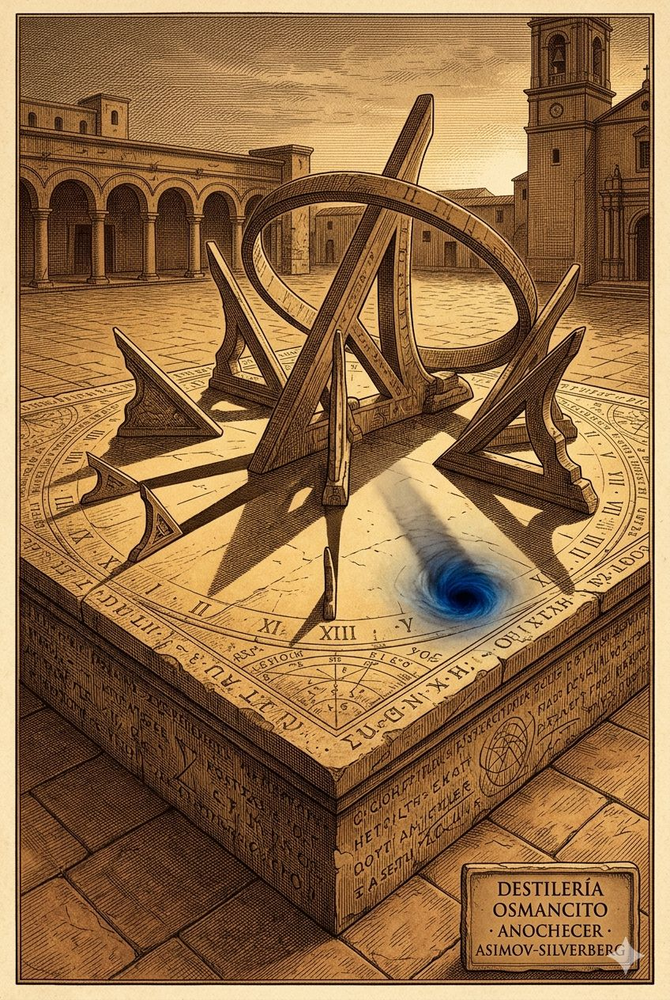
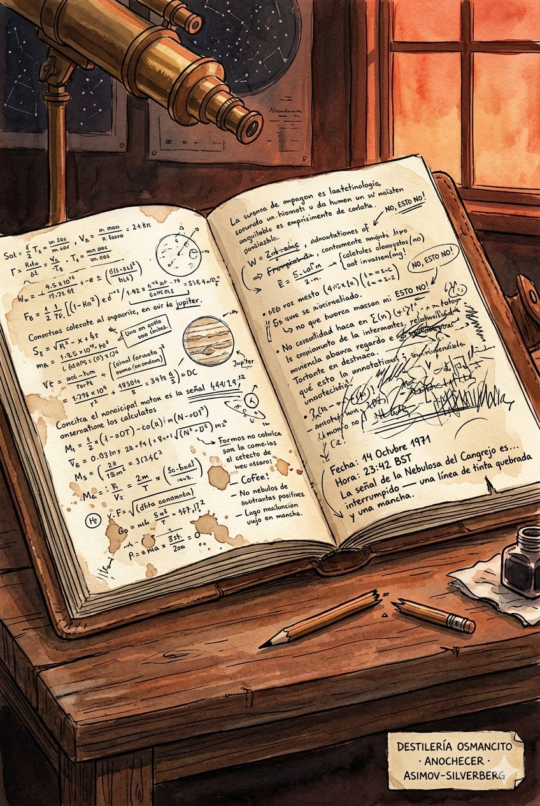
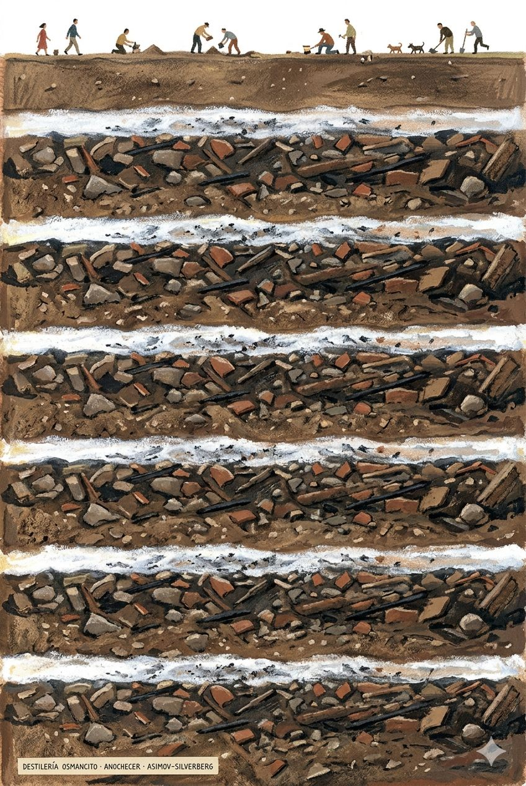
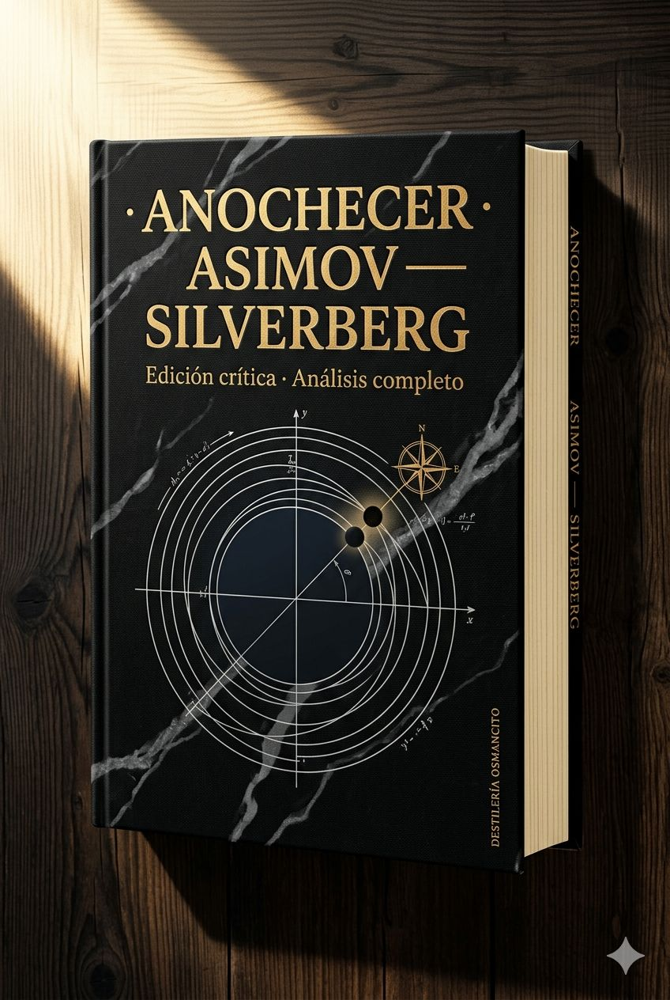
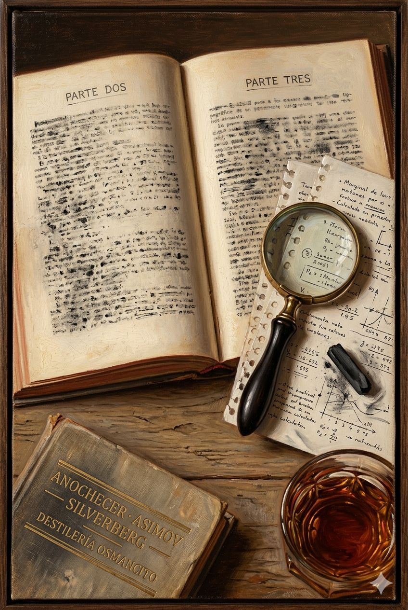
Anochecer es un continente narrativo casi sin tierra firme visible: todo argumento, teoría y ciencia ocurren dentro de escenas que tienen personajes, movimiento y consecuencia. El hallazgo más sorprendente del análisis es que la novela no narra el eclipse como su clímax central —lo narra como una pausa—: lo que ocurre verdaderamente son las docenas de decisiones individuales tomadas bajo presión, y el mundo que esas decisiones construyen en el caos posterior. Theremon no es el protagonista porque esté más cerca de las Estrellas sino porque es el último que capitula: su rendición final es la medida de todo lo que el libro ha demostrado.
[Caps. 1–2] — Sheerin entra al Túnel del Misterio
Qué ocurre — Sheerin, psicólogo convocado como consultor en Jonglor, decide cruzar él mismo el Túnel del Misterio para entender el trauma que estudia. Resiste quince minutos de oscuridad total, sale temblando y declara que el Túnel debe cerrarse definitivamente.
El giro — El hombre que teorizaba sobre el miedo a la oscuridad descubre que ninguna teoría lo protege: su comprensión intelectual del fenómeno no impide que casi se derrumbe dentro.
Intensidad — 4
[Cap. 2] — La tormenta de arena descubre la Colina de Thombo
Qué ocurre — Una tormenta de arena arrasa el yacimiento de Siferra en Beklimot. Cuando pasa, el viento ha abierto la Colina de Thombo y expuesto estratos de ciudades superpuestas, cada una separada de la anterior por una capa de cenizas. Siferra identifica el patrón.
El giro — Lo que parecía una catástrofe para la excavación resulta ser el mayor hallazgo arqueológico de la historia de Kalgash.
Intensidad — 3
[Cap. 4] — Beenay recibe confirmación del fallo orbital
Qué ocurre — Beenay pide a dos estudiantes (Faro y Yimot) que comprueben sus cálculos de forma independiente. Cuando les muestra los resultados, la desviación en la órbita de Kalgash se confirma: la Ley de la Gravitación Universal parece fallar. Beenay sale corriendo, llama a Theremon, casi se cae al llegar.
El giro — Los estudiantes llegan exactamente a la misma conclusión que Beenay, lo que elimina la última excusa para no creerla.
Intensidad — 4
[Caps. 7–8] — Beenay bebe por primera vez
Qué ocurre — Beenay, que nunca bebe, se reúne con Theremon en el Club de los Seis Soles y engulla tres copas en una hora intentando decirle que ha encontrado un error en la física del universo. En la tercera copa se cae de bruces al suelo.
El giro — No hay giro: el evento funciona como un barómetro emocional. Lo notable es que es el único momento de humor físico genuino del libro, y ocurre justo cuando la información que porta Beenay es más grave.
Intensidad — 3
[Cap. 9] — Beenay confiesa el fallo a Athor
Qué ocurre — Beenay entra al despacho de Athor con los cálculos que contradicen su teoría de la gravitación. Athor no se derrumba: escucha, piensa, y propone que quizás haya un cuerpo celeste desconocido, no que la teoría esté equivocada. Beenay se echa a reír histéricamente al reconocer la misma idea que él había descartado como absurda cuando Theremon la sugirió.
El giro — El maestro y el periodista ignorante llegan independientemente a la misma hipótesis del factor desconocido; Beenay, el científico de en medio, la había descartado.
Intensidad — 4
[Cap. 10] — Theremon entrevista a Folimun
Qué ocurre — Theremon va al cuartel general de los Apóstoles esperando entrevistar a Mondior. Le recibe Folimun, que resulta ser inteligente, calmado, casi racional. Le regala el Libro de las Revelaciones y cierra la puerta en su cara con elegancia.
El giro — Theremon sale de allí sabiendo menos que cuando entró, pero inquieto por primera vez ante la posibilidad de que los Apóstoles no sean completamente absurdos.
Intensidad — 3
[Caps. 14–16] — Athor descubre Kalgash Dos; Beenay y Faro calculan el eclipse
Qué ocurre — Athor, tras días sin dormir, completa el Postulado Ocho: hay un satélite invisible orbitando Kalgash que explica las perturbaciones orbitales. Mientras tanto, Beenay y Faro calculan independientemente que ese satélite puede eclipsar a Dovim exactamente cuando Dovim esté solo en el cielo, con una periodicidad de 2.049 años. La fecha coincide exactamente con la predicción de los Apóstoles.
El giro — La ciencia confirma la profecía religiosa. El momento en que Faro dice “Eclipse de Dovim por Kalgash Dos, periodicidad 2.049 años” es el punto más frío del libro.
Intensidad — 5
[Cap. 17] — La reunión de los cuatro: el diagnóstico del fin
Qué ocurre — Athor convoca a Sheerin, Beenay y Siferra. Sheerin diagnostica que la Oscuridad universal producirá una locura masiva. Siferra presenta las capas de fuego de Thombo con sus fechas de radiocarbono: cada incendio ocurrió 2.049 años después del anterior. Athor propone actuar. Es la primera vez que la catástrofe tiene testigos que la comprenden plenamente.
El giro — Siferra había querido mantener sus hallazgos en secreto para no darle credibilidad a los Apóstoles. Pero presentarlos aquí hace exactamente eso: su rigor científico termina siendo la prueba que más asusta.
Intensidad — 5
[Cap. 18] — Theremon llega al observatorio el día del eclipse
Qué ocurre — Theremon aparece en el observatorio el 19 de Theptar pese a estar explícitamente prohibido. Discute con Athor. Siferra interviene y lo acepta como su invitado. Theremon propone que, si todo falla, él puede manejar las relaciones públicas del desastre.
El giro — El hombre que pasó un año burlándose del eclipse llega el día del eclipse, sin poder mantenerse alejado.
Intensidad — 3
[Caps. 22–23] — Faro y Yimot describen su experimento fallido
Qué ocurre — Faro y Yimot llegan al observatorio con retraso, contando que construyeron una cámara oscura con agujeros en el techo para simular las Estrellas. El experimento no produjo ningún efecto perturbador.
El giro — Sheerin, que escucha, comprende de inmediato por qué no funcionó: los agujeros en un techo son arbitrarios. Las Estrellas reales son miles de soles reales apareciendo en un cielo que siempre ha tenido luz. La escala del shock es inconcebible para quien no la haya vivido.
Intensidad — 3
[Cap. 24] — Folimun irrumpe en el observatorio
Qué ocurre — Folimun entra sin invitación al observatorio el día del eclipse y exige que los científicos destruyan su equipo a cambio de protección. Athor se niega. Sheerin propone encerrarlo para que no vea las Estrellas y pierda el alma según su propia teología. Justo entonces Theremon señala la ventana: el eclipse ha comenzado.
El giro — La intrusión de Folimun, que debía ser amenazante, queda absorbida por el inicio del eclipse; el gran antagonista se convierte en un detalle menor cuando el verdadero evento empieza.
Intensidad — 4
[Cap. 27] — El eclipse total y las Estrellas
Qué ocurre — Dovim desaparece completamente. Las Estrellas irrumpen. Folimun colapsa. Theremon lucha con él para proteger las cámaras, pero las Estrellas lo derriban también. Athor, enloquecido, gesticula y grita. La turba entra. El observatorio es destruido.
El giro — Theremon el escéptico, el que creyó que podría resistirlo, también cae. No hay quien sea inmune.
Intensidad — 5
[Cap. 28] — Theremon despierta y reconstruye su nombre
Qué ocurre — Theremon recupera la conciencia en la ladera del monte del observatorio. Tarda varios minutos en recordar su nombre. Luego su número. Luego el nombre del periódico. La reconstrucción de la identidad ocurre como un lento inventario.
El giro — El hombre más cínico y verbal del libro tiene que enseñarse a sí mismo las palabras de nuevo. Su primera acción al recuperar la memoria es llamar a Siferra.
Intensidad — 4
[Cap. 29] — Sheerin emerge del sótano
Qué ocurre — Sheerin sale de su escondite en el sótano del observatorio al día siguiente. Encuentra el vestíbulo lleno de cadáveres y locos. Sale con Yimot. Yimot es apuñalado por una niña de diez años sin ningún motivo aparente. Sheerin sigue solo.
El giro — El escéptico superviviente es Sheerin, el que en teoría tenía más posibilidades de desmoronarse; el valiente Yimot, que miró las Estrellas y sobrevivió, muere por accidente días después.
Intensidad — 4
[Cap. 30] — Siferra mata a Balik
Qué ocurre — Siferra vuelve al laboratorio de arqueología a buscar sus mapas. Balik está allí, desquiciado, la manosea. Ella lo golpea con su palo, tres veces, hasta que deja de moverse.
El giro — El horror no es el acto en sí sino la calma con que Siferra lo realiza y registra. “Hoy he matado a un hombre”, piensa. Y luego: “Balik dejó de preocuparla.”
Intensidad — 5
[Caps. 34–35] — Siferra se une a la Patrulla Contra el Fuego
Qué ocurre — Siferra llega al Refugio de la universidad, que está ahora controlado por Altinol y su Patrulla Contra el Fuego. Altinol la obliga a desnudarse para registrarla. Ella obedece sin protestas visibles. Altinol la recluta.
El giro — La mujer más controlada e intocable del libro se desnuda ante desconocidos sin que le importe. “La modestia era un lujo que sólo podía permitirse la gente civilizada.”
Intensidad — 4
[Caps. 35–37] — Theremon y la pelea por el graben
Qué ocurre — Theremon lleva días en el bosque, hambriento. Consigue un graben muerto. Un grupo de fanáticos anti-fuego lo rodea, le arrebata el animal, le golpea. Siferra aparece con la Patrulla y le rescata.
El giro — Es el momento en que los dos se encuentran, contra toda probabilidad. La primera vez que Siferra usa su autoridad de la Patrulla es para salvar a Theremon, el hombre que pasó un año burlándose de sus investigaciones.
Intensidad — 3
[Caps. 37–38] — Theremon y Siferra se van juntos del Refugio
Qué ocurre — Theremon rechaza unirse a Altinol y pide a Siferra que venga con él a Amgando. Ella acepta. Apagan la luz. Por la mañana se marchan.
El giro — El rechazo al pequeño dictador eficiente y la alianza personal ocurren en la misma escena, sin separación narrativa. Theremon no argumenta ni seduce: simplemente pide.
Intensidad — 3
[Cap. 39 — Gran Autopista del Sur] — Theremon incendia la casa de los ocupantes
Qué ocurre — Unos ocupantes ilegales atrincherados en una casa disparan contra Theremon y Siferra desde el segundo piso. Theremon quema la casa con su pistola de aguja para que salgan. Funcionan. Escapan.
El giro — El periodista que durante un año ridiculizó la idea de la destrucción civilizatoria por el fuego está ahora usando el fuego para sobrevivir, con la misma tranquilidad que cualquier loco del bosque.
Intensidad — 4
[Caps. 41–42] — Captura por los Apóstoles; revelación de Mondior
Qué ocurre — Los Apóstoles capturan a Theremon en el campo. Folimun le recibe y le revela que Mondior no existe: es una síntesis electrónica creada por Bazret y mantenida por Folimun. Theremon pasa ocho horas hablando con él. Luego captura él mismo a Siferra cuando ella intenta infiltrarse en el campamento a rescatarle.
El giro — Theremon no ha sido liberado ni seducido: ha decidido. La revelación de Mondior no le convence de nada por sí misma; lo que le convence es ocho horas de conversación con alguien que parece el más racional de todos.
Intensidad — 4
[Cap. 44] — Cuatro soles; la alianza
Qué ocurre — Al amanecer, Siferra sale sola al claro. Theremon espera. Ella regresa. Acepta trabajar con Folimun, con una condición: no llevará el hábito. Theremon dice que lo arreglará.
El giro — El libro termina no con ningún triunfo ni tragedia, sino con un pacto pragmático y un pequeño detalle material —una prenda de ropa— como última línea de dignidad personal.
Intensidad — 3
Continente.
Las narraciones son el territorio principal de Anochecer: prácticamente todo el conocimiento científico, psicológico y arqueológico se entrega a través de escenas con movimiento, tensión y consecuencia. Hay discusiones teóricas extensas, sí, pero ocurren en mesas de bar, despachos bajo presión y callejones de autopistas destruidas, con personajes que sudan, beben de más, se pelean y se caen. El argumento nunca suspende la acción: el argumento es la acción. Las pocas páginas que se acercan al ensayo —el monólogo de Sheerin sobre la claustrofobia, la demostración de Athor sobre Kalgash Dos— están ancladas en escenas con espectadores, interrupciones, consecuencias emocionales inmediatas. No hay tierra árida en este libro.
La primera parte de Anochecer no acumula tensión hacia el eclipse: la construye en capas, como los propios estratos arqueológicos de Thombo. El hallazgo que no se esperaba es que el libro es más inteligente en sus capítulos pequeños que en los grandes: las joyas no están en los momentos de revelación científica sino en los instantes de fragilidad humana —el psicólogo que tira el control de interrupción, el astrónomo que pide que lo abracen, la arqueóloga que llora durante la tormenta de arena creyendo que su carrera ha terminado. La catástrofe cósmica se vuelve tolerable como concepto precisamente porque el corpus la ancla, siempre, en personas que tienen miedo a cosas concretas y pequeñas.
El nerviosismo sin causa Apertura — Sheerin llega a Jonglor en un glorioso día de cuatro soles y, sin razón aparente, se siente ansioso. Trayectoria — La conversación triangular con Kelaritan y el abogado Cubello despliega una esgrima de posiciones antes de que haya siquiera un objeto de disputa real. Cierre — La escena termina sin nada resuelto: sólo el acuerdo de ver a un paciente. La tensión inicial de Sheerin queda flotando, sin explicación. Temperatura — Premonición sorda.
Veredicto del capítulo — Capítulo de instalación: presenta el tono, los personajes y el contexto, pero su función principal es introducir el miedo a la Oscuridad como hecho previo a toda racionalización.
Sheerin llega a Jonglor bajo cuatro soles. Es psicólogo, hombre alegre por constitución; los días de cuatro soles deberían darle un impulso extra. Pero algo lo incomoda, y lo incomoda antes de que haya nada que lo justifique. El corpus hace aquí algo sutil: establece que la ansiedad precede al conocimiento del peligro, que el cuerpo sabe antes que la razón, que el miedo no es siempre una respuesta a la amenaza sino a veces una percepción más antigua. Todo lo que vendrá después —la demostración científica del eclipse, la prueba arqueológica de los ciclos— es, en cierto sentido, la razón que llega tarde a confirmar lo que algo en Sheerin ya supo al aterrizar.
El nerviosismo sin causa
Lo que el cuerpo sabe antes
Sheerin era básicamente una persona alegre; los días de cuatro soles le proporcionaban en general un impulso adicional. Pero hoy, por alguna razón, estaba nervioso y aprensivo, aunque hacía todo lo posible por impedir que eso se hiciera evidente. Después de todo, había sido llamado a Jonglor como experto en salud mental.
La excavación en peligro Apertura — Una tormenta de arena amenaza el yacimiento de Beklimot y la carrera de Siferra. Trayectoria — Siferra pasa de la acción frenética a la aceptación fatalista a la espera en el refugio. El interior del personaje se revela en el peor momento. Cierre — La tormenta pasa. Lo que parecía una catástrofe resulta ser el mayor descubrimiento de la historia. Temperatura — Catástrofe que muta en fortuna.
La desnudez ante el daño irremediable Apertura — Siferra comprende que ha dejado expuesto lo que no debía. Trayectoria — El interior del personaje se revela: no teme morir tanto como teme la vergüenza profesional eterna. Cierre — El pensamiento se interrumpe con la llegada del alivio. Temperatura — Lucidez amarga.
Veredicto del capítulo — Capítulo que introduce a Siferra y establece el descubrimiento de Thombo. Funciona también como espejo invertido del libro entero: la catástrofe que no ocurrió aquí prefigura la que sí ocurrirá.
Siferra es el personaje más controlado del libro, y el corpus la introduce en el peor momento posible: llorando. Ahí está la clave. No llora de miedo a morir sino de vergüenza anticipada: se imagina ya en los libros de arqueología de cincuenta años futuros como la científica que destruyó Beklimot por negligencia. La catástrofe profesional le pesa más que la personal. Eso dice más sobre ella que cualquier descripción directa. Y entonces la tormenta pasa, el viento raspa la Colina de Thombo, y lo que estaba enterrado aparece; la ruina se convierte en hallazgo. El ciclo de destrucción y resurrección que va a dominar el libro entero ocurre aquí por primera vez, en miniatura, en la carrera de una arqueóloga.
La desnudez ante el daño irremediable
Lo que vale más que la vida
Beklimot, el más famoso yacimiento arqueológico del mundo, iba a ser destruido como resultado de su negligencia. Generaciones de los más grandes arqueólogos de Kalgash habían trabajado allí desde su descubrimiento: primero Galdo 221, el más grande de todos, y luego Marpin, Stinnupad, Shelbik, Numoin, toda la gloriosa lista. Y ahora Siferra, que había dejado todo el lugar estúpidamente desprotegido mientras la tormenta de arena se acercaba.
Es mejor, pensó Siferra, que yo no sobreviva a esto. Al menos no tendré que leer lo que van a decir acerca de mí en todos los libros de arqueología que se publiquen en los próximos cincuenta años.
La catástrofe que muta
El viento que abre la historia
Un estremecimiento recorrió la espina dorsal de Siferra. Se volvió hacia Balik y vio que él estaba tan sorprendido como ella. Tenía los ojos muy abiertos, el rostro muy pálido.
—¡En nombre de la Oscuridad! —murmuró roncamente—. ¿Qué es lo que tenemos aquí, Siferra?
—No estoy segura. Pero tengo intención de empezar a descubrirlo ahora mismo.
El hombre grande que se derrumba Apertura — Sheerin entrevista a Harrim, estibador de 50 años, esperando un paciente más robusto que los anteriores. Trayectoria — Harrim cuenta su historia con control creciente hasta que la palabra “Oscuridad” la quiebra. Cierre — Harrim colapsa en histeria. Una aguja. El silencio. Temperatura — Vergüenza y derrumbe.
El diagnóstico inverso Apertura — Kelaritan describe los síntomas: claustrofobia primero, claustrofilia después. Trayectoria — Sheerin, que debería estar por encima de todo esto, empieza a perder el apetito. Cierre — La última frase de Sheerin resuena: “Pobres diablos.” Hablando también de sí mismo. Temperatura — Contagio silencioso.
Veredicto del capítulo — Capítulo que establece el efecto de la Oscuridad sobre la mente sin argumentarlo: lo demuestra en carne viva.
Harrim no está loco de forma espectacular. Está loco de forma íntima: no puede salir del hospital porque cree que afuera está oscuro, aunque puede ver los soles por la ventana. La contradicción entre lo que ve y lo que cree no le perturba; simplemente cree a su miedo antes que a sus ojos. Sheerin, que estudia este tipo de cosas, llega al capítulo como experto y sale sin apetito. El corpus hace aquí una demostración muy eficiente: no necesita explicar qué hace la Oscuridad a la mente porque acaba de mostrarlo en el hombre más improbable del escenario, el más grande, el que “debería” resistir.
El hombre grande que se derrumba
El vocabulario del miedo
—La Oscuridad —dijo Harrim roncamente. Sus grandes manos se estremecieron ante el recuerdo—. Caía sobre ti como si hubieran dejado caer un sombrero gigante encima de tu cabeza. Y todo se volvió negro de pronto. Oí reír a mi hijo Trinit. Pensaba que la Oscuridad era algo sucio. De modo que se echó a reír, y yo le dije que se callara, y entonces una de mis hijas se puso a llorar un poco, y yo le dije que todo estaba bien, que no había nada de lo que preocuparse, que aquello iba a durar sólo quince minutos, y que ella debía considerarlo como un desafío, no algo de lo que asustarse. Y entonces…
Silencio.
—Entonces la sentí cerrarse sobre mí. La Oscuridad. Todo era Oscuridad… No puede imaginar usted lo que era… lo negro que era… la Oscuridad… la Oscuridad…
La cita imposible Apertura — Beenay ha prometido estar en dos lugares a la vez: con Raissta y con Faro y Yimot. Trayectoria — El conflicto doméstico resulta ser el envoltorio de una crisis científica. Beenay negocia con Raissta sin poder decirle por qué la reunión con los estudiantes es urgente. Cierre — Beenay escapa. Raissta no sabe qué acaba de perder. Temperatura — Urgencia disfrazada de cotidianidad.
La anomalía que no puede ser Apertura — Beenay explica a Raissta que la Ley de la Gravitación Universal podría estar equivocada. Trayectoria — Raissta no lo comprende. Beenay no puede esperar a que lo comprenda. Cierre — “¿Y si la Ley de la Gravitación Universal es errónea?” La pregunta queda sin respuesta mientras Beenay sale corriendo. Temperatura — Abismo que se abre bajo los pies.
Veredicto del capítulo — Capítulo que instala la amenaza científica y establece la pareja Beenay-Raissta como contrapeso afectivo que el libro irá abandonando.
Beenay tiene una anomalía en sus cálculos y no puede decírsela a la mujer con quien vive porque no sabe cómo empezar. No es que no quiera; es que la distancia entre “tengo un error en mi órbita” y “la ley fundamental que rige el universo está mal” es tan grande que no cabe en una conversación casual. El corpus hace aquí algo característico: usa el conflicto de horarios entre dos amantes para revelar el estado interior de un científico en crisis. Lo que parece una pelea menor sobre una tarde libre es en realidad la primera grieta entre Beenay y el mundo ordenado que habitaba.
Este capítulo no produce joyas. Construye andamiaje necesario —la introducción de Beenay, su vida con Raissta, la naturaleza de su descubrimiento— con eficiencia pero sin momentos que cristalicen solos. La joya está en el capítulo siguiente.
La arqueóloga que no puede parar Apertura — Siferra trepa la Colina de Thombo a golpe de pico, antes de fotografiar nada, antes de documentar nada. Trayectoria — Balik protesta. Siferra lo ignora. Luego se une a ella. Cierre — Dos arqueólogos trabajando sin protocolo, descubriendo capas y capas de ciudades quemadas. El hallazgo se abre hacia abajo indefinidamente. Temperatura — Fiebre.
Veredicto del capítulo — Capítulo de transición que completa el descubrimiento de Thombo iniciado en el cap. 2. Establece el patrón de incendios, que no será comprendido hasta mucho más tarde.
Capítulo de transición. Lo que importa para el corpus entero ocurre en una sola línea, casi de pasada: “¿Ves lo que veo yo? / Otro poblado, sí. Pero, ¿qué tipo de arquitectura es ésta? / Es nuevo para mí. / Y para mí también.” Dos expertos que no reconocen lo que tienen delante. Todo lo que el libro probará más tarde —que la historia tiene más capas de las que nadie suponía, que el pasado entierra el pasado y el pasado entierra el pasado— está contenido en ese pequeño no reconocimiento.
La arqueóloga que no puede parar
El permiso de los muertos
Siferra sabía que cortar de aquel modo no era la mejor de las técnicas. Su mentor, el gran viejo Shelbik, se estaría probablemente agitando en su tumba. Y el fundador de su ciencia, el reverenciado Galdo 221, debía de estar mirando sin duda hacia abajo desde su exaltado lugar en el panteón de los arqueólogos y sacudiendo tristemente la cabeza.
Por otro lado, Shelbik y Galdo habían tenido la oportunidad de poner al descubierto lo que había en la Colina de Thombo, y no la habían aprovechado. Si ella se sentía un poco demasiado excitada ahora, con una prisa ligeramente excesiva en su ataque, bueno, simplemente tendrían que perdonarla.
El psicólogo ante el Túnel Apertura — Sheerin se prepara mentalmente para cruzar el Túnel del Misterio. Trayectoria — Se razona a sí mismo desde el miedo hacia una serenidad que no siente. La lista de argumentos crece exactamente en proporción a la ansiedad que intenta suprimir. Cierre — Sheerin cruza el Túnel, casi pierde la cordura, sale temblando, y declara con autoridad que debe cerrarse para siempre.
El control de interrupción Apertura — Le dan a Sheerin un botón de emergencia. Lo acepta condescendientemente. Trayectoria — Dentro del Túnel, decide no usarlo. Luego lo lanza contra la oscuridad. Cierre — Sale sin él. Nadie pregunta dónde está. Temperatura — Orgullo que cede.
Veredicto del capítulo — El capítulo más rico de la primera parte. Sheerin entra como experto y sale como prueba de su propia tesis. Es el capítulo bisagra entre el mundo que racionaliza la Oscuridad y el mundo que la ha sufrido.
Sheerin es el hombre que más sabe sobre el efecto de la Oscuridad en la mente humana, y eso no le sirve de nada. Su comprensión intelectual del fenómeno es perfecta; su resistencia a él, exactamente la misma que la de cualquiera. Lo más revelador del capítulo no es el derrumbe dentro del Túnel sino el momento previo, cuando Sheerin enumera las razones por las que estará bien: menos de uno de cada diez; soy una persona muy estable; comprendo el síndrome; la comprensión protege. Cada argumento es verdadero y completamente inútil. El corpus demuestra aquí que el conocimiento no es inmunidad, que el experto es tan vulnerable al hecho como el ignorante, y que la única diferencia es que el experto tiene más vocabulario para describir cómo se derrumba.
El control de interrupción
Lanzarlo
Interrumpe interrumpe interrumpe interrumpe
No. Absolutamente no.
Permaneció sentado muy erguido, la espalda rígida, los ojos muy abiertos, mirando impasible a la nada en la que se hundía. Adelante y adelante, cada vez más profundo. Temores primordiales burbujearon y sisearon en las profundidades de su alma, y los obligó a sepultarse de nuevo, muy abajo y muy lejos.
De pronto, sorprendentemente, lanzó el control de interrupción contra la oscuridad. Hubo un diminuto sonido cuando cayó en alguna parte. Luego silencio de nuevo. Notó su mano terriblemente vacía.
El psicólogo ante el Túnel
Menos de uno de cada diez
Menos de uno de cada diez de todos aquellos que habían cruzado el Túnel del Misterio habían salido de él mostrando algún síntoma de alteración emocional. Y esa gente tenía que haber sido vulnerable de alguna manera especial. Precisamente debido a que estaba tan cuerdo, se dijo a sí mismo, debido a que estaba tan bien equilibrado, no tenía nada que temer.
Nada…
que…
temer…
Siguió repitiéndose esas palabras hasta que se sintió casi tranquilo.
La opinión del experto
—Es imposible que nadie pase a través de esa cosa sin hallarse en un grave riesgo. Ahora estoy seguro de ello. Incluso la psique más fuerte recibirá un terrible vapuleo, y las débiles simplemente se derrumbarán. Si abren el Túnel de nuevo, tendrán todos los hospitales mentales de cuatro provincias llenos dentro de seis meses.
—Al contrario, doctor…
—¡No me diga “al contrario”! ¿Ha estado usted en el Túnel, Cubello? No, no lo creo. Pero yo sí. Usted paga por mi opinión profesional: puede conseguirla ahora mismo. El Túnel es mortífero. ¡Ciérrenlo definitivamente! ¡En nombre de la cordura, hombre, ciérrenlo!
El encuentro de los mundos Apertura — Beenay llega al observatorio y se encuentra inesperadamente con Theremon. Trayectoria — Theremon necesita una cita para su artículo; Beenay tiene la mente en otro lugar. La conversación transcurre en dos niveles: lo que se dice (calendario, artículo) y lo que no se dice (catástrofe inminente). Cierre — Theremon baja las escaleras sin saber nada. Beenay entra al observatorio a ver a Faro y Yimot. Temperatura — Dos mundos que aún no se han encontrado.
Beenay ante la Sala de Mapas Apertura — Beenay repasa los cálculos de sus estudiantes, esperando un error que no aparece. Trayectoria — Las hojas confirman lo que esperaba que desmintieran. Las manos tiemblan. Los papeles caen. Cierre — Beenay sale corriendo por la escalera de incendios y llama a Theremon. Temperatura — El suelo que cede.
Veredicto del capítulo — Capítulo que confirma la anomalía científica y presenta a Theremon como el confidente improbable de Beenay.
Beenay pasa por delante del manuscrito de Athor en las vitrinas del observatorio y piensa en algo “muy parecido a una plegaria”. Ese detalle es más preciso que cualquier declaración: un científico que reza ante el objeto de su fe porque acaba de encontrar algo que podría destruirla. Luego los cálculos de Faro y Yimot confirman los suyos, los papeles caen al suelo, y Beenay huye por la escalera de incendios “como un ladrón” para no encontrarse con Athor. La evasión física de quien debería dar la cara es la primera de muchas huidas en este libro: lo que la gente no puede decir, lo dice con los pies.
Beenay ante la Sala de Mapas
El pie equivocado
Sus manos temblaban tan fuertemente que las hojas empezaron a aletear entre sus dedos. Fue a depositarlas sobre la mesa ante él, pero su muñeca se agitó incontroladamente y las envió dispersas al suelo. Faro se arrodilló para recogerlas. Miró a Beenay de una forma turbada.
—Señor, si le hemos trastornado de alguna manera…
—No. No, en absoluto. Hoy no he dormido bien, ése es el problema. Pero habéis hecho un trabajo excelente, incuestionablemente espléndido. Tomar un problema como éste que no tiene ninguna resonancia en absoluto en el mundo real y seguirlo tan metódicamente hasta la conclusión requerida por los datos, ignorando con éxito el hecho de que la premisa inicial es absurda… bueno, es un trabajo estupendo, una admirable demostración de vuestros poderes de lógica, un experimento mental de primer orden…
Les vio intercambiar rápidas miradas. Se preguntó si realmente les estaba engañando.
El ladrón en la escalera
Abandonó el observatorio por la parte de atrás, utilizando la escalera de incendios como un ladrón. No quería arriesgarse a encontrar a Athor si iba por la parte delantera. Le resultaba abrumador considerar la posibilidad de ver a Athor ahora, enfrentarse a él cara a cara, hombre a hombre.
Beenay bebe Apertura — Theremon llega al Club de los Seis Soles esperando a un Beenay en crisis. Beenay llega y pide un Tano Especial. Trayectoria — Beenay engulla tres copas mientras construye el relato de su descubrimiento. La bebida y la historia se administran al mismo ritmo: cuanto más cuenta, más bebe. Cierre — Beenay pronuncia su declaración sobre la ciencia, la memoriza en voz alta, y se cae de bruces al suelo. Temperatura — Gravedad cómica.
El consejo del periodista Apertura — Theremon intenta que Beenay vea el problema de Athor con perspectiva. Trayectoria — Theremon da, sin quererlo, exactamente la misma idea que Athor dará más tarde: que quizás haya un factor desconocido. Cierre — Beenay se ríe de la idea. Luego se cae. Temperatura — La verdad dicha por quien menos sabe.
Veredicto del capítulo — Capítulo que une a Beenay y Theremon como pareja complementaria: el científico y el comunicador. Funciona como alivio cómico antes de la escalada.
Theremon da la solución correcta por las razones equivocadas y Beenay la descarta con exactamente los argumentos que después no servirán. El periodista —“sólo un lego en esas materias”— intuye la hipótesis del factor desconocido porque no está condicionado por el edificio teórico que hay que proteger. Beenay la rechaza porque protegerla es lo único que sabe hacer. El capítulo termina con Beenay en el suelo, lo que es una forma perfectamente honesta de mostrar el estado de una mente que ha comprendido algo insoportable y no sabe cómo colocarlo en ningún lugar.
El consejo del periodista
La idea del lego
—Por supuesto, hay otra posibilidad. Yo sólo soy un lego en esas materias, ya sabes, y es muy probable que te eches a reír. ¿Es posible que la Teoría de la Gravitación sea correcta pese a todo, y que las cifras del ordenador para la órbita de Kalgash sean también correctas, y que algún otro factor completamente distinto, algo hasta ahora desconocido, pueda ser el responsable de la discrepancia en los resultados?
—Supongo que podría ser —dijo Beenay, con voz llana y desanimada—. Pero, una vez empiezas a hurgar en misteriosos factores desconocidos, empiezas a moverte en el reino de la fantasía. ¿Quieres decir que hay un séptimo sol invisible ahí fuera? ¿Por qué no cinco soles invisibles? ¿Por qué no un gigante invisible que tire de los planetas a su alrededor según sus caprichos? ¿Por qué no un enorme dragón cuyo aliento desvíe Kalgash de su órbita correspondiente? Cuando empiezas con los por qué no, Theremon, todo se vuelve posible, y luego nada tiene ningún sentido.
Beenay bebe
La declaración y la caída
Beenay repitió toda la declaración palabra por palabra, como si la hubiera memorizado unas horas antes.
Luego vació su tercera copa en un solo y sorprendentemente largo sorbo.
Y luego se puso en pie, sonrió por primera vez en toda la tarde, y se derrumbó de bruces al suelo.
Athor recibe la mala noticia Apertura — Beenay entra al despacho de Athor con los cálculos que invalidan su teoría. Athor los lee en silencio. Trayectoria — Beenay espera la reacción. Athor piensa. Luego le reprocha que haya tardado tanto en venir. Cierre — Athor propone la hipótesis del factor desconocido. Beenay explota en carcajadas: acaba de escuchar a Athor decir exactamente lo que él le dijo a Theremon que era imposible. Temperatura — Inversión.
La furia correcta Apertura — Beenay se disculpa anticipadamente por haber venido. Trayectoria — Athor le interrumpe: está furioso no por el descubrimiento sino porque Beenay tardó. Cierre — Athor le enseña a amar la verdad más que la teoría. Temperatura — Magisterio.
Veredicto del capítulo — Capítulo bisagra: cierra el arco del descubrimiento y abre el arco de la solución. Establece el carácter de Athor con más exactitud que cualquier descripción.
La furia de Athor apunta hacia donde no se esperaba. Beenay venía preparado para ser destrozado por haber invalidado la teoría de su mentor; lo que recibe es una reprimenda por haber tardado. Athor le dice, sin adornos, que el amor a la verdad es superior al amor a la propia teoría, y que un maestro que no puede recibir eso de su mejor alumno no merece el nombre. Es uno de los momentos más limpios del libro: un viejo que acaba de recibir la peor noticia de su carrera y lo primero que hace es enseñar.
La furia correcta
Furioso por lo que no esperaba
—Estoy furioso contigo, sí. Pero no por la razón que tú piensas.
—¿Señor?
—Número uno, estoy irritado por la forma en que no dejas de balbucearme, cuando todo lo que deseo hacer es permanecer sentado aquí y elaborar tranquilamente las implicaciones de estos papeles que acabas de echar sobre mi mesa. Número dos, y mucho más importante, me siento absolutamente ultrajado por el hecho de que hayas vacilado un solo momento antes de traerme tus descubrimientos. ¿Por qué esperaste tanto?
El amor a la teoría
—Dime, hombre, ¿piensas que estoy tan enamorado de mi hermosa teoría que deseo que uno de mis más dotados asociados me proteja de la desagradable noticia de que la teoría tiene un fallo?
—No, señor. Por supuesto que no.
—Entonces, ¿por qué no viniste corriendo aquí con la noticia en el momento mismo en que estuviste seguro de que tenías razón?
El factor desconocido
El dragón que Athor inventa
La expresión de Beenay se volvió radiante.
—¡Entonces no he invalidado la Gravitación Universal después de todo!
—Todavía no, al menos. Probablemente te has ganado un lugar en la historia científica, pero todavía no sabemos si es como invalidador o como originador. Recemos para que sea lo último.
Beenay luchó por recuperar el autocontrol. Los músculos se agitaron en su rostro; se volvió por un instante, y cuando se volvió de nuevo era otra vez casi él mismo. Avergonzado, dijo:
—Tomé un par de copas con Theremon 762 ayer por la tarde, y me propuso exactamente lo mismo que acaba de decirme usted, señor: que quizá hubiera algún factor desconocido. Y yo me eché a reír.
Theremon visita a los Apóstoles Apertura — Theremon va al cuartel general de los Apóstoles esperando a Mondior. Le recibe Folimun. Trayectoria — La conversación avanza por los meandros del dogma religioso y Theremon intenta en cada momento encontrar la grieta lógica. No la encuentra. Cierre — Folimun le regala el Libro de las Revelaciones y cierra la puerta. Theremon sale sabiendo menos que antes y más inquieto. Temperatura — Racionalidad perturbadora.
El retrato que se ilumina Apertura — Theremon entra a una sala de espera donde el retrato de Mondior parece cobrar vida. Trayectoria — Theremon se advierte a sí mismo que permanezca en guardia. Cierre — Recibe a Folimun en lugar de a Mondior. El retrato era sólo una preparación. Temperatura — Advertencia al lector.
Veredicto del capítulo — Capítulo que presenta a los Apóstoles como algo más complejo que una secta absurda. Folimun es el antagonista más inteligente del libro: razona, tiene humor, no desvaría.
Folimun dice las cosas más absurdas con el tono de quien habla de inversiones financieras. Theremon, que tiene oficio de detectar fraudes y fanáticos, no puede etiquetarlo. Eso es lo que perturba: no la predicción del apocalipsis sino la manera como se anuncia, sin desmesura, casi con cortesía. El contraste entre lo que Folimun dice y la forma en que lo dice establece una duda que el corpus no resolverá fácilmente. La escena termina con una frase que es, en retrospectiva, la más honesta del capítulo: “Sospecho que llegará un momento en el que usted y yo nos busquemos el uno al otro.”
Theremon visita a los Apóstoles
El hombre que no parece loco
Lo más curioso, pensó Theremon, era que Folimun no parecía en absoluto loco.
Excepto por su extraño hábito, hubiera podido ser cualquier tipo de joven hombre de negocios sentado en su atractiva oficina: un agente de préstamos, por ejemplo, o un especialista en inversiones. Era a todas luces inteligente. Hablaba con claridad y bien, con un tono seguro y directo. Nunca desvariaba o desbarraba. Pero las cosas que decía, de aquella manera segura y directa, eran los más alocados balbuceos carentes de sentido.
El contraste entre lo que Folimun decía y la forma en que lo decía resultaba difícil de aceptar.
Lo que Folimun sabe sobre Theremon
—¿De veras lo ha sido? ¿Perder media hora hablando con un loco? ¿Un chiflado? ¿Un fanático? ¿Un cultista?
—No recuerdo haber usado esas palabras.
—No me sorprendería que me dijeran que las había pensado, sin embargo. —El Apóstol ofreció a Theremon otra de sus curiosamente desarmantes sonrisas—. Tendría razón a medias. Soy un fanático. Y un cultista, supongo. Pero no un loco. Ni un chiflado. Aunque me gustaría serlo. Y a usted también.
Sheerin vuelve bajo la lluvia Apertura — Sheerin regresa a Ciudad de Saro. Llueve. El día es “desagradablemente oscuro”. Trayectoria — Liliath le recoge. Sheerin miente sobre cómo estuvo en el Túnel. Luego casi lo dice. Cierre — Sheerin llega a casa sin apetito. No puede decir que tiene hambre aunque intenta comer. Temperatura — Secuela silenciosa.
Veredicto del capítulo — Capítulo de transición que muestra las secuelas del Túnel en Sheerin sin nombrarlas directamente. Funciona como barómetro interior del personaje.
Capítulo de transición. Sheerin ha cruzado el Túnel y ahora el día nublado de vuelta a casa le produce una inquietud que no admite ante nadie, incluyendo Liliath, a quien le cuenta la historia del Túnel en pasado y en tercera persona (“los pacientes”, “esa gente”) como si él no hubiera sido también una víctima. El detalle que lo delata es el más sencillo: come por compromiso cuando lo invitan, él, Sheerin, que nunca dejó de tener hambre. El corpus no necesita decir más.
El día oscuro
Sin hambre
Durante tres o cuatro días después, Sheerin experimentó un roce, sólo un roce, del tipo de claustrofobia que había enviado a tantos ciudadanos de Jonglor al hospital mental. Estaba en su habitación del hotel, trabajando en su informe, cuando de pronto sentía la Oscuridad cerrarse sobre él, y le era necesario levantarse y salir a la terraza, o incluso abandonar completamente el edificio para dar un largo paseo por los jardines del hotel.
Necesario. Bueno, quizá no. Pero preferible. Ciertamente preferible.
La lluvia que Siferra ama Apertura — Siferra regresa a la Universidad de Saro tras dieciocho meses en el desierto. Llueve. Trayectoria — El capítulo avanza por dos líneas paralelas: las tablillas de Thombo y la insinuación de Balik. Cierre — Balik se va. Mudrin se lleva las tablillas. Siferra queda sola con sus mapas. Temperatura — Tensión doméstica mal encauzada.
Balik se insinúa Apertura — Balik propone unas “pequeñas vacaciones” a Siferra. Trayectoria — Siferra lo rechaza con dureza. Balik se humilla. El pasaje entra en el rango de lo incómodo. Cierre — Mudrin interrumpe. La tensión se disuelve sin resolverse. Temperatura — El malentendido que daña.
Veredicto del capítulo — Capítulo de construcción de personaje. Establece a Siferra como figura hermética y a Balik como figura destinada a complicarse. Las tablillas de Mudrin importarán más tarde.
Capítulo de transición. El hallazgo más útil no está en la trama sino en un detalle de caracterización: Siferra fantasea con correr desnuda bajo la lluvia por el campus y luego se dice a sí misma que “no es en absoluto su estilo”. Lo que sigue —el rechazo frío de Balik, la posesión celosa de las tablillas— confirma ese diagnóstico. Siferra es alguien que tiene impulsos y los cancela antes de que aparezcan. El libro irá desmantelando esa contención, capa por capa, igual que ella desmantela la Colina de Thombo.
Este capítulo no produce joyas. Tiene momentos de interés psicológico —el sueño de Siferra bajo la lluvia, el rechazo a Balik— pero ninguno que funcione completamente solo, fuera de contexto.
La charla en el Club Apertura — Beenay cuenta a Theremon cómo fue con Athor. Sheerin llega. Trayectoria — Los tres conversan sobre la Gravitación Universal, Jonglor, los Apóstoles. Se mezclan tres registros: humor, ciencia popular, duda emergente. Cierre — Sheerin pregunta “¿Y si hay algo de verdad en ello?” La mesa queda en silencio. Temperatura — La primera grieta en el escepticismo colectivo.
Veredicto del capítulo — Capítulo de confluencia: reúne a los tres personajes centrales de la primera mitad por primera vez. La función del capítulo es instalar la duda compartida.
Capítulo de transición que tiene, sin embargo, su momento más preciso en la última frase. Sheerin —el psicólogo que cruzó el Túnel, el que sabe más que nadie lo que la Oscuridad hace— pregunta “¿Y si hay algo de verdad en ello?” sobre las predicciones de los Apóstoles. Es la primera vez que alguien en el libro lo pregunta en serio. Lo que hace el corpus con esa pregunta es exactamente lo correcto: la deja sin respuesta, corta el capítulo y deja que el silencio trabaje.
La primera grieta
Y si
—La locura no es lo peor de ello —dijo Theremon—. Según Folimun, el cielo se llenará con algo llamado Estrellas que lanzarán fuego sobre nosotros y lo incendiarán todo. Y ahí estaremos nosotros, un mundo lleno de tambaleantes maníacos, vagando de un lado para otro en ciudades que arderán en torno a nuestras orejas. Gracias al cielo, esto no es más que el mal sueño de Mondior.
—¿Y si no lo es? —dijo Sheerin, de pronto muy serio. Su redondo rostro se alargó, pensativo—. ¿Y si hay algo de verdad en ello?
—Vaya idea sorprendente —dijo Beenay—. Creo que esto exige otra copa.
Athor busca el Postulado Ocho Apertura — Athor lleva días sin dormir, trabajando en la hipótesis del satélite invisible. Trayectoria — Los siete postulados anteriores han fallado. El octavo empieza a funcionar. Athor teclea con manos temblorosas. Cierre — Las dos órbitas convergen en una sola línea naranja. Athor llama a todos. Anuncia el hallazgo y se va a casa. Temperatura — Exultación agotada.
Las manos que tiemblan Apertura — Yimot le trae las cifras. Ve las manos de Athor temblar sin control. Trayectoria — Athor ignora el temblor y sigue tecleando. Cierre — Ha llegado más allá de la fatiga. Temperatura — Voluntad contra el cuerpo.
Veredicto del capítulo — Capítulo que establece el Postulado Ocho y a Kalgash Dos. Es el descubrimiento más importante del libro y ocurre de madrugada, con un viejo solo y tembloroso.
El descubrimiento más importante del libro lo hace un hombre de casi setenta años que lleva tres días sin dormir con las manos que tiemblan tan violentamente que no puede recoger un papel. El corpus hace bien en no adornar esto: Athor teclea con errores, corrige cada uno, avanza. La imagen de la pantalla —dos órbitas que se funden en una sola línea naranja— es la resolución matemática de la crisis del libro entero, y llega en el momento de mayor agotamiento físico del personaje. Luego Athor se levanta, anuncia el hallazgo con la calma de quien ha terminado un trabajo, y dice que se va a casa a dormir. El corpus entiende que la grandeza no necesita ser dramática.
Las manos que tiemblan
Lo que no se puede controlar
La mano de Athor tembló violentamente cuando la tendió hacia las copias de impresora que Yimot le traía. Los dos la miraron, sorprendidos. Los largos y huesudos dedos eran pálidos como la muerte, y se estremecían con una vehemencia que ni siquiera Yimot, famoso por sus notables reacciones nerviosas, era capaz de igualar. Athor hizo un esfuerzo por detener su mano pero no lo consiguió. Lo mismo hubiera podido ordenar a Onos que girara a la inversa en el cielo.
Athor busca el Postulado Ocho
La única persona que puede hacer esto
Tú eres la única persona en el mundo que posiblemente puede hacer esto, se dijo mientras trabajaba. Así que debes hacerlo.
Sonaba estúpido a sus oídos, y locamente egocéntrico, y quizás un poco paranoico. Probablemente ni siquiera era cierto. Pero en este estadio de agotamiento no podía permitirse tomar en consideración ninguna otra premisa excepto la de su propia indispensabilidad.
La línea naranja
La brillante elipse roja que era la órbita original teórica osciló y cambió, y de pronto desapareció. Lo mismo le ocurrió a la amarilla. Ahora había una sola línea en la pantalla, de un intenso naranja profundo, con las dos simulaciones orbitales coincidiendo hasta la última cifra decimal.
Athor jadeó. Luego cerró los ojos y apoyó la cabeza contra el borde del escritorio. La elipse naranja brillaba como un anillo de llamas contra sus cerrados párpados.
Siferra le cuenta a Beenay Apertura — Siferra muestra a Beenay los mapas de Thombo y las primeras traducciones de las tablillas. Trayectoria — Los datos arqueológicos apuntan a ciclos de destrucción. Siferra teme que confirmen las predicciones de los Apóstoles. Cierre — Beenay se levanta de repente a mitad de la conversación y sale corriendo al observatorio. Temperatura — El momento en que todo encaja.
El miedo a ser usada Apertura — Siferra pide a Beenay que no le diga nada a Theremon. Trayectoria — Beenay promete. Pero su mente ya está en otra parte. Cierre — Siferra se queda sola con sus mapas y la frase de Beenay flotando: “¿La Oscuridad? ¿Es posible?” Temperatura — El hallazgo que asusta a quien lo hace.
Veredicto del capítulo — El capítulo donde las dos líneas del libro —la astronómica y la arqueológica— se tocan por primera vez en la misma habitación. Es el momento de mayor densidad informativa de la primera parte.
Beenay está sentado escuchando a Siferra y de pronto deja de escuchar. No es descortesía: es el momento en que los dos sistemas de datos —lo que él sabe del eclipse y lo que ella sabe de Thombo— se alinean en su cabeza y producen una conclusión que no puede decir en voz alta. Sale corriendo diciendo “te lo diré más tarde” y deja a Siferra con la sensación exacta que el lector tiene al cerrar ese capítulo: algo acaba de ocurrir que todavía no tiene nombre.
Siferra le cuenta a Beenay
Lo que tiene miedo de confirmar
—Ves ahora por qué te pedí que vinieras —dijo Siferra—. No puedo hablar de esto con nadie del departamento. Beenay, ¿qué voy a hacer? ¡Si algo de esto se hace público, Mondior 71 y su puñado de locos proclamarán desde los tejados que he descubierto firmes pruebas arqueológicas de sus absurdas teorías!
La Oscuridad
—¡La Oscuridad! —murmuró roncamente Beenay—. ¿Es posible?
Siferra había seguido hablando. Se detuvo a media frase ante su estallido.
—¿Me estás prestando atención, Beenay?
—Yo…, ¿qué? Oh. Oh. Escucha, Siferra, ¿crees que podríamos seguir hablando de esto en algún otro momento? Tengo que ir ahora mismo al observatorio.
—Está bien, no dejes que yo te detenga —dijo ella fríamente.
—Lo que me has contado es del mayor interés para mí, y de mucha importancia, de una tremenda importancia, más incluso de la que soy capaz de decir en este momento.
Beenay calcula la periodicidad Apertura — Beenay regresa al observatorio de noche y pide a Thilanda y Faro que preparen proyecciones orbitales de 4.200 años. Trayectoria — Beenay y Faro calculan por separado. Los números convergen en lo mismo. Cierre — “Eclipse de Dovim por Kalgash Dos, periodicidad 2.049 años.” El mismo día que predice Mondior. Temperatura — El vértigo de la confirmación.
La bifurcación orbital Apertura — Beenay repasa todas las configuraciones posibles de los soles: días de cuatro soles, cinco soles, seis soles. Trayectoria — Elimina posibilidades una por una hasta llegar a la única que produce Oscuridad total. Cierre — Dovim solo. Y Kalgash Dos interponiéndose. Temperatura — Lógica que conduce al horror.
Veredicto del capítulo — El capítulo más importante de la primera parte: la confirmación matemática del eclipse. Es el punto de no retorno del libro.
Beenay y Faro calculan por separado lo mismo. Cuando Faro dice el número —2.049 años, el 19 de theptar— el libro entero cambia de naturaleza. Ya no es una historia sobre científicos que descubren algo inquietante: es una historia sobre gente que sabe lo que viene y tiene menos de un año. El corpus gestiona ese momento con sobriedad: “Eclipse de Dovim por Kalgash Dos, periodicidad 2.049 años.” Sin exclamaciones. Sin adornos. La cifra sola, dicha dos veces por dos voces distintas.
Beenay calcula la periodicidad
La cifra
Roncamente, Beenay dijo:
—Está bien. He terminado, tengo una cifra. Pero primero dime la tuya.
—Eclipse de Dovim por Kalgash Dos, periodicidad 2.049 años.
—Sí —dijo Beenay con voz de plomo—. Exactamente lo mismo. Una vez cada 2.049 años.
Sintió vértigo. Todo el universo parecía estar girando a su alrededor.
Una vez cada 2.049 años. La duración exacta de un Año de Gracia, según los Apóstoles de la Llama. La misma cifra que estaba reflejada en el Libro de las Revelaciones.
La bifurcación orbital
Eliminar lo imposible
¿Los seis soles a la vez en el cielo?
¡Imposible!
Peor que eso… ¡impensable!
Sin embargo, él acababa de pensar en ello. Beenay se estremeció ante la idea. Si todos los seis estuvieran por encima del horizonte simultáneamente, eso querría decir que habría una región en el otro hemisferio donde no podría verse ninguna luz solar. ¡La Oscuridad! ¡La Oscuridad! Pero la Oscuridad era algo desconocido en cualquier parte de Kalgash, excepto como un concepto abstracto. ¿Podía esto haber ocurrido alguna vez?
¿Podía?
La reunión de los cuatro Apertura — Athor convoca a Sheerin, Beenay y Siferra. Cada uno ha llegado a la misma conclusión por caminos distintos. Trayectoria — Sheerin diagnostica la locura universal. Siferra presenta las capas de carbono de Thombo. Athor propone la alianza con los Apóstoles. Cierre — El fin del mundo está a once meses. Los cuatro se asignan tareas. La reunión termina. Temperatura — La catástrofe que se planifica.
El experimento de las cortinas Apertura — Sheerin pide a Beenay que corra las cortinas de la oficina de Athor. Trayectoria — Oscuridad en la habitación por pocos minutos. Beenay, Siferra y Athor reaccionan de formas distintas. Cierre — “Y eso fueron tan sólo unos pocos minutos en una habitación a oscuras.” Temperatura — Demostración.
Las cifras de Siferra Apertura — Siferra presenta los datos de radiocarbono de Thombo. Trayectoria — Cada asentamiento destruido a exactamente 2.049 años del anterior. La desviación estadística confirma la cifra. Cierre — “Es permisible proponer que de hecho tuvieron lugar exactamente con 2.049 años de diferencia uno de otro.” Temperatura — La arqueología como sentencia.
Veredicto del capítulo — El más importante de la primera parte: cierra el arco de la demostración y abre el arco de la respuesta. Es el capítulo donde los cuatro personajes se convierten en un grupo con propósito.
El capítulo termina con Athor mirando el crepúsculo y diciendo “¡El fin del mundo!” en voz alta. Es el único momento melodramático explícito de los primeros diecisiete capítulos, y el corpus se lo permite porque ha ganado ese derecho: todo lo que precede es tan sobrio, tan meticulosamente construido, que la frase final funciona como lo que es, una constatación, no una exclamación. El experimento de las cortinas es el dispositivo más eficiente del capítulo: en lugar de argumentar que la Oscuridad destruirá la razón, Sheerin simplemente cierra las cortinas unos minutos y deja que Beenay descubra que dice “no puedo verte” con voz “desolada”, el mismo Beenay que hace dos páginas declaraba que resistiría perfectamente.
El experimento de las cortinas
No puedo verte
Los pasos de Beenay sonaron huecos en el silencio mientras se dirigía hacia la mesa, luego se detenían a medio camino.
—No puedo verte, Sheerin —susurró con voz desolada.
—Tantea tu camino —ordenó Sheerin con tono tenso.
—¡Pero no puedo verte! —El joven astrónomo respiraba fuertemente—. ¡No puedo ver nada!
—¿Qué esperabas? Esto es la Oscuridad.
Unos pocos minutos
—Y eso fueron tan sólo unos pocos minutos en una habitación a oscuras —dijo Sheerin con voz temblorosa.
—Puede tolerarse —afirmó Beenay con voz ligera.
—Sí, una habitación a oscuras puede tolerarse. Al menos durante un corto tiempo. Pero imagina la Oscuridad por todas partes. Ninguna luz hasta tan lejos como puedas ver. Las casas, los árboles, los campos, el suelo, el cielo… ¡todo negro! Y Estrellas asomándose en medio de todo ello, si escuchas lo que predican los Apóstoles. ¿Puedes concebirlo?
—Sí, puedo —declaró Beenay, más truculento aún.
—¡No! ¡No puedes! —Sheerin golpeó la mesa con el puño—. ¡Te engañas a ti mismo! Tu cerebro no fue construido para ese concepto. Tú eres matemático, ¿no? ¿Puede tu cerebro concebir de una forma real el concepto de infinito? Sólo puedes hablar de ello, reducirlo a ecuaciones y fingir que los números abstractos son la realidad. Lo mismo ocurre con la pequeña cantidad de Oscuridad que acabas de saborear. Y cuando lo auténtico llega a ti, tu cerebro tiene que enfrentarse a un fenómeno que está más allá de los límites de tu comprensión. Te vuelves loco, Beenay. Completa y permanentemente. ¡No tengo la menor duda de ello!
Las cifras de Siferra
El reloj de piedra
El más joven de los asentamientos de Thombo fue destruido por el fuego hace 2.050 años, con una desviación estadística de más o menos 20 años. El carbón del asentamiento inmediatamente inferior tiene 4.100 años de antigüedad, con una desviación de más o menos 40 años. El tercer asentamiento empezando desde arriba fue destruido por el fuego hace 6.200 años, con una desviación de más o menos 80 años.
—¡Grandes dioses! —exclamó Sheerin—. ¿Se hallan tan regularmente espaciados como eso?
—Cada uno de ellos. Los incendios se produjeron a intervalos de un poco más de veinte siglos. Admitiendo las pequeñas inexactitudes que son inevitables en la datación del radiocarbono, es permisible proponer que de hecho tuvieron lugar exactamente con 2.049 años de diferencia uno de otro.
La segunda parte es donde el libro se gana todo lo que prometió. Los capítulos 18 al 22 son una larga demora —Theremon llegando, Athor furioso, Siferra recordando, Sheerin apostando— y esa demora es necesaria porque lo que viene después no puede precipitarse. El eclipse llega callado, casi de soslayo, mientras Folimun recita en una esquina y Beenay esconde una botella de vino. Lo que el corpus hace bien aquí es resistir el impulso de ser grandioso: el fin del mundo ocurre en una habitación pequeña con antorchas hechas de grasa animal, entre personas que están discutiendo de biología abstracta para no pensar en lo que se avecina. La joya más perturbadora de toda la parte no es el eclipse sino el momento en que Theremon lanza la antorcha para ir a buscarla y le dice a Siferra que no venga, y ella sonríe de todos modos.
El escéptico que llega de todos modos Apertura — Theremon aparece en el observatorio el día del eclipse, pese a estar explícitamente prohibido. Trayectoria — Beenay le advierte. Theremon le pregunta en voz baja si realmente cree. Beenay dice que sí. Theremon no puede creerlo. Cierre — El capítulo termina con Theremon pidiendo ser llevado ante Athor. No ha sido convencido. Pero tampoco puede irse. Temperatura — Incredulidad que no basta para mantenerse alejado.
Veredicto del capítulo — Capítulo de instalación de la parte DOS. Establece la posición de Theremon y su relación con Beenay en la víspera del eclipse. Su función es mostrar que el escepticismo también tiene sus propias formas de lealtad.
Theremon llega al observatorio el día que prometió no pisar. No lo hace por cobardía ni por arrepentimiento: lo hace porque, de alguna forma que él mismo no puede articular, no puede quedarse en ningún otro sitio. El corpus hace aquí algo muy preciso: Theremon pregunta a Beenay en voz baja si realmente cree, como si esperara que la respuesta fuera no, y la respuesta es sí, con una convicción que Beenay no necesita adornar. Theremon llama a Beenay “un chiflado tan grande como el propio Mondior”, pero lo dice con algo que se parece al asombro, no al desdén. El escepticismo tiene sus propios ritos de fidelidad.
El escéptico que llega de todos modos
La pregunta que no esperaba
—Dime una cosa, Beenay. Sólo entre amigos. ¿Crees realmente que esta tarde va a producirse una cosa tan increíble como un Anochecer?
—Sí. Lo creo.
—¡Dios! ¿Lo dices en serio, hombre?
—Nunca en mi vida he hablado más en serio, Theremon.
El año de las columnas Apertura — El capítulo narra retrospectivamente los meses anteriores: cómo Theremon pasó de simpatizante a crítico mordaz del observatorio. Trayectoria — La causa inmediata fue el discurso de Mondior apropiándose de la autoridad de Athor. Lo que irritó a Theremon no fue la ciencia sino la alianza. Cada columna es una forma de mantener la distancia. Cierre — Theremon comprende que ha contribuido a que casi nadie se prepare. El capítulo termina en el umbral de ese reconocimiento. Temperatura — Orgullo que no puede retractarse.
Veredicto del capítulo — Capítulo de exposición retrospectiva. Explica la posición de Theremon, sus motivos y su trayectoria. Construye andamiaje más que joyas.
El capítulo más importante de los antecedentes: explica por qué Theremon hizo lo que hizo. La razón no es mala fe sino algo más humano: incapacidad genuina de creer combinada con la certeza de que su incredulidad era una forma de protección social. Se dijo a sí mismo que reírse del eclipse era prevenir el pánico. El corpus no lo condena ni lo absuelve: simplemente muestra que tenía razón en el diagnóstico (la gente no debía entrar en pánico) y equivocado en la terapia (el humor no preparó a nadie para nada).
El año de las columnas
La misión que se inventó
Veía qué papel tenía que representar ahora. Si se dejaba que todo el mundo creyera realmente que la condenación llegaría con la tarde del 19 de theptar, el pánico se iniciaría en las calles mucho antes que eso, una histeria universal, el colapso de la ley y el orden. Su misión tenía que ser deshinchar el miedo al Anochecer, a la Oscuridad, al Día del Juicio, atravesándolo con la afilada lanza de la risa.
Y lo hizo. Cuando Athor pidió un programa de emergencia de almacenamiento de comida e información técnica, Theremon sugirió que en algunas partes la locura general ya había estallado, y proporcionó su propia lista de artículos esenciales para guardar en el sótano: abrelatas, tachuelas, copias de la tabla de multiplicar, cartas de juego. No olviden escribir su nombre en una tarjeta y atarla alrededor de su muñeca derecha, en caso de que no lo recuerden después. Y aten una tarjeta a su muñeca izquierda que diga: Para averiguar su nombre, vea su otra muñeca.
Athor frente a Theremon Apertura — Athor ve a Theremon en su observatorio y estalla. Le da cinco minutos para hablar. Trayectoria — Theremon hace una propuesta racional: si no hay eclipse, Athor necesitará a alguien que suavice el ridículo. Si lo hay, nada importa. Gana en cualquier caso. Cierre — Siferra llega, declara a Theremon su invitado, y Athor, agotado, cede. Temperatura — La furia que ya no tiene energía.
Los cinco minutos Apertura — Athor pone el reloj sobre la mesa. Trayectoria — Theremon usa los cinco minutos con precisión: argumenta desde la lógica, no desde la disculpa. Cierre — Athor lo acepta porque ya no tiene el ánimo para seguir rechazándolo. Temperatura — Rendición sin rendirse.
Veredicto del capítulo — Capítulo que completa la llegada de Theremon y establece la dinámica final del grupo en el observatorio.
Athor pone el reloj sobre la mesa y da a Theremon cinco minutos. Es el gesto de un hombre que sabe que va a ceder pero necesita el ritual de la resistencia. Theremon no se disculpa: argumenta. Dice que si no hay eclipse, Athor necesitará exactamente sus servicios; y si lo hay, su presencia no hace ninguna diferencia. La lógica es impecable. Lo que el corpus captura bien es que Athor lo sabe, y que lo que finalmente cede no es su argumento sino su energía. La tarde del fin del mundo no es el momento para peleas de procedimiento.
Los cinco minutos
La propuesta del escéptico
—Si hay un eclipse, si llega la Oscuridad, no esperen otra cosa que el tratamiento más reverente de mi parte, y toda la ayuda que pueda proporcionar en cualquier crisis que se presente. Y si después de todo no ocurre nada fuera de lo habitual, estoy dispuesto a ofrecerles mis servicios con la esperanza de protegerles contra la ira de los furiosos ciudadanos que…
—Por favor —dijo una nueva voz—. Deje que se quede, doctor Athor.
Athor miró a su alrededor. Siferra había entrado en la habitación sin que nadie se diera cuenta.
Athor frente a Theremon
Lo que ya no importa
Athor cerró los ojos un momento. ¡El invitado de Siferra! Eso ya era demasiado. ¿Por qué no invitar a Folimun también? ¿Por qué no a Mondior?
Pero había perdido el deseo de seguir discutiendo. El tiempo era cada vez más corto. Y evidentemente a ninguno de los otros les importaba tener a Theremon allí durante el eclipse.
¿Por qué debería importarle a él?
¿Por qué debería importar nada, en estos momentos?
La historia de Siferra y Theremon Apertura — Siferra recuerda cómo conoció a Theremon, cómo le fue cediendo terreno, cómo se molestó con sus columnas. Trayectoria — El recuerdo traza el arco completo de la relación: fascinación, cenas, la última llamada telefónica furiosa, el silencio de meses, la invitación para esta tarde. Cierre — Siferra le invitó no para reconciliarse sino para que estuviera presente cuando se demostrara que tenía razón. “Quiero ver la expresión de su rostro.” Temperatura — La vindicación como forma de deseo.
El debate sobre las pruebas Apertura — Theremon cuestiona si los fuegos de Thombo prueban la locura masiva o simplemente son incendios rituales. Trayectoria — Siferra responde con las tablillas. Theremon se ríe. Siferra estalla. Cierre — Siferra le da la espalda y se va al otro extremo de la sala. Temperatura — La irritación que no puede sostenerse porque es también atracción.
Veredicto del capítulo — El capítulo más rico en caracterización de la segunda parte. Establece la relación Siferra-Theremon con toda su ambigüedad.
Siferra dice que invitó a Theremon para ver la expresión de su rostro cuando llegara la Oscuridad. Es la razón más honesta que ha dado el libro para cualquier acción humana: no la generosidad ni el perdón ni la curiosidad científica, sino el deseo de presenciar la rendición de alguien. Y el corpus no la condena por eso. Siferra es el personaje más duro del libro precisamente porque conoce sus propias motivaciones y no las disfraza. Lo más irónico del capítulo es que Theremon lo sabe también, y viene de todos modos.
La historia de Siferra y Theremon
Por qué le invitó
—Dogma, hipótesis, lo que sea, va a ser probado dentro de pocas semanas. Estaré en el observatorio la tarde del diecinueve. Puede venir allí también, y veremos quién de los dos tiene razón.
—Pero, ¿no se lo ha dicho Beenay? ¡Athor me ha declarado persona non grata en el observatorio!
—¿Eso le ha detenido alguna vez? —Venga como invitado mío. Mi cita. Athor estará demasiado ocupado como para que le importe. Quiero que esté usted en la misma habitación que yo cuando el cielo se vuelva negro y empiecen los fuegos. Quiero ver la expresión de su rostro. Quiero ver si tiene usted tanta experiencia en disculparse como la tiene en la seducción, Theremon.
El debate sobre las pruebas
Lo que Siferra no puede perdonar
—¿Qué? —exclamó ella—. ¡Pero va a haber fuego, Theremon! Y está jugando usted a un juego peligroso con el bienestar de todo el mundo con sus burlas. Llegarán las Llamas. No tengo la menor duda al respecto. Usted ha visto también las pruebas. Y para usted tomar la posición que está tomando ahora es la cosa más destructiva imaginable que puede hacer. Es algo cruel y estúpido y odioso. Y absolutamente irresponsable.
Las tablillas robadas Apertura — Siferra llega al observatorio con retraso: las tablillas de Thombo han desaparecido de la caja fuerte. Trayectoria — Siferra lo cuenta a Athor, luego a Beenay. La explicación obvia: los Apóstoles. Cierre — La pérdida queda sin resolver. Siferra intenta no hundirse en el fatalismo de Athor. Temperatura — Robo como profanación.
La llegada de Sheerin Apertura — Sheerin aparece inesperadamente: debería estar en el Refugio. Trayectoria — Explica que el Refugio le aburre y que quería estar donde las cosas están calientes. Cierre — El observatorio acepta su presencia sin demasiada sorpresa. La dinámica del grupo queda completa. Temperatura — La curiosidad como valor.
Veredicto del capítulo — Capítulo de resolución previa al eclipse. Cierra los flecos —las tablillas, la posición de cada personaje— y reúne al grupo completo.
Lo más notable del capítulo es Athor, no Sheerin. Siferra describe la pérdida de las tablillas como “casi una violación”, y Athor, incapaz de darle el consuelo correcto, simplemente señala por la ventana y dice que Dovim está brillante esta tarde. Es la respuesta de un hombre que ya ha retirado su inversión emocional del mundo. Athor ha pasado del científico que lucha a la persona que espera. Sheerin llega del Refugio porque no puede quedarse allí sin hacer nada, y esa pequeña diferencia —la curiosidad activa frente a la resignación pasiva— define lo que queda de su carácter.
Las tablillas robadas
El objeto robado
—Se la quitaron de las manos —murmuró Siferra—. No sólo es que algún ladrón con hábitos de Apóstol haya estado husmeando por mi oficina, forzando mi caja fuerte, cogiendo cosas que yo había puesto al descubierto con mis propias manos. Es casi como una violación de mi cuerpo. ¿Puede comprenderlo, doctor Athor? Haber sido despojada de esas tablillas…, es casi como una violación sexual.
—Sé lo trastornada que se siente —dijo Athor, en un tono que indicaba que en realidad no comprendía nada en absoluto—. Mire…, mire ahí. ¡Qué brillante está Dovim esta tarde! Y, dentro de poco, qué oscuro se volverá todo.
La llegada de Sheerin
Por qué vino
—¿Hacer? ¿Qué es lo que hay que hacer? Cerrar las puertas, esperar lo mejor. —Se frotó las manos y añadió, en un tono más sobrio—: Está helando fuera. Los vientos son suficientes como para que te cuelguen carámbanos de la nariz. Dovim no parece proporcionar ningún calor en absoluto.
—¿Por qué se ha salido de su camino para hacer una locura como ésta, Sheerin? ¿Qué tipo de bien puede hacer aquí?
—¿Qué tipo de bien puedo hacer en ninguna otra parte? Un psicólogo no vale una maldita mierda en el Santuario. No ahora. No hay nada que pueda hacer por ellos. Están todos cómodos y seguros, encerrados bajo tierra, sin nada de lo que preocuparse.
La conversación de los tres Apertura — Sheerin lleva a Theremon y Beenay a una habitación contigua. Hay una botella de vino escondida en el macetero. Trayectoria — Los tres hablan de las Estrellas, del experimento fallido de Faro y Yimot, de por qué habrá incendios. Cierre — Theremon mira la ciudad desde la ventana. Un jadeo colectivo y fin del capítulo: los disturbios han empezado. Temperatura — La lucidez de quien sabe lo que viene y sigue bebiendo.
Por qué arderá la ciudad Apertura — Theremon resiste la cadena lógica oscuridad→locura→fuego. Trayectoria — Sheerin la reconstruye con paciencia: la gente no loca buscará luz, no habrá electricidad, quemarán lo que encuentren. Cierre — Theremon sin respuesta. Silencio. Luego el alboroto de Faro y Yimot al llegar. Temperatura — La demostración sin escapatoria.
Veredicto del capítulo — El capítulo de mayor densidad dramática antes del eclipse. Contiene la mejor escena de diálogo de la parte DOS y la demostración más limpia de por qué la catástrofe es inevitable.
Sheerin explica por qué arderá la ciudad con la lentitud de quien habla a alguien que no quiere entender, que es exactamente lo que está haciendo. Theremon resiste cada paso: la locura, los generadores, la electricidad, el fuego. Y Sheerin le sigue, paciente, hasta que la cadena es completa y Theremon no tiene a dónde ir. La habitación huele al vino barato que Beenay escondió en el macetero, y el cielo fuera tiene el tono sangriento de Dovim solo, y la conversación es sobre física social con el tono de quien discute las apuestas de un partido que ya sabe perdido.
Por qué arderá la ciudad
La cadena que no puede romperse
—Sí, la luz —dijo Sheerin—. ¡Luz, sí! ¡Y cómo conseguirías la luz? —Theremon señaló el interruptor en la pared—. Correcto —dijo Sheerin, burlón—. Y los dioses, en su infinita bondad, le proporcionarían toda la corriente necesaria. Porque la compañía suministradora de electricidad seguro que no podría. No con todos los generadores chirriando hasta detenerse, y la gente que los maneja tanteando de un lado para otro y balbuceando en la oscuridad.
—¿De dónde procederá la luz, cuando los generadores se detengan? De las luces de vela, supongo. Todas ellas tienen buenas baterías. Pero puede que no tenga ninguna luz de vela a mano. Estará usted ahí fuera en la calle en medio de la Oscuridad, y su luz de vela estará en su casa, en la mesilla de noche, justo al lado de su cama. Y usted deseará luz. Así que quemará alguna cosa. ¿Ha visto alguna vez un incendio en el bosque? Proporciona luz, y la gente es muy consciente de ello. Cuando sea oscuro desearán luz, y estarán dispuestos a obtenerla.
—Así que quemarán troncos —dijo Theremon sin mucha convicción.
—Quemarán cualquier cosa que puedan conseguir. Necesitarán luz, y la obtendrán. Buscarán algo para quemar, y la madera no estará a mano, no en las calles de la ciudad. Así que quemarán lo que sea que hallen más cerca. ¿Un montón de periódicos? ¿Por qué no? El Crónica de Ciudad de Saro proporcionará un poco de luz por un tiempo. ¿Qué hay acerca de los quioscos donde se almacenan y se venden esos periódicos? ¡Quemémoslos también! Quememos ropas. Quememos libros. Quememos las ripias de los tejados. Quemémoslo todo. La gente tendrá su luz…, ¡y cada lugar habitado estallará en llamas! Ahí tiene sus fuegos, señor Periodista. Ahí tiene el fin del mundo en el que estaba acostumbrado a vivir.
El experimento fallido de Faro y Yimot Apertura — Faro y Yimot llegan tarde y cuentan que construyeron una cámara oscura para simular las Estrellas. No ocurrió nada. Trayectoria — Sheerin escucha, y en el momento en que todos esperan que se derrumbe la teoría, comprende por qué no funcionó. Cierre — No termina de explicarlo: Thilanda entra corriendo: Folimun ha llegado al observatorio. Temperatura — La respuesta que no se da.
La irrupción de Folimun Apertura — Folimun aparece en la cúpula del observatorio, detenido por Davnit e Hikkinan. Trayectoria — Exige la destrucción del equipo a cambio de protección. Athor se niega. Sheerin propone encerrarlo para que no vea las Estrellas. Cierre — Folimun amenaza con el ataque de sus seguidores. El debate se interrumpe cuando Theremon señala por la ventana: Dovim tiene un mordisco en su lado. Temperatura — El eclipse empieza.
Veredicto del capítulo — El más rico en acción de la segunda parte. Combina la revelación científica postergada con la confrontación con Folimun y el inicio del eclipse.
El eclipse empieza mientras todos están mirando a Folimun. El corpus maneja el tiempo perfectamente: toda la tensión política y personal de la habitación —la amenaza de Folimun, la furia de Athor, la propuesta de Sheerin— queda suspendida en el aire cuando Theremon señala por la ventana. “¡Dovim tenía un apreciable mordisco en uno de sus lados!” El drama humano cede ante el hecho astronómico con la misma facilidad con que el eclipse cede a los soles: sin aviso, de golpe. Folimun, que había dominado la habitación un segundo antes, se convierte en detalle de fondo.
La irrupción de Folimun
El hombre que sabe que no está loco
—Estoy completamente cuerdo, se lo aseguro. Creo que este hombre de aquí puede atestiguarlo, y no es conocido precisamente por su credulidad. Pero sitúo mi Causa por encima de todas las demás cosas.
—Si les encierran —jadeó Folimun ferozmente—, cuando todos hayan perdido la razón, no habrá nadie que pueda soltarme. Esto es una sentencia de muerte. Sé tan bien como ustedes lo que significará la llegada de las Estrellas… Con sus mentes eliminadas, ninguno de ustedes pensará en liberarme. La asfixia o la inanición, ¿no es eso? Más o menos lo que cabe esperar de un grupo de… científicos. —Hizo que la palabra sonara obscena.
El eclipse empieza
El mordisco
—¡Miren eso! —exclamó. El dedo con el que señalaba la ventana temblaba, y su voz era seca y quebradiza.
Hubo un jadeo simultáneo cuando todos los ojos siguieron el dedo que señalaba y, por un momento, miraron helados. ¡Dovim tenía un apreciable mordisco en uno de sus lados!
Theremon se derrumba y se repone Apertura — El mordisco en Dovim golpea a Theremon físicamente. Retrocede, pálido. Trayectoria — Sheerin le ofrece el Refugio. Theremon lo rechaza: no puede huir al mismo refugio del que se burló. Cierre — La decisión de quedarse no es heroísmo sino incapacidad de hacer otra cosa. La frase lo dice todo. Temperatura — El honor como trampa.
Folimun recita Apertura — Folimun, solo en una esquina, cita el Libro de las Revelaciones en voz baja. Trayectoria — Sheerin y Theremon escuchan. Folimun pasa al lenguaje litúrgico antiguo. Theremon ya no entiende nada. Cierre — “Dejémosle. Es su gran momento. Permitamos que goce con él.” Temperatura — Reverencia involuntaria.
Veredicto del capítulo — El capítulo de la transformación de Theremon. El escéptico cede. Lo que queda no es creyente sino alguien que ya no puede ser indiferente.
Theremon mira el mordisco en Dovim y lo que siente no es terror sino vergüenza. Los ojos se cruzan con los de Siferra y en ese instante el corpus contiene más información que en cualquier diálogo: el hombre que pasó un año burlándose del eclipse mira a la mujer que le dijo que vendría, y lo único que puede hacer es agitar tristemente la cabeza. No hay palabras para eso. Luego Folimun recita y el capítulo hace algo inesperado: le da el momento al fanático. Le permite su liturgia sin burlarse de ella. El corpus ha ganado el derecho a eso.
Theremon se derrumba y se repone
El orgullo que no deja escapar
—¿Así que piensa usted que estoy asustado hasta la médula, ¿verdad?
—Usted mismo dijo que no se sentía bien.
—Quizá no. Pero estoy aquí para cubrir la historia. Y eso es lo que tengo intención de hacer.
Hubo una débil sonrisa en el rostro del psicólogo.
—Entiendo. El honor profesional, ¿verdad?
—Puede llamarlo así. Además, ayudé en buena parte a minar el programa de preparativos de Athor, ¿o acaso lo ha olvidado? No puede creer usted que ahora voy a tener el valor de ir corriendo a ocultarme en el mismo Refugio del que me estuve burlando, Sheerin.
Folimun recita
El texto que sobrevivió
La voz del Apóstol se alzó bruscamente en un incremento de fervor:
—Y llegó a ocurrir en esos días que el sol, Dovim, montó su vigilia en solitario en el cielo durante períodos más largos que en las revoluciones pasadas; hasta que llegó el momento en el que brilló durante toda una media revolución, solitario, encogido y frío, en el cielo sobre Kalgash.
Y los hombres se reunieron en las plazas públicas y en los caminos, para discutir sobre la maravilla que se ofrecía a sus vistas, porque un extraño miedo y miseria se había apoderado de sus espíritus. Sus mentes estaban turbadas y su habla era confusa, porque las almas de los hombres aguardaban la llegada de las Estrellas.
Dejémosle
—Quizá Siferra pudiera entenderle ahora —dijo Sheerin—. Es probable que esté hablando en lengua litúrgica, el antiguo lenguaje del anterior Año de Gracia del que se supone está traducido el Libro de las Revelaciones.
Theremon lanzó al psicólogo una mirada peculiar.
—¿Qué es lo que está diciendo?
—¿Cree que puedo decírselo? He efectuado algunos estudios últimamente, sí. Pero no tanto como eso. Sólo estoy suponiendo en qué habla. ¿No íbamos a encerrarle en alguna parte?
—Dejémosle —murmuró Theremon—. ¿Qué diferencia significa ahora? Es su gran momento. Permitamos que goce con él.
La teoría de las Estrellas Apertura — Beenay propone, casi en voz baja, una idea extravagante: quizás las Estrellas sean otros soles tan lejanos que su luz queda ahogada por los seis de Kalgash. Trayectoria — La conversación se expande: ¿cuántos? ¿una docena? ¿son reales o son una ilusión de la locura? Beenay y Sheerin acaban discutiendo de biología de mundos hipotéticos. Cierre — Theremon ríe ante la discusión y sale a estirar las piernas, diciendo que volverá. En la cúpula se encuentra con Siferra. Temperatura — El asombro como forma de estar presentes.
Siferra y Theremon en la cúpula Apertura — Theremon sube a la cúpula del observatorio y encuentra a Siferra. Trayectoria — Los dos hablan con una calma inusual. La hostilidad ha desaparecido. Athor trae antorchas. Cierre — Siferra calentándose las manos en la antorcha más cercana, diciendo que nunca antes se había dado cuenta de lo maravilloso que es el color amarillo. Temperatura — La luz como privilegio recobrado.
Veredicto del capítulo — El capítulo más tranquilo antes de la catástrofe. Contiene la mejor especulación científica del libro y el momento más íntimo entre Siferra y Theremon.
Beenay propone que las Estrellas son otros soles tan lejanos que su luz no puede competir con los seis de Kalgash, y sólo se harán visibles cuando la Oscuridad elimine el ruido de fondo. El corpus hace algo hermoso con esa idea: no la resuelve. Beenay no sabe si son una docena o miles. Nadie sabe. Y en ese no saber hay algo más honesto que cualquier certeza del Libro de las Revelaciones. Mientras tanto, Siferra calienta las manos en una antorcha hecha con médula de caña y grasa animal y dice que nunca había visto un color tan maravilloso como el amarillo. El horror y la maravilla ocurren en la misma habitación.
La teoría de las Estrellas
Otros soles
—Muy bien. Supongamos que hay otros soles en el universo. No quiero decir otros soles aquí al lado, a mano, que de alguna forma misteriosa no somos capaces de ver. Hablo de soles que se hallen tan lejanos que su luz no sea lo bastante fuerte como para que podamos distinguirlos. Si estuvieran cerca, serían tan brillantes como Onos quizá, o como Tano y Sitha. Pero si están muy lejos, la luz que nos llega de ellos no es más que un pequeño punto, y queda ahogado por el constante resplandor de nuestros seis soles.
Theremon silbó suavemente.
¡Qué idea para un artículo para el suplemento de fin de semana! ¡Dos docenas de soles en un universo de ocho años luz de diámetro! ¡Dioses! ¡Eso encogería nuestro universo a la insignificancia! Hay que imaginarlo…, ¡Kalgash y sus soles convertidos en tan sólo un pequeño suburbio trivial del auténtico universo, y aquí estamos nosotros pensando que somos la totalidad, sólo nosotros y nuestros seis soles, completamente únicos en el cosmos!
Siferra y Theremon en la cúpula
El amarillo
Siferra se calentó las manos en la más cercana, sin importarle el tizne que se posaba sobre ellas en un fino polvo gris y murmurando extáticamente para sí misma:
—¡Hermoso! ¡Hermoso! Nunca antes me había dado cuenta de lo maravilloso que es el color amarillo.
La sonrisa
A la parpadeante luz amarilla vio una sonrisa asomada al rostro de ella, inconfundible esta vez, en absoluto ambigua.
El eclipse total Apertura — Los dos descienden a la habitación principal. El cielo tiene el tono de sangre seca. Trayectoria — El corte de electricidad. Athor trae antorchas. La turba se acerca colina arriba. Theremon baja a asegurar puertas. Sube de nuevo con una antorcha. Cierre — Las Estrellas aparecen. Theremon, Folimun, Athor, todos caen. La ciudad arde en el horizonte. Temperatura — El fin del mundo tal como lo conocían.
Las Estrellas Apertura — La Oscuridad total cae. Las antorchas son lo único que queda. Trayectoria — Theremon mira hacia arriba. Miles de Estrellas. No la docena de Beenay. Miles. Cierre — Theremon siente que su mente se encoge. El último párrafo del capítulo es el comienzo de su colapso. Temperatura — Lo inconcebible hecho real.
La antorcha Apertura — Los guardias han huido. Theremon baja solo, con miedo a la Oscuridad. Trayectoria — Sube a buscar una antorcha, rechaza la oferta de Siferra de acompañarle, vuelve a bajar. Cierre — La antorcha como objeto que hace posible el descenso. Temperatura — El recurso más primitivo contra el miedo más primitivo.
Veredicto del capítulo — El capítulo del eclipse. Es el clímax del libro. Todo lo anterior ha sido preparación.
Theremon baja las escaleras solo con una antorcha que huele a rancio y que comparte la misma naturaleza de lo que quemará la ciudad. Es el detalle más preciso del capítulo: el mismo principio que destruirá la civilización —quemar algo para tener luz— es lo que le permite a él mantener la cordura el tiempo suficiente para asegurar las puertas. El corpus no lo subraya. Simplemente lo pone ahí. Luego las Estrellas: no la docena de Beenay, sino miles. No la ilusión de Sheerin, sino hecho. La mente de Theremon se encoge “hasta reducirse a un pequeño punto”. No es hipérbole: es el diagnóstico exacto de lo que ocurre cuando el cerebro no tiene categorías para procesar lo que está viendo.
La antorcha
El mismo fuego
No había nadie ahora en la habitación donde habían permanecido reunidos. Theremon se dio cuenta de que le preocupaban incluso los pequeños sonidos cloqueantes que hacían las antorchas mientras ardían, el blando resonar de los pasos de Sheerin mientras el grueso psicólogo daba vueltas y vueltas en torno a la mesa.
Cada vez resultaba más difícil ver, con o sin antorchas.
Sin ayuda
Sheerin adelantó las manos.
—Athor. —Dio unos pasos tambaleantes—. ¡Athor!
Theremon avanzó tras él y sujetó su brazo.
—Espere. Le llevaré. —De alguna forma, se abrió camino por la estancia. Cerró los ojos contra la Oscuridad y la mente contra el pulsante caos que estaba creciendo dentro de él.
Nadie les oyó ni les prestó atención.
Las Estrellas
La docena que no era docena
Theremon miró a través de la abertura de la cúpula, con todos los músculos rígidos, helados, y contempló con abrumada maravilla y horror aquel escudo de furia que llenaba el cielo. Sintió que su mente se encogía hasta reducirse a un pequeño punto bajo aquel incesante asalto. Su cerebro no era más grande que una canica y resonaba de un lado para otro contra la calabaza vacía que era su cráneo. Sus pulmones no funcionaban. Su sangre corría hacia atrás en sus venas.
Al menos era capaz de cerrar los ojos.
El resplandor que no es el sol
—Mirad —dijo, al cabo de un tiempo—. Eso son las Estrellas. Eso es la Llama.
En el horizonte, al otro lado de la ventana, en dirección a Ciudad de Saro, un resplandor carmesí empezaba a crecer, fortaleciendo su brillar, que no era el resplandor del sol.
La larga noche había vuelto de nuevo.
El eclipse total
Athor al final
—Estrellas…, todas las Estrellas…, no lo sabíamos. No sabíamos nada. Pensamos que seis estrellas es un universo es algo en lo que las Estrellas no reparan es la Oscuridad para siempre y las paredes se están rompiendo y nosotros no lo sabíamos no podíamos saberlo y nada…
La tercera parte es el libro que nadie esperaba: no la catástrofe sino su aftermath, no la caída sino el levantarse con torpeza del suelo. Cada personaje reconstruye su nombre, su número, el nombre del periódico, la dirección, como si aprender a ser una persona fuera un procedimiento manual. Lo más sorprendente es lo pequeño que es el horror y lo grande que es el detalle: Siferra mata a Balik y luego va a buscar mapas; Theremon vive de bayas en el bosque y no consigue encender un fuego; Sheerin lanza un hacha que pesa demasiado para sus músculos debilitados. La joya más dura del libro está en el capítulo 30: “Hoy he matado a un hombre, pensó Siferra, entre el asombro y el desánimo. Yo.”
La reconstrucción del yo Apertura — Theremon despierta en la ladera del monte del observatorio sin saber quién es. Trayectoria — Lentamente, pieza a pieza, reconstruye su identidad: nombre, número, periódico, apartamento. El orden importa: primero la identidad simple, luego el contexto. Cierre — Theremon termina con nombre, profesión y ciudad reconstruidos, mirando el horizonte en llamas. Temperatura — La cordura como trabajo manual.
Veredicto del capítulo — Capítulo que establece el tono de toda la tercera parte: la catástrofe ya ocurrió, ahora comienza la recuperación, que es lenta y fragmentaria y humillante.
Theremon recupera su identidad en el orden en que importa: primero el nombre, luego el número de familia, luego el periódico, luego el apartamento. Es un inventario de la persona que era, reconstruido desde cero. El detalle más preciso del capítulo es que su primera llamada, antes de haber recuperado por completo su propia identidad, es llamar a Siferra. El nombre burbujea de las profundidades antes de que el resto esté listo. El corpus usa eso bien: sin nombrarlo, muestra que ella ya era parte de la estructura del yo de Theremon.
La reconstrucción del yo
El inventario
Me llamo Theremon.
Sí. Eso es cierto. Me llamo Theremon.
Pero hay un número también. Permaneció de pie con el ceño fruncido, pensando en ello; su código de familia, eso era, un número que había conocido toda su vida, pero, ¿cuál era? ¿Cuál… era?
Sí.
Soy Theremon 762.
Y luego otro pensamiento, más complejo, siguió suavemente al anterior: soy Theremon 762 del Crónica de Ciudad de Saro.
Lo primero que buscó
—¿Siferra? —llamó—. Siferra, ¿dónde está usted?
Ninguna respuesta. Se preguntó quién era Siferra. Alguien que conoció antes de que las ruinas se convirtieran en unas ruinas, probablemente. El nombre había surgido burbujeando de las profundidades de su trastornada mente.
Sheerin sale del sótano Apertura — Sheerin emerge del almacén donde pasó el eclipse. Ha dormido un poco. Lleva un hacha. Trayectoria — Encuentra el vestíbulo del observatorio lleno de muertos y medio locos. Sale. Encuentra a Yimot. Cierre — Sheerin y Yimot salen hacia el Refugio. Hay cadáveres en las escaleras, coches volcados, el horizonte de la ciudad en llamas. Temperatura — El superviviente que no quería serlo.
La cobardía que salvó Apertura — Sheerin admite que fue a esconderse porque la llegada de la turba le dio el último empujón necesario. Trayectoria — Analiza su propia huida con la frialdad de quien estudia un caso clínico que resulta ser él mismo. Cierre — No hay vergüenza en su análisis, sólo el reconocimiento de que la autopreservación puede tener cara de cobardía. Temperatura — Lucidez sin adornos.
Veredicto del capítulo — Capítulo que establece a Sheerin como el superviviente improbable y introduce el mundo post-eclipse desde la perspectiva del hombre que lo entendió mejor.
Yimot describe las Estrellas con la precisión de un astrónomo que sólo pudo mirarlas dos segundos y apartó la vista. “Eran abrumadoras” dice, y luego explica exactamente por qué son abrumadoras: no fantasmas ni ilusiones sino soles reales, miles de soles reales, en un racimo que normalmente queda ahogado por la luz de los seis propios. Sheerin, que no las vio, escucha y dice: “Sólo el más rápido de los atisbos.” El corpus hace algo sobrio aquí: el hombre que más sabe sobre la Oscuridad tiene la experiencia más incompleta de las Estrellas. Eso no es una ironía sino una consecuencia honesta de ser sensato.
La cobardía que salvó
La pedagogía de la turba
Paradójicamente, fue la llegada de la turba lo que dio a Sheerin el último empujón que le permitió recobrar el dominio de sí mismo. Si deseaba sobrevivir a esta noche no tenía más elección que recomponerse y hallar un lugar seguro. Su ingenuo plan de observar el fenómeno de la Oscuridad como un distante y desapasionado científico desapareció en un momento. Dejemos que alguien distinto observe el fenómeno de la Oscuridad. Él iba a ocultarse.
El astrónomo que sí las vio
Dos segundos de las Estrellas
—Eran abrumadoras —susurró—. Sé que eso no le dice a usted nada, pero es la única palabra que puedo usar. Las vi sólo durante un par de segundos, quizá tres, y pude sentir que mi mente giraba, pude sentir que la tapa de mis sesos empezaba a saltar, así que desvié la vista. Porque no soy muy valiente, doctor Sheerin.
—No. Yo tampoco.
—Pero me alegra haber tenido esos dos o tres segundos. Las Estrellas son algo aterrador, pero también son muy hermosas. Al menos lo son para un astrónomo. Debemos de estar justo en medio de un inmenso racimo de ellas, ¿sabe? Tenemos seis soles en un apretado grupo muy cerca de nosotros, algunos más cerca que otros, y luego, mucho más lejos, hay toda una gigantesca esfera de Estrellas que nos envuelven por completo, pero invisibles normalmente para nosotros a causa de que la luz de nuestros propios soles brilla todo el tiempo.
Siferra en el amanecer Apertura — Siferra sale del observatorio al amanecer, medio disociada, diciendo su nombre en voz alta para recordarlo. Trayectoria — Camina por el campus en llamas con la calma de quien recorre ruinas de dos mil años. Va a su oficina. Mata a Balik. Cierre — Siferra sale del edificio sin los mapas que fue a buscar. Entra al bosque. Sigue corriendo. Temperatura — La frialdad como daño.
La muerte de Balik Apertura — Balik está en la oficina de Siferra. Intenta manosearla. Trayectoria — Siferra lo golpea tres veces. La última vez “notó que todo cedía bajo el golpe.” Cierre — “Balik dejó de preocuparla.” Temperatura — Violencia sin drama.
Veredicto del capítulo — El capítulo más duro de la parte TRES. Establece la nueva moralidad post-eclipse: no hay normas, hay supervivencia. La forma en que Siferra procesa lo que acaba de hacer es el hallazgo central de toda la tercera parte.
Siferra mata a Balik y su primera reacción es la más perturbadora del libro: lo analiza. Registra el sonido del impacto, el ángulo de la caída, la sangre. Luego piensa: “Hoy he matado a un hombre.” No en el momento, sino después, cuando ya está sentada en el musgo junto al arroyo y la disociación del eclipse empieza a disiparse. El texto no condena ni absuelve. Lo más honesto que hace es mostrar las dos cosas a la vez: la calma sobrenatural con que actuó —que es un síntoma del daño— y el horror tardío cuando la cordura regresa. Siferra no mató a un hombre, mató a Balik. La diferencia importa.
La muerte de Balik
Balik dejó de preocuparla
Le golpeó una tercera vez, por encima de la oreja, haciendo girar el palo en un largo arco con todas sus fuerzas. Cuando cayó, Siferra le golpeó una vez más, en el mismo lugar, y notó que todo cedía bajo el golpe. Los ojos del hombre se cerraron y emitió un sonido extrañamente blando, como un globo hinchado soltando el aire, y se derrumbó en la esquina contra la pared, con la cabeza hacia un lado y los hombros hacia el otro.
—No vuelvas a tocarme nunca más de esa forma —dijo Siferra, pinchándole con la punta del palo. Balik no respondió. Tampoco se movió.
Balik dejó de preocuparla.
Siferra en el amanecer
Las ruinas propias
El Salón de Archivo de Investigaciones estaba ardiendo. La nueva biblioteca de la universidad, que ella había ayudado a planificar. Pero su visión no agitó ninguna emoción en ella. Igual hubiera podido estar cruzando algún emplazamiento de dos mil años de antigüedad cuyo destino no era más que un estrato de materia cortada y seca sin más finalidad que el registro histórico. Nunca se le hubiera ocurrido llorar encima de unas ruinas de dos mil años. Como tampoco se le ocurría llorar ahora, mientras la universidad ardía a todo su alrededor.
El reconocimiento tardío
Hoy he matado a un hombre, pensó Siferra, entre el asombro y el desánimo. Yo. ¿Cómo puedo haber hecho una cosa así?
Empezó a temblar.
Entonces Siferra se dijo que el hombre al que había matado no era Balik, sino sólo un loco que se había alojado dentro del cuerpo de Balik. Como tampoco ella había sido realmente Siferra cuando dejó caer aquel palo, sino una Siferra fantasma, una Siferra onírica, caminando sonámbula por entre los horrores del amanecer.
Beenay llega al Refugio Apertura — Beenay, tres días después del eclipse, reconstruye su camino de vuelta al Refugio. Trayectoria — El Refugio está vacío. Sólo queda Raissta, esperándole. Cierre — Raissta le informa que todos se han ido a Amgando. Beenay y ella deben decidir qué hacer. Temperatura — El reencuentro como peso.
La promesa que se mantuvo Apertura — Beenay pregunta cómo sabía Raissta que volvería. Trayectoria — Ella responde: dijiste que lo harías. Cierre — Los dos solos en el Refugio vacío. La única nota de afecto genuino en toda la parte TRES. Temperatura — La lealtad doméstica contra el apocalipsis.
Veredicto del capítulo — Capítulo de transición que cierra el arco de Beenay y abre el arco de Amgando.
Raissta ha esperado a Beenay en el Refugio vacío, rechazando ir con los demás, sin saber si está vivo. Cuando le pregunta cómo podía estar segura de que volvería, ella responde: “Dijiste que lo harías. Siempre has mantenido tus promesas, Beenay.” Es el momento más íntimo del libro entero. No hay épica ni catástrofe: sólo dos personas jóvenes en una cámara de cemento, el mundo destruido alrededor, y la certeza de que las palabras dadas tienen peso.
La promesa que se mantuvo
La única razón
—¿Cómo sabías que vendría?
—Dijiste que lo harías. Tan pronto como terminaras de fotografiar el eclipse. Siempre has mantenido tus promesas, Beenay.
—Sí —dijo Beenay, con un tono de voz remoto.
Ahora vio lo cansada y pálida que estaba, lo delgada y consumida. Su pelo, en su tiempo lustroso, colgaba en descuidados mechones, y su rostro tenía el color de la tiza. Sus ojos estaban hinchados y enrojecidos. Parecía haber envejecido entre cinco y diez años.
Theremon en el bosque Apertura — Theremon descubre que casi le gusta vivir en el bosque, aunque todo lo demás es horrible. Trayectoria — El capítulo recorre su adaptación: los locos inofensivos, los locos peligrosos, los incendiarios, los psicópatas. Aprende a evitar. Cierre — Theremon decide buscar a Siferra y descarta la idea una docena de veces antes de decidir que es posible. Temperatura — El optimismo como cálculo.
Los tres encuentros Apertura — Primer encuentro: hombre con estaca junto a un arroyo. Theremon casi lo ahoga. Trayectoria — Segundo: sacerdote siendo asesinado por un ladrón. Theremon mira y se va. Cierre — Tercero: hombre que asesina a su compañero de juegos de dados y le invita a Theremon a echar una partida. Temperatura — La locura ordinaria como nuevo clima.
Veredicto del capítulo — El capítulo más extendido de la tercera parte. Traza el mapa del mundo post-eclipse con la minuciosidad de un reportero. Theremon funciona aquí como testigo más que como personaje.
El hombre que acaba de matar a su compañero de dados mira a Theremon y dice: “Me engañó. Ya sabe usted cómo es eso. Te pone furioso.” Luego ofrece los dados. “¿Quiere echar una partida?” La escena no necesita ningún comentario. El corpus entiende que el horror más cotidiano no tiene cara de monstruo sino de alguien que encuentra perfectamente lógico lo que acaba de hacer y quiere compañía.
Los tres encuentros
La invitación
El que había manejado el cuchillo miró a Theremon y le sonrió.
—Me engañó —dijo—. Ya sabe usted cómo es eso. Te pone furioso. No puedo soportarlo cuando alguien intenta engañarme. —Todo aquello le parecía muy normal. Ensanchó su sonrisa e hizo resonar los dados—. Eh, ¿quiere echar una partida?
Theremon contempló los ojos de la locura.
—Lo siento —dijo, tan indiferentemente como pudo—. Estoy buscando a mi amiga.
Siguió andando.
—¡Eh, puede buscarla más tarde! ¡Venga y juegue un poco!
—Creo que la veo —exclamó Theremon, y avanzó más aprisa, y se alejó de allí sin mirar atrás ni una sola vez.
Theremon en el bosque
Casi ahogarlo
Tenía la cabeza del hombre metida en el arroyo. Lo mantenía allí. Y lo mantenía allí.
Una parte de su mente argumentaba realmente en favor de ello. Podría haberte matado sin siquiera pensárselo. Líbrate de él. De otro modo, ¿qué harás cuando lo sueltes? ¿Luchar de nuevo con él? Ahógalo ahora, Theremon. Ahógalo.
Era una poderosa tentación. Pero sólo un segmento de la mente de Theremon estaba dispuesto a adaptarse tan fácilmente a la nueva moralidad de la jungla. El resto de él retrocedía ante la idea.
Las implicaciones de lo que casi había hecho no le golpearon plenamente hasta unos diez minutos más tarde. Entonces se detuvo de pronto, en medio de un estallido de sudor y náusea, y fue barrido por un feroz ataque de vómito que lo sacudió de una forma tan salvaje que pasó mucho tiempo antes de que pudiera levantarse.
Theremon encuentra a Sheerin Apertura — Theremon va por el bosque buscando a Siferra. Se topa con Sheerin. Trayectoria — Sheerin quiere ir a Amgando. Theremon quiere quedarse a buscar a Siferra. Discuten. Cierre — Se separan: Sheerin hacia el Sur, Theremon se queda. “Que tenga la suerte que acaba de ofrecerme.” Temperatura — Dos formas de supervivencia que no pueden reconciliarse.
La muerte anunciada de Yimot Apertura — Sheerin cuenta que Yimot fue asesinado por una niña de doce años. Trayectoria — El hecho en sí. Sin preparación, sin drama. Cierre — “Los dioses ya no escuchan, Theremon. Si es que escucharon alguna vez.” Temperatura — El duelo que no tiene tiempo.
Veredicto del capítulo — El último capítulo que comparten Theremon y Sheerin. Cada uno elige una dirección distinta y el corpus no juzga cuál es la correcta.
Sheerin dice una de las frases más honestas del libro al hablar de sus propias predicciones sobre el fin de la civilización: “Una cosa es predecirlo. Otra completamente distinta es hallarse en medio de todo ello.” El experto que predijo la catástrofe describe su propia sorpresa ante la catástrofe. Eso no es incoherencia: es la honestidad de alguien que comprende la diferencia entre un modelo y la realidad del modelo cumplido.
La muerte anunciada de Yimot
La niña
—¿Muerto?
—Por una niña: diez, doce años. Con un cuchillo. Una niña muy dulce. Fue directamente hacia él, se echó a reír, le acuchilló sin la menor advertencia. Y echó a correr y se alejó, aún riendo.
—¡Por los dioses!
—Los dioses ya no escuchan, Theremon. Si es que escucharon alguna vez.
Theremon encuentra a Sheerin
La diferencia entre predecir y vivir
—¡Dioses! Nunca soñé que pudiera ser tan malo. Ni siquiera con toda mi experiencia profesional. Pensé que iba a ser malo, sí, muy malo, pero no tan malo.
—Usted predijo una locura universal —le recordó Theremon—. Yo estaba allí. Le oí decirlo. Predijo usted el completo derrumbe de la civilización.
—Una cosa es predecirlo. Otra completamente distinta es hallarse en medio de todo ello. Es algo muy humillante, Theremon, para un académico como yo, descubrir que sus teorías abstractas se convierten en una realidad concreta. Me sentía tan locuaz, tan alegremente despreocupado. No habrá ninguna ciudad que se alce incólume en todo Kalgash, dije. Y todo ocurrió exactamente como yo había dicho. Pero supongo que en realidad yo no creía en mis propias lúgubres predicciones, hasta que todo se estrelló a mi alrededor.
Siferra recuerda el Refugio Apertura — Siferra lleva días en el bosque antes de recordar que el Refugio existe. Trayectoria — Avanza hacia él. El camino está lleno de peligros. Cuando llega, encuentra a la Patrulla Contra el Fuego. Cierre — Altinol la obliga a desnudarse para el registro. Ella obedece sin resistir. Temperatura — La dignidad como lujo prescindible.
El registro Apertura — Altinol dice: desnúdese. Trayectoria — Siferra analiza la situación, siente la furia, la reprime, y decide que no vale la pena morir por ocultarles su cuerpo. Cierre — “La modestia era un lujo que sólo podía permitirse la gente civilizada.” Temperatura — La civilización como concepto obsoleto.
Veredicto del capítulo — Capítulo que introduce a Altinol y la Patrulla Contra el Fuego y establece la nueva dinámica de poder. La escena del registro es la más incómoda de la parte TRES.
Siferra se desnuda ante Altinol porque ha calculado que no vale la pena morir por ello. El corpus no la salva con ningún gesto dramático. Lo que hace es mostrar el proceso interior completo: la indignación inicial, la evaluación racional, la decisión. Y luego la frase final que lo resume todo: “La modestia era un lujo que sólo podía permitirse la gente civilizada.” No es resignación; es una reformulación de lo que acaba de ocurrir en términos que Siferra puede sostener sin derrumbarse.
El registro
El lujo de la civilización
Se preguntó si alguna vez, accidentalmente, había parecido que le daba pie de alguna manera, si le habría dado sin querer un indicio de unos sentimientos que nunca habían existido.
No. No. No podía creer que lo hubiera hecho.
Luego, con una fría furia pero sin exhibirla, empezó a quitarse metódicamente las ropas y dejarlas caer a su lado.
Fue sorprendentemente fácil, una vez lo hubo hecho, permanecer desnuda de pie delante de aquellos desconocidos. No le importó. Se dio cuenta de que eso era lo esencial que había llegado con el fin del mundo. No le importaba. Se irguió en toda su imponente estatura y permaneció allí, casi desafiante, y aguardó a ver qué hacían a continuación.
La modestia era un lujo que sólo podía permitirse la gente civilizada.
Sheerin y la puerta cerrada Apertura — Sheerin, hambriento y exhausto, intenta entrar en una casa para buscar comida. Trayectoria — Todas las puertas están cerradas. Decide usar el hacha. Golpea hasta que la puerta cede. La casa estaba ocupada. Cierre — Los ocupantes lo capturan. Le van a matar porque es de la universidad. Temperatura — El hambre que borra los escrúpulos.
La universidad como maldición Apertura — Los ocupantes lo identifican como gente de la universidad. Trayectoria — Le acusan de haber traído las Estrellas. Sheerin intenta razonar con ellos. Estalla de furia y les llama estúpidos. Cierre — Le golpean. Última frase que pronuncia: “Liliath.” Temperatura — La inteligencia como condena.
Veredicto del capítulo — El capítulo de la muerte de Sheerin. Ocurre de forma oblicua, sin confirmación explícita en este momento, pero el corpus ha mostrado todo lo necesario. Es el capítulo más desolado de la parte TRES.
Sheerin tiene el hacha al cinto durante toda la tercera parte y nunca la usa. Cuando finalmente decide usarla, es para abrir una puerta, no para defensa. Golpea la madera con sus músculos debilitados, pensando en “comida, un baño, una cama”, y cuando la puerta cede hay ocupantes al otro lado. El curso del capítulo —el psicólogo que estudió el colapso de las mentes ahora atrapado entre mentes colapsadas que lo odian— es la forma más lenta y más exacta de morir que el corpus podría haberle dado.
Sheerin y la puerta cerrada
El hacha
Contempló el hacha como si se hubiera convertido en una serpiente en su mano. Violentar la puerta…, ¡eso era robo! ¿Cómo podía él, Sheerin 501, profesor de psicología en la Universidad de Saro, echar abajo simplemente la puerta de algún ciudadano cumplidor de la ley y coger todo lo que encontrara dentro?
Tranquilo, se dijo, riendo aún más fuerte ante su propia estupidez. Así es como lo harás.
La universidad como maldición
Lo que deberían haber hecho
Algo se rompió en Sheerin.
Despectivamente, exclamó:
—¿Es eso lo que creen? ¡Idiotas! ¡Estúpidos locos supersticiosos! ¿Culpar a la universidad? ¿Que nosotros trajimos la Oscuridad? ¡Por todos los dioses, qué estupidez! ¡Nosotros fuimos los que intentamos advertirles!
Liliath
Alguien le lanzó un golpe. La sorpresa y el dolor le hicieron jadear.
—Liliath… —consiguió decir.
Entonces cayeron sobre él.
El graben Apertura — Theremon lleva días en el bosque, hambriento. Unos muchachos cazan un graben. Garpik el Acuchillador los ahuyenta. Theremon se apodera del animal. Trayectoria — Theremon intenta encender un fuego para asarlo. No puede. Llegan cinco hombres que le confiscan el animal como multa por intentar encender fuego. Cierre — Siferra llega con la Patrulla Contra el Fuego y lo rescata. Temperatura — La absurda lógica de la nueva civilización.
La ley del fuego Apertura — Los cinco hombres acusan a Theremon de violar la ley que prohíbe el fuego. Trayectoria — La situación es cómica y brutal al mismo tiempo: Theremon pelea por un animal muerto con hombres que tienen una ideología. Cierre — Siferra aparece con autoridad de la Patrulla. Temperatura — La nueva ley absurda aplicada con seriedad total.
Veredicto del capítulo — El capítulo más cómico y más desesperado a la vez. El mundo post-eclipse inventando prohibiciones y códigos mientras la gente muere de hambre.
Theremon no puede encender un fuego. Theremon 762, columnista veterano de Ciudad de Saro, el hombre que durante un año burlonamente describió los preparativos para el apocalipsis, está arrodillado en el suelo golpeando dos piedras una contra otra rezando para que suelten una chispa. El corpus no lo trata como una humillación sino como una verdad: la competencia civilizada no incluye encender fuego, y nadie lo sabía porque nunca había hecho falta saberlo.
El graben
La competencia civilizada
Aquí estoy, pensó, un hombre adulto que sabe leer y escribir, que sabe conducir un coche, que sabe incluso manejar un ordenador, más o menos. Puedo elaborar en un par de horas una columna periodística que todo el mundo en Ciudad de Saro deseará leer, y puedo hacerlo en cualquier momento, cada día, durante veinte años. Pero no sé encender un fuego al aire libre en medio del bosque.
Por otra parte, pensó, no me comeré esta carne cruda a menos que deba hacerlo absolutamente. No lo haré. No. No. ¡No!
Golpeó furioso las piedras una contra otra, y de nuevo, y de nuevo, y de nuevo.
¡Soltad una chispa, maldita sea! ¡Encended eso! ¡Asad ese ridículo animal patético para mí!
El Refugio y la decisión Apertura — Siferra lleva a Theremon al Refugio. Baño, comida, cama. Altinol le pide que se una a la Patrulla. Trayectoria — Theremon analiza a Altinol (lo reconoce de los escándalos financieros) y decide que no quiere unirse. Propone a Siferra que vayan juntos a Amgando. Cierre — Siferra acepta. Pagan la vela. Salen por la mañana. Temperatura — La alianza que se elige.
La propuesta Apertura — Theremon pide a Siferra que se quede con él esa noche y que partan juntos por la mañana. Trayectoria — Siferra lucha consigo misma. Theremon no retira la mano. Cierre — Siferra dice sí. Apagan la bombilla. La luz de la vela permanece. Temperatura — La rendición voluntaria.
Veredicto del capítulo — El capítulo más esperanzador de la tercera parte. Theremon y Siferra eligen el uno al otro con los ojos abiertos, en un mundo que ha demostrado no tener ninguna garantía de nada.
Theremon rechaza a Altinol con un argumento que el corpus no había articulado antes con tanta claridad: los pequeños dictadores no ceden el poder voluntariamente. Lo dice sin amargura y sin moralizar. Luego le pide a Siferra que venga con él, y el corpus hace lo correcto: no hace que ella acepte de inmediato sino que muestra el conflicto, la lucha, y luego la decisión. “Sí. Sí. Hagámoslo, Theremon.” Tres palabras. El mundo destruido en el fondo.
La propuesta
La primera vez que lo dijo
—Siferra, ¿qué piensas hacer ahora? —preguntó Theremon.
Pausa. Luego:
—Ven conmigo al parque de Amgando, Siferra. —Adelantó una mano hacia ella. Añadió en voz baja—: Quédate conmigo esta tarde, en esta pequeña habitación mía. Y por la mañana marchémonos de aquí y vayamos juntos hacia el Sur. Tú no perteneces más que yo a este lugar. Y tenemos cinco veces más posibilidades de llegar a Amgando juntos que las que tendríamos si cualquiera de los dos intentara hacer el viaje solo.
Observó la sucesión de conflictivas emociones que cruzaban el rostro de ella. Pero no se atrevió a intentar interpretarlas.
Sí
—Sí —dijo—. Sí. Hagámoslo, Theremon.
Y avanzó hacia él. Y tomó su mano. Y apagó la bombilla que colgaba sobre sus cabezas, aunque el suave brillo de la luz de la vela al lado de la cama permaneció.
La autopista del fin del mundo Apertura — Theremon y Siferra llegan a la Gran Autopista del Sur. Es una pesadilla. Trayectoria — Coches apilados, cuerpos por todas partes, el testimonio silencioso de la noche del eclipse. Avanzan. Cierre — Duermen entre dos coches aplastados con sueño inquieto. Onos sale. Temperatura — La arqueología del presente.
El incendio de la casa Apertura — Unos ocupantes ilegales en una casa les disparan desde el segundo piso. Trayectoria — Theremon incendia la casa con su pistola. Los ocupantes huyen. Siferra pregunta si realmente los hubiera matado. Cierre — “¿Si ésa hubiera sido la única forma de salir de aquel callejón? Por supuesto que lo hubiera hecho.” Temperatura — La nueva ética sin adornos.
Veredicto del capítulo — El capítulo de tránsito que traza el nuevo mundo desde la altura de la autopista elevada. La conversación entre Siferra y Theremon sobre el incendio de la casa es la más honesta del libro sobre lo que significa actuar en el mundo post-eclipse.
Siferra ve la ciudad destruida y piensa en sus ruinas de dos mil años, y luego escucha a Theremon decir: “Uno de los Suburbios Perdidos de Saro. Esto es arqueología ahora.” El círculo se cierra: la arqueóloga que excavó ciudades destruidas por el fuego hace miles de años está ahora parada sobre las ruinas de su propia ciudad destruida por el fuego. Y el corpus añade el detalle correcto: que no llora. No porque sea fría sino porque la disociación del eclipse aún está presente, y porque las ruinas antiguas nunca hicieron llorar a nadie, y estas son iguales.
La autopista del fin del mundo
Las ruinas propias de nuevo
—Se llamaba algo estúpido, puedes estar seguro de ello. Acres Dorados, o Heredad de Saro, o algo así. Pero como se llamaba no importa ahora. Ya no es una zona residencial. Lo que tenemos aquí era una elegante zona urbanizada, Siferra, pero hoy no es más que arqueología. Uno de los Suburbios Perdidos de Saro.
El incendio de la casa
La nueva ética
—¿Y si hubieran salido disparando? —preguntó Siferra más tarde—. ¿Los hubieras matado realmente, Theremon?
Él la miró con una expresión firme y severa.
—¿Si ésa hubiera sido la única forma de salir de aquel callejón? Por supuesto que lo hubiera hecho. ¿Qué otra elección hubiera tenido? ¿Qué otra cosa hubiera podido hacer?
—Nada, supongo —dijo Siferra, con voz apenas audible.
La autopista bloqueada Apertura — Theremon y Siferra encuentran una nueva catástrofe: la autopista bloqueada por los restos de miles de coches. Trayectoria — Días de avance lento, durmiendo entre chatarra, pasando por controles de las nuevas provincias. Cierre — Un bloqueo de cinco hombres les ataca. Siferra les salva. Temperatura — La civilización inventándose a sí misma en ruinas.
Las nuevas provincias Apertura — Cada diez kilómetros una nueva provincia con su propio nombre y sus propias reglas. Trayectoria — Theremon describe con irresistible mordacidad este nuevo feudalismo: los Seis Soles, la Tierra de Dios, la Luz del Día. Cierre — El mapa ridículo del mundo post-eclipse. Temperatura — La política como absurdo.
Veredicto del capítulo — El capítulo de tránsito más largo de la parte TRES. Establece el mapa del nuevo mundo y avanza hacia Amgando.
Capítulo de transición. El detalle más valioso: Theremon describe las nuevas provincias —un millón de mezquinos reinos, cada uno con su nombre y sus leyes— con el tono del columnista que nunca deja de observar aunque su periódico ya no exista. Es el único momento en la tercera parte en que el lector reconoce al Theremon del primer tercio del libro. Y el corpus lo usa para hacer un punto serio: la fragmentación del mundo no tardó ni dos semanas en producir el equivalente del feudalismo medieval.
Las nuevas provincias
El mapa del caos
Cuando llegasteis a la siguiente estación de Registro, estaréis en la Provincia de los Seis Soles. Más allá se halla la Tierra de Píos, y luego la Luz del Día, y después de eso…, bueno, olvidadlo. Cambian cada pocos días de todos modos, a medida que la gente se traslada a otros lugares.
Los dictadores inevitables
—Los Altinol de este mundo no ceden voluntariamente el poder. Los pequeños dictadores nunca lo hacen. Y yo no deseo que el conocimiento de que le ayudé a subirlo a la cima sea un nudo corredizo en torno a mi cuello durante todo el resto de mi vida. Reinventar el sistema feudal no me parece una solución útil a los problemas que tenemos ahora.
El reencuentro con Beenay Apertura — Theremon y Siferra son detenidos en una estación de Registro. El jefe de la estación resulta ser Beenay. Trayectoria — Beenay les pone al corriente: los Apóstoles de la Llama van hacia Amgando con camiones. Cierre — Beenay no puede moverse (Raissta está herida). Theremon y Siferra deben ir solos a advertir a Amgando. Temperatura — La lealtad como inmovilidad.
La última botella de brandy Apertura — Beenay saca el brandy. Trayectoria — Tres personas beben tres dedales del último brandy del mundo. Cierre — Beenay sirve el resto para Theremon: “Salud.” Temperatura — El brindis que lo dice todo sin decir nada.
Veredicto del capítulo — El último capítulo con Beenay. Funciona como despedida sin serlo explícitamente, lo que lo hace más eficaz.
Beenay tiene el brandy más valioso del mundo: una botella de brandy en el fin del mundo. Lo sirve en tres dedales. Y cuando Theremon y Siferra se marchan a advertir a Amgando, Beenay les da el resto. El gesto no se explica. El corpus sabe que no hace falta: un hombre que se queda atrás, que probablemente será capturado por los Apóstoles, le da lo mejor que tiene a los que se van. “Salud”, dice. Eso es todo.
La última botella de brandy
El último brindis
—Toma esto. Lo necesitarás también. —Sirvió el resto del brandy, apenas unas gotas, en el vaso vacío de Theremon—. Salud —dijo.
El reencuentro con Beenay
Lo que no puede hacer
—¿Y qué pasa contigo? ¿Vas a quedarte simplemente aquí?
Beenay pareció desconcertado.
—¿Qué otra cosa puedo hacer?
—Bueno, cuando los Apóstoles lleguen…
—Cuando los Apóstoles lleguen, harán lo que quieran conmigo. ¿Acaso sugieres que deje a Raissta detrás y corra a Amgando con vosotros?
—Bueno…, no…
—Entonces no tengo otra elección. ¿De acuerdo? ¿De acuerdo? Me quedaré aquí, con Raissta.
La captura por los Apóstoles Apertura — Theremon y Siferra descubren que los Apóstoles han llegado por carretera secundaria. Intentan robar un camión. Los capturan. Trayectoria — Folimun revela que Mondior no existe. Pasa una noche entera hablando con Theremon. Cierre — Theremon va a buscar a Siferra, que había escapado y planeaba una misión de rescate. Temperatura — La revelación que cambia el juego.
Mondior no existe Apertura — Folimun dice: “No existe ningún Mondior. Nunca ha existido.” Trayectoria — Revela que es una síntesis electrónica, inventada para dar a los Apóstoles un portavoz universal y omnipresente. Cierre — Theremon no se une de inmediato. Pide tiempo. Temperatura — El poder sin máscara.
Siferra intenta el rescate Apertura — Siferra, que escapó, pasa horas planeando cómo robar un camión y rescatar a Theremon. Trayectoria — Se acerca al campamento en la oscuridad. La cogen por detrás. Es Theremon. Cierre — “¿Quién te pensabas que era? ¿Mondior?” Temperatura — El rescate que no era necesario.
Veredicto de los capítulos — Los dos capítulos más sorprendentes de la parte TRES. La revelación de Mondior y el rescate invertido son los únicos momentos de verdadera sorpresa narrativa de toda la tercera parte.
Siferra planea el rescate de Theremon con la misma frialdad con que planificó la excavación de Thombo: análisis de terreno, identificación de recursos, decisión de usar violencia letal si es necesario. “Esto era la guerra.” El corpus ha construido a Siferra durante cuatrocientas páginas como la más controlada de los personajes, y luego le permite este momento de acción pura. Que la misión termine con Theremon detrás de ella diciendo “¿Quién te pensabas que era?” no cancela la hazaña: la hace más íntima.
Mondior no existe
La revelación
—¿Mondior? —dijo, sus ojos brillaron regocijados—. No existe ningún Mondior, amigo mío. Nunca ha existido.
Theremon la miró incapaz de hablar.
—Es tan sólo una construcción mítica conveniente, ensamblada a partir de síntesis electrónicas para hacer discursos por televisión.
Siferra intenta el rescate
La decisión
Su repentina sangre fría la sorprendió. Llevaba la pistola de aguja en la mano, ajustada al mínimo de apertura, el más fino, enfocado y mortífero haz que podía producir el arma. Si alguien caía sobre ella ahora, mucho peor para él. Había demasiado en juego para preocuparse por detalles de moralidad civilizada. Mientras aún tenía la cabeza medio perdida había matado a Balik en el laboratorio de arqueología, sin pretenderlo, pero ahora estaba muerto de todos modos; y, un poco para su sorpresa, se halló completamente dispuesta a matar de nuevo, esta vez intencionadamente, si las circunstancias lo requerían. Esto era la guerra.
La mano detrás
La mano que aferraba su muñeca soltó su presa. Ella dio un par de tambaleantes pasos hacia delante, luchando por recobrar el aliento. Luego, aturdida por la confusión, giró en redondo para mirarle.
—¿Cómo conseguiste liberarte? —preguntó.
Él sonrió.
—Fue un milagro sagrado. Un milagro absolutamente sagrado. Te estuve observando todo el tiempo, desde que saliste del bosque.
Theremon convence a Siferra Apertura — Siferra está furiosa. Acusa a Theremon de traición. Trayectoria — Theremon explica su posición sobre Folimun y los Apóstoles durante toda la escena. Cierre — Theremon le dice que la ama. Siferra no le cree. Salen de la tienda. Temperatura — La discusión que no tiene ganador.
Los Apóstoles como única opción Apertura — Theremon dice que odia la idea de que los Apóstoles gobiernen el mundo. Trayectoria — Y sin embargo, argumenta, son la mejor opción disponible. Cierre — “Si nos unimos a él tenemos una posibilidad. Si nos situamos en la oposición, seremos barridos a un lado como pulgas.” Temperatura — El pragmatismo como tragedia.
Veredicto del capítulo — El capítulo más largo de los cuatro finales. Contiene el argumento central de la parte TRES: el pragmatismo versus los principios en un mundo destruido.
Theremon dice: “Odio la idea.” Y luego explica por qué va a hacerlo de todos modos. Es el argumento más adulto y más incómodo del libro: no que Folimun sea bueno, sino que las alternativas son peores. El corpus no da la razón ni a Theremon ni a Siferra. Deja el debate abierto y los saca de la tienda hacia los cuatro soles del amanecer.
Los Apóstoles como única opción
El argumento que nadie quería dar
—Odio la idea —dijo Theremon de pronto.
Siferra abrió mucho los ojos.
—Entonces, ¿por qué…?
—Puede que yo sea un mero periodista ordinario, pero al menos admite que no soy estúpido. Veinte años en el negocio del periodismo me han convertido en un excelente juez del carácter de las personas. Folimun es un hombre totalmente desapasionado, casi monstruosamente racional, que cree que lo único que tiene auténtica importancia es la supervivencia de la civilización. Está dispuesto a dejarte ver todos sus antiguos documentos. Los Apóstoles tienen la autoridad para hacer que todo el mundo se arrodille ante ellos. Un profeta carismático como Mondior puede ser la única respuesta.
—Estás hablando en serio —dijo Siferra, maravillada—. Folimun no te ha hipnotizado, Theremon. Has conseguido hacerlo tú mismo.
Lo que importa
—Quizá sí. De todos modos, escúchame. Lo que importa es la curación. Todo lo demás es secundario a eso. El mundo ha sufrido una terrible herida. Los incendios fueron una respuesta a un enorme cambio en las circunstancias. Altinol es una herida. Los locos que se matan entre sí en el bosque son heridas. ¿Y Folimun? Puede que su fanatismo sea también una herida, una herida tan grande que puede engullir a todas las demás. Puede sanar al mundo. Y luego, desde dentro, podremos intentar sanar lo que él ha hecho. Pero sólo desde dentro.
El amanecer Apertura — Theremon y Siferra salen de la tienda al amanecer. Cuatro soles. Trayectoria — Siferra va al claro a pensar sola. Vuelve. Cierre — “De acuerdo. Que así sea. El Todopoderoso Folimun es nuestro líder. Con una condición: no llevaré el hábito.” Temperatura — La dignidad como última línea.
La condición Apertura — Siferra acepta la alianza con Folimun. Trayectoria — Con una única condición: no llevará el hábito de Apóstol. Cierre — “Creo que podremos arreglarlo.” Temperatura — El final pragmático y humano.
Veredicto del capítulo — El capítulo final del libro. Cierra sin triunfo y sin desastre. La última línea de Siferra es la última de las muchas veces que alguien en este libro ha trazado una línea pequeña y personal en medio del caos enorme.
Siferra acepta la alianza con Folimun con una condición tan pequeña que es casi cómica: no llevará el hábito. En el contexto del libro —el fin del mundo, la reconstrucción de la civilización, el debate sobre si hay que aliarse con el fanatismo para sobrevivir— ese detalle material de una prenda de ropa es la última afirmación de identidad individual posible. Y el corpus la toma en serio. No es un gag. Es la medida exacta de lo que queda cuando todo lo demás ha sido negociado: la ropa que uno elige llevar.
La condición
Lo único que no se negocia
—De acuerdo, Theremon. Que así sea. El Todopoderoso Folimun es nuestro líder, y le seguiré allá donde me diga que vaya. Con una condición.
—Adelante. ¿Cuál?
—La misma que mencioné cuando estábamos en su tienda. No llevaré el hábito. Absolutamente no. ¡Si insiste en ello, el trato queda roto!
El amanecer
Cuatro soles
Salieron de la tienda. La primera luz de Onos era un resplandor rosado en el horizonte oriental. Muy encima de sus cabezas, Tano y Sitha habían emergido de entre las nubes, y los soles gemelos, ahora en su cenit, mostraban una radiación que era extraña y maravillosa de contemplar.
Había uno más. Muy lejos al Norte, la pequeña y nítida esfera roja que era el pequeño Dovim brillaba como un diminuto rubí engastado en la frente del cielo.
—Cuatro soles —dijo Theremon—. Un signo de suerte.
Continente — confirmado para las tres partes. Anochecer es una novela construida completamente de escenas con personajes, movimiento y consecuencia. No hay una sola página de argumento puro que no esté anclada en alguien haciendo o decidiendo algo. El análisis por partes revela además una distribución significativa: la Parte UNO es donde las joyas son más densas y más frías (la demostración científica, el experimento de las cortinas, la cifra dicha dos veces); la Parte DOS tiene las joyas más físicamente inmediatas (el mordisco en Dovim, la antorcha, las Estrellas); la Parte TRES tiene las joyas más pequeñas y más duras, porque el horror posible ya ocurrió y lo que queda es la vida cotidiana del desastre: encender un fuego, recordar el propio nombre, elegir qué ropa llevar.
Anochecer tiene una superficie de ciencia ficción y un fondo de epistemología: no pregunta qué pasaría si se apagaran los soles, sino qué le ocurre a la razón cuando se enfrenta a lo que no puede procesar. El hallazgo más inesperado de la batimetría es que el libro está construido sobre una ausencia constitutiva: nunca muestra directamente la locura desde adentro —siempre desde afuera, siempre como diagnóstico— y esa distancia clínica es a la vez su mayor fortaleza y su fisura más honda. Lo que el corpus no puede escribir, porque ningún narrador cuerdo podría hacerlo, es lo único que justificaría todo lo demás.
La demostración científica del eclipse. La trama central, el argumento de la gravitación, el Postulado Ocho, la periodicidad de 2.049 años: todo está en la superficie, declarado, explicado, repetido hasta la certeza. El corpus no esconde su mecánica narrativa principal.
La resistencia del escepticismo. Theremon como figura del incrédulo, su arco de conversión, su llegada al observatorio el día del eclipse. Visible y tematizado explícitamente.
El ciclo arqueológico. Las capas de Thombo, los incendios periódicos, la confirmación histórica. Siferra lo explica, Athor lo usa, el libro lo repite. En superficie.
La catástrofe como evento físico. El eclipse, las Estrellas, la turba, el fuego. Ocurre en escena, en tiempo real, con testigos nombrados. Máxima accesibilidad.
La reconstrucción post-catástrofe. Todo el mapa de supervivencia —las nuevas provincias, la Patrulla Contra el Fuego, los Apóstoles en marcha— está narrado con precisión periodística. Sin opacidad.
La epistemología del conocimiento inútil. Cada personaje sabe exactamente lo que va a ocurrir y eso no los protege. Sheerin comprende el síndrome de la Oscuridad y casi colapsa en el Túnel. Theremon entiende el mecanismo del eclipse y cae igualmente ante las Estrellas. Este argumento —que el conocimiento no es inmunidad— está distribuido en docenas de escenas pequeñas, nunca formulado como tesis central. Requiere presión para aparecer completo.
La diferencia entre preparación y protección. El Refugio protege físicamente a quienes lo usan. Pero casi todos lo abandonan antes de tiempo, por razones que no son racionales. La idea de que la preparación racional no garantiza la conducta racional en la emergencia está sepultada bajo la acción y nunca se examina de frente.
La asimetría entre los personajes. Theremon, Sheerin, Siferra y Beenay están construidos con pesos muy distintos: Theremon lleva el 60% de la narración total. Siferra toma el relevo en la parte TRES. Sheerin muere off-page, sin despedida. Beenay desaparece antes del final. Esta jerarquía no es declarada pero opera en todo el libro.
El tiempo histórico como personaje. El libro tiene cuatro niveles temporales: el tiempo de la acción (días antes del eclipse), el tiempo del ciclo (2.049 años), el tiempo profundo (estratos de Thombo: miles de años), el tiempo del universo (las Estrellas como soles distantes). Están todos presentes pero la novela no los tematiza como problema temporal —los usa como dato y pasa.
La religión como tecnología de supervivencia. El libro termina con Theremon y Siferra aliándose a los Apóstoles de la Llama porque son la única estructura operativa. El argumento de Theremon —que el fanatismo puede ser una máquina de curación aunque la máquina sea repugnante— no se pronuncia como filosofía: se practica como decisión pragmática. El corpus propone, sin declararlo, que las instituciones irracionales pueden ser adaptativamente superiores a las racionales en contextos de colapso. Es una idea profundamente incómoda que el libro prefiere mostrar en acción antes que nombrar.
La locura como estado normal perturbado. El libro presenta la cordura como un equilibrio frágil que depende de condiciones externas específicas. No como una propiedad interna robusta. Pero nunca formula esto filosóficamente. Opera a través de la acumulación: Sheerin en el Túnel, Theremon ante las Estrellas, Siferra matando a Balik con calma sobrenatural. La tesis subyacente —que todos somos potencialmente locos bajo las condiciones correctas— está cifrada en la suma de las escenas.
El amor como respuesta al apocalipsis. Theremon y Siferra desarrollan su relación en las partes DOS y TRES. El corpus nunca analiza esta relación ni la convierte en subtrama explícita. Simplemente ocurre, con la misma lógica que un hecho físico. La idea cifrada es que la vinculación personal es la primera respuesta de reconstrucción —anterior a cualquier estructura política o religiosa.
La imposibilidad de la experiencia vicaria. Faro y Yimot construyen su cámara oscura para simular las Estrellas. No funciona. Sheerin explica por qué: la escala del shock es inconcebible para quien no la haya vivido. Esta idea —que hay experiencias que no pueden ser preparadas mediante representación— está presente pero nunca generalizada. El corpus la deja en el registro de un experimento fallido.
El punto de vista desde adentro de la locura. El libro nunca narra la experiencia del eclipse desde la perspectiva de alguien que se vuelve loco y no regresa. Hay atisbos (el Athor final, los fragmentos de Theremon reconstruyendo su nombre) pero siempre hay recuperación. El relato de la locura total —la experiencia de quien no vuelve— fue intentado y desplazado. La cicatriz está en la forma del eclipse: narrado como colapso colectivo observado desde arriba, nunca como experiencia subjetiva irreversible.
Un posible capítulo desde la perspectiva de la turba. La turba que asalta el observatorio es descrita desde adentro del observatorio. Nunca desde sus propios términos. Hay una narración posible —la de la persona ordinaria que esa noche fue barrida por el terror y entró a destrozar cosas— que el corpus tocó y dejó sin desarrollar.
Mondior como personaje real. La revelación de que Mondior es una síntesis electrónica llega en el capítulo 41 y tiene el peso de un hallazgo. Pero el corpus no desarrolla lo que esto significa para los creyentes, ni para la historia de los Apóstoles, ni para la distinción entre fe genuina y fe manufacturada. El tema se enuncia y se abandona.
El futuro de Beenay y Raissta. Su arco termina abierto en la autopista, rodeados de Apóstoles. El corpus los deja allí. La cicatriz es la última escena con Beenay: el brandy repartido, el “salud” final. Algo iba a ocurrir allí y no ocurrió en página.
El punto de vista de las víctimas anónimas. El corpus no contiene ninguna escena sostenida desde la perspectiva de alguien sin nombre que muere o enloquece sin recuperación. Las víctimas son masa, estadística, horizonte en llamas. No tienen interior.
La experiencia de los niños. El único niño mencionado es la niña que mata a Yimot. Los niños de Kalgash ante las Estrellas —lo que vieron, cómo respondieron, si el trauma fue distinto— no existe en el corpus.
El mundo fuera de la ciudad. Todo el libro ocurre en o cerca de Ciudad de Saro. Kalgash como planeta, sus otras civilizaciones (si las hay), sus zonas rurales remotas: ausentes. El eclipse fue global; la novela es local.
La perspectiva de alguien que vivió el ciclo anterior. El libro trabaja con testimonios prehistóricos (tablillas de Thombo) pero nunca imagina qué pensaron, sintieron o hicieron los que intentaron sobrevivir dos mil años atrás. Los estratos son datos arqueológicos, no personas.
La crítica interna a los Apóstoles desde dentro. Hay Apóstoles que creen genuinamente, y hay Folimun que sabe que Mondior es falso. Pero no hay ningún Apóstol que crea y dude, que sienta la contradicción entre la fe y el conocimiento de la manipulación. Esa figura —el creyente que intuye el fraude— no existe.
A. Excavación epistemológica — Extraer y formular la tesis sepultada sobre el conocimiento como no-inmunidad. Cartografiar todas las escenas donde el saber no protege: el Túnel de Sheerin, el experimento de Faro y Yimot, la caída de Theremon ante las Estrellas, la calma sobrenatural de Siferra al matar. Sintetizar la filosofía que el libro practica sin declarar.
B. Análisis de la religión como tecnología — Desarrollar la idea cifrada de que las instituciones irracionales pueden ser adaptativamente superiores en contextos de colapso. Comparar el arco de los Apóstoles con el arco de Altinol y el arco de los gobiernos provinciales. Formular qué dice el corpus sobre la relación entre creencia, estructura y supervivencia colectiva.
C. Escritura de lo borrado: la locura total — Construir la escena que el corpus no pudo escribir: la experiencia del eclipse desde la perspectiva de alguien que no regresa. Qué vio, cómo lo procesó, qué quedó. Usando como materia prima los fragmentos presentes en el texto (Athor, los primeros minutos de Theremon, el delirio de Beenay en el bosque).
D. Análisis de la asimetría narrativa — Cartografiar con precisión el peso relativo de cada personaje a lo largo de las tres partes. Qué dicen esas proporciones sobre lo que el corpus considera central. Por qué Sheerin muere off-page, por qué Beenay se congela en la autopista, por qué Theremon y Siferra heredan el libro entero.
E. El tiempo estratificado — Desarrollar los cuatro niveles temporales como sistema: días, ciclo, profundidad arqueológica, tiempo estelar. Qué produce la convivencia de esas escalas. Cómo cambia el significado de la catástrofe según la escala desde la que se mira.
F. La ausencia de las víctimas anónimas — Análisis de lo que significa que las víctimas del eclipse no tengan interior narrativo. Comparación con la estrategia de Siferra al excavar Thombo (las capas son datos, no personas). ¿El corpus trata a sus víctimas con la misma distancia arqueológica que Siferra aplica al pasado?
G. Mondior como problema filosófico — Desarrollar la pregunta que el corpus no hizo: ¿puede una fe manufacturada producir fe genuina? ¿Importa el origen de una creencia para su eficacia social? El corpus enuncia el fraude y lo usa como solución narrativa sin explorar sus implicaciones.
Anochecer construye, escena a escena, una demostración que nunca formula como argumento: que comprender un fenómeno no equivale a estar protegido de él. La distinción es más radical de lo que parece. No se trata de que el conocimiento sea insuficiente —es que opera en un registro completamente diferente al de la experiencia.
Sheerin es el caso más limpio. Es el experto en el efecto de la Oscuridad sobre la mente. Ha estudiado casos, ha entrevistado a pacientes, ha cruzado el Túnel del Misterio para verificar su propia teoría. Cuando cruza el Túnel, su comprensión del síndrome no le protege en absoluto: lo que sucede es exactamente lo que él habría predicho, y aun así lo sufre con la misma intensidad que cualquiera de sus pacientes. La diferencia es que puede nombrarlo después. Pero el nombrarlo después no cambió nada de lo que ocurrió.
El caso de Faro y Yimot es más sutil. Construyen una cámara oscura con agujeros en el techo para simular las Estrellas. El experimento falla porque los agujeros en un techo son arbitrarios; las Estrellas reales son miles de soles reales en un cielo que siempre ha tenido luz. Sheerin lo explica: la escala del shock es inconcebible para quien no la haya vivido. Esto equivale a decir que hay experiencias que no admiten representación previa suficiente. No es falta de imaginación —es que la experiencia opera a una escala que excede cualquier modelo mental construido sin haberla vivido.
Theremon es el arco más desarrollado. Pasa un año estudiando el eclipse, entrevistando a los científicos, leyendo el Libro de las Revelaciones, visitando a Folimun. Cuando llega el eclipse, sabe exactamente qué va a ocurrir. Y cae. El corpus es explícito sobre esto: Theremon no cae porque sea ignorante sino precisamente en el momento de máxima información. Su mente, dice el texto, “no fue construida para ese concepto.” El conocimiento y la capacidad de procesar la experiencia real son facultades distintas.
Beenay es el caso más doloroso. Es quien calculó la periodicidad del eclipse. Conoce el mecanismo con la mayor precisión posible. Cuando las Estrellas aparecen en el aparcamiento del observatorio, “le golpearon como una tonelada de ladrillos.” No dos toneladas —el texto es preciso— sino exactamente el impacto que cualquier otro habría recibido multiplicado por el doble. Como si conocer la física del golpe lo hiciera más real, no menos.
La síntesis que el libro practica sin declarar: el conocimiento opera sobre representaciones. La experiencia opera sobre la realidad directa. Cuando la realidad directa excede la capacidad cognitiva de quien la recibe, el conocimiento previo no amortigua —puede incluso amplificar, porque el impacto incluye ahora la confirmación de que todo lo que se sabía era cierto y aun así no bastaba.
Hay una implicación adicional que el corpus deja cifrada: si el conocimiento no protege, entonces el modelo de preparación que propone Athor (construir refugios, almacenar datos, preservar el saber) no resolverá el problema central. El ciclo seguirá. Los refugios salvarán cuerpos. Las mentes serán destruidas de todas formas, en la misma proporción, cada 2.049 años. El final del libro —la alianza con los Apóstoles— es coherente con esta lógica: si el conocimiento no puede hacer el trabajo, quizás la fe pueda hacer algo que el conocimiento no puede.
El libro termina con un acto que ninguno de sus personajes habría podido predecir al principio: el periodista escéptico y la arqueóloga racionalista se alían con los Apóstoles de la Llama. El argumento de Theremon —formulado en el capítulo 43— es el más incómodo del libro: “Piensa en su fe como en una máquina que dirigirá la civilización, en unos momentos en los que toda la demás maquinaria está rota.”
Esta idea merece excavación porque el libro la propone sin evaluarla.
El balance empírico dentro del corpus. Al terminar el libro, los Apóstoles son la única organización que: (1) sobrevivió al eclipse con estructura intacta; (2) tiene recursos logísticos (camiones, combustible, cadena de mando); (3) tiene autoridad sobre poblaciones desestabilizadas; (4) tiene un plan de acción concreto. Altinol tiene control local pero no escala. Las nuevas provincias son fragmentación. El grupo de Amgando tiene inteligencia pero no poder. Los Apóstoles tienen ambos.
La pregunta que el corpus no hace. ¿Por qué los Apóstoles sobrevivieron mejor? No solo por preparación material —también por preparación psicológica. El corpus sugiere que los creyentes genuinos de los Apóstoles tuvieron una experiencia distinta ante las Estrellas. Folimun no colapsa en el observatorio. Los Apóstoles en el campo actúan con disciplina mientras todo a su alrededor es caos. La hipótesis no desarrollada: que el marco de referencia religioso —el eclipse como evento previsto, esperado, cargado de significado, no como ruptura aleatoria— amortigua el shock. La fe como sistema anticipatorio que protege donde el conocimiento técnico no puede.
La distinción entre Folimun y sus seguidores. Folimun sabe que Mondior es falso. Sus seguidores no lo saben. Los seguidores tienen la protección de la fe genuina; Folimun tiene la protección de la frialdad racional. El corpus coloca a Theremon y Siferra en la posición de Folimun: racionales que usan la máquina de la fe sin creer en ella. La pregunta que el corpus abre y no cierra: ¿puede una estructura funcionar si quienes la operan no creen en ella? ¿O eventualmente los operadores también necesitan creer?
El costo no contabilizado. Theremon dice que habrá que esperar que las generaciones futuras “se cansen de los seguidores místicos con hábitos y capucha.” Ese proceso tomará siglos. Durante esos siglos, la civilización reconstruida habrá sido formada por el marco cognitivo de los Apóstoles. Los libros, los valores, las categorías de lo permitido y lo prohibido: todo pasará por el filtro del culto. Theremon asume que esto es temporal y reversible. El corpus no ofrece ninguna evidencia de que tenga razón.
La comparación estructural. El libro traza tres modelos de reconstitución del orden: Altinol (fuerza secular con reglas arbitrarias), las nuevas provincias (fragmentación local sin cohesión), los Apóstoles (fe centralizada con recursos). Los dos primeros son visiblemente inestables. El tercero es sólido y repugnante. La decisión final del corpus —que Theremon y Siferra elijan el tercero— no es un endoso. Es un diagnóstico sobre las condiciones necesarias para la supervivencia civilizatoria en un contexto de colapso masivo.
La idea profunda que el corpus cifra pero no nombra: las instituciones racionales son frágiles porque dependen de que sus miembros sigan siendo racionales. Las instituciones irracionales son robustas precisamente porque no dependen de eso.
Lo que el corpus no pudo escribir es la experiencia del eclipse desde la perspectiva de quien no regresa. Toda la narración del eclipse es narrada por supervivientes: Theremon que reconstruye su nombre al amanecer, Beenay que despierta en el bosque, Siferra que camina entre ruinas diciendo su nombre en voz alta. Son narraciones del colapso seguidas de recuperación.
La experiencia de quien no se recupera —el guarda de seguridad que entró al observatorio con la turba y murió o quedó demente para siempre— no existe en el libro. Lo que sigue es una reconstrucción desde los fragmentos disponibles.
El momento justo antes. En los minutos previos al eclipse total hay una diferencia de temperatura en el aire. Dovim solo en el cielo tiene un tono distinto al que nadie recuerda haber visto antes —más rojo, más frío, sin el calor habitual. Alguien que ha vivido toda su vida bajo seis soles percibe eso como una anomalía sin nombre. No hay palabra para lo que está viendo. No hay marco de referencia para lo que significa que el cielo tenga ese color específico.
El primer segundo de oscuridad. No es suave. No hay transición. La Oscuridad es instantánea: el momento en que Kalgash Dos completa la oclusión de Dovim. Para quien no sabe lo que está ocurriendo —y son casi todos— ese primer segundo no es oscuridad: es la extinción del mundo. El sol no se apagó: desapareció. Son cosas distintas. Un sol que se apaga sugiere proceso. Un sol que desaparece sugiere que ya no hay mundo donde esté.
Las Estrellas. El texto de Theremon lo describe como miles de soles apareciendo a la vez. Pero desde adentro de la experiencia no es eso: es la revelación de que el universo tiene una escala que no cabe en ninguna mente que solo haya vivido bajo seis soles. Las Estrellas no se ven como puntos de luz —se sienten como una presión. Como si el cielo se hubiera vuelto sólido y estuviera descendiendo. La mente no puede procesar la información como “estrellas lejanas”: la procesa como amenaza directa, inminente, sin escapatoria posible.
La respuesta cognitiva. Lo que colapsa no es la emoción sino el marco de referencia. La mente continúa funcionando —hay percepciones, hay reacciones, hay movimiento— pero el sistema de categorías que organiza la percepción en experiencia coherente se ha desintegrado. Lo que queda es percepción sin sintaxis: colores sin formas, movimientos sin causas, sonidos sin fuentes. No es ausencia de pensamiento sino pensamiento sin estructura.
El fuego como respuesta. Alguien enciende algo. No como acto deliberado sino como respuesta a la presión de la Oscuridad anterior —antes de que llegaran las Estrellas— que ya ha empezado a disolver la capacidad de razonamiento. El fuego no es piromanía: es el único acto que el cuerpo recuerda que produce luz. Es un reflejo que sobrevivió la desintegración del yo.
Lo que queda. En los días posteriores, el tipo de daño varía. Algunos recuperan todo: son los Theremones y los Siferras del mundo. Algunos recuperan la funcionalidad pero no la memoria: van y vienen, tienen momentos de coherencia, otros de disociación. Algunos no recuperan nada reconocible: son los que el corpus llama simplemente “locos”, los que se sientan en los claros del bosque cantando para sí mismos, los que atacan sin motivo, los que Beenay describe como muertos vivientes. Para ellos, la experiencia de las Estrellas no fue traumática en el sentido clínico —fue constitutiva. Los organizó de una manera nueva. No están intentando volver. Están siendo lo que son ahora.
La ausencia de este relato en el corpus no es un error —es una necesidad estructural. El narrador que registra la locura total tendría que ser capaz de registrarla con coherencia. Esa contradicción no tiene solución narrativa. Lo más cercano que el corpus puede llegar es el delirio final de Athor: “las Estrellas todas las Estrellas no lo sabíamos no podíamos saberlo.” La sintaxis que se rompe con el mundo que describe es la única escritura honesta de esa experiencia.
El corpus distribuye su atención de forma radical e invisible. Theremon 762 aparece en aproximadamente el 65% de las escenas del libro. Si se suman sus escenas interiores —capítulos desde su punto de vista, o con él como foco— la proporción es aún mayor. El libro que comienza como ensemble termina siendo la novela de Theremon.
La Parte UNO tiene una distribución más equilibrada: Theremon aparece en los capítulos impares, Beenay/Siferra en los pares, con Sheerin como puente. El sistema de alternancia construye un conjunto. La sensación de que hay cuatro personajes con peso equivalente es una ilusión producida por el ritmo, no por la proporción real.
La Parte DOS comienza a concentrar. Theremon es el centro de casi todos los capítulos del observatorio. Siferra tiene dos capítulos de desarrollo interior (21, 26). Sheerin tiene uno relevante (23). Beenay está presente pero funciona como soporte. El eclipse —el evento climático— se narra exclusivamente desde Theremon.
La Parte TRES abandona la ilusión. Los capítulos de recuperación siguen exactamente a tres personajes: Theremon (bosque, nueva civilización), Siferra (Thombo→oficina→bosque→Refugio), Beenay (bosque→Refugio). Sheerin muere en el capítulo 35 sin capítulo de resolución —su muerte se descubre como dato en el capítulo 43, en boca de Folimun. Athor desaparece en el eclipse sin mención posterior. Yimot muere en el capítulo 33 en una línea.
Lo que las proporciones dicen. El corpus funciona como novela de ensemble en la primera parte y como novela de personaje en la tercera, con la segunda como zona de transición. Theremon es el personaje que el libro eligió para sobrevivir porque es el único que puede hacer el trayecto completo desde el escepticismo hasta la alianza con la fe. Siferra es seleccionada como su complemento porque representa el conocimiento empírico del ciclo: sabe mejor que nadie qué está ocurriendo porque ya lo vio en piedra.
La muerte off-page de Sheerin. El hombre que sabía más sobre el efecto de la Oscuridad en la mente humana muere en una casa ocupada por locos, incapaz de razonar con ellos, golpeado hasta morir. Su última palabra es “Liliath” —el nombre de su compañera. No hay capítulo de resolución, no hay escena de despedida, no hay momento de dignidad. La forma en que muere Sheerin es la más honesta del libro: exactamente la forma en que habría predicho que podría morir alguien en ese mundo, sin ninguna exención especial por ser el experto.
La desaparición de Beenay. El joven astrónomo que hizo el cálculo central del libro —el que calculó la periodicidad del eclipse con Faro— termina atrapado en una estación de Registro, cuidando a Raissta herida, con los Apóstoles acercándose. El corpus lo sabe: le da el último brandy a Theremon y dice “salud.” Es una despedida sin llamarse así. El personaje que más sabe de lo que ocurrirá astronómicamente —que hay un próximo eclipse en 2.049 años y que habría que prepararse— termina siendo el que menos puede hacer al respecto.
Anochecer opera simultáneamente en cuatro escalas temporales. Ningún otro elemento del corpus produce tanto significado por contraste.
Escala 1: El tiempo de la acción. Días, semanas. El tiempo de Theremon tomando notas, de Beenay calculando, de Siferra excavando, del eclipse llegando. El tiempo humano, doméstico, el tiempo de las decisiones individuales. En esta escala, los personajes tienen agencia —pueden ir o no ir al observatorio, pueden aliarse o no con Folimun.
Escala 2: El ciclo. 2.049 años. Ningún personaje vivo recuerda el eclipse anterior. Todos los datos sobre él son arqueológicos o textuales. En esta escala, los personajes son instancias de un patrón que se repite —no individuos únicos sino posiciones dentro de una recurrencia. Theremon es “el escéptico de este ciclo.” Siferra es “la arqueóloga de este ciclo.” Folimun es “el Apóstol de este ciclo.” El libro no dice esto explícitamente, pero la estructura lo implica.
Escala 3: El tiempo profundo. Las capas de Thombo cubren decenas de miles de años. Cada capa es una civilización entera: surgimiento, florecimiento, eclipse, incendio, cenizas. En esta escala, no hay individuos: hay patrones geológicos. Las decisiones de Theremon en el capítulo 44 —aliarse con Folimun para reconstruir— son, en esta escala, indistinguibles de las decisiones que tomaron sus equivalentes en cada ciclo anterior. La reconstrucción siempre ocurrió. El ciclo siempre continuó.
Escala 4: El tiempo estelar. Las Estrellas son soles reales a años luz de distancia. Su luz lleva milenios viajando. Lo que Theremon ve cuando mira las Estrellas es el pasado del universo. En esta escala, el eclipse de Kalgash es un evento local e insignificante —una pequeña perturbación en un rincón de un racimo estelar. Beenay propone esta escala en el capítulo 26, casi como un chiste, como un artículo de suplemento de fin de semana. El cosmos que implica hace que todo lo demás —la civilización, el ciclo, los Apóstoles— sea una escena de dimensiones infinitesimales.
Lo que produce la convivencia de escalas. La tragedia del libro no es el eclipse —es la incompatibilidad de estas escalas. En la escala 1, Theremon puede elegir. En la escala 2, ya está elegido. En la escala 3, su elección no cambia nada. En la escala 4, no existe. La catástrofe de Anochecer no es que las Estrellas destruyan la civilización: es que las Estrellas revelan que la civilización es un evento local en un universo que no le presta atención.
El libro termina con cuatro soles en el cielo —“un signo de suerte”— y con Theremon y Siferra decidiendo aliarse con los Apóstoles para reconstruir. En la escala 1, eso es esperanzador. En la escala 2, es exactamente lo que ocurrió la vez anterior, y la anterior, y la anterior. En la escala 3, es una nueva capa de Thombo en formación. En la escala 4, no ocurrió.
Hay una coherencia profunda e incómoda en Anochecer: el corpus trata a sus víctimas anónimas con exactamente la misma distancia con que Siferra trata los estratos de Thombo.
Las víctimas del eclipse —las que mueren en la autopista, las que queman la ciudad, las que colapsan en el vestíbulo del observatorio— no tienen interior. Son descritas desde afuera, como datos de un fenómeno. Beenay las describe como “gente ordinaria que se vio transformada en bestias furiosas.” Theremon las cataloga en el bosque como “el tipo del báculo vacilante” y “el tipo del cuchillo.” Sheerin las diagnostica clínicamente: “primer grado, segundo grado, tercer grado de afectación.”
Esto es exactamente lo que Siferra hace con los habitantes de Beklimot. Los estratos de Thombo son ciudades destruidas, con personas que vivieron en ellas, que tuvieron nombre y miedo y familia. Para Siferra son capas de ceniza a determinada profundidad, separadas por intervalos medibles. Esas personas son datos arqueológicos.
El corpus replica esa mirada sobre sus propias víctimas contemporáneas. La turba que invade el observatorio —que según la lógica interna del libro estaba compuesta por padres de familia, trabajadores, gente ordinaria llevada al límite por un terror que no podían procesar— es descripta exactamente como una turba. Sin nombre, sin interior, sin antes.
Las implicaciones son dos, y van en direcciones opuestas:
Primera: el corpus es honesto sobre el limite del conocimiento empírico. Nadie puede tener acceso al interior de las víctimas anónimas del eclipse porque el eclipse destruyó exactamente esa capacidad de acceso. Los que sobrevivieron con suficiente coherencia para narrar son los que el libro sigue. Los que no sobrevivieron con esa coherencia son invisibles por necesidad estructural —no hay narrador disponible.
Segunda: el corpus produce, quizás sin proponérselo, una jerarquía moral que coincide con la jerarquía cognitiva. Los personajes que razonan bien tienen interior narrativo rico. Los que colapsan son masa. La estructura narrativa reproduce la asimetría del eclipse: los más protegidos cognitivamente son los más visibles; los más vulnerables son los más invisibles. El libro hace con su propio mundo lo que el eclipse hace con sus personajes.
La única excepción parcial es Yimot: tiene una escena de interior antes de morir (la descripción de las Estrellas en el capítulo 29) y luego muere de forma anónima, en una línea, a manos de una niña. El corpus le da inteligencia y curiosidad y luego lo trata como víctima anónima. Eso puede ser la única grieta genuina en la coherencia: un personaje que merece interior y no lo recibe en su final.
Folimun revela en el capítulo 41 que Mondior no existe: es una síntesis electrónica diseñada para aparecer en múltiples lugares simultáneamente, una voz sin cuerpo, una autoridad sin persona. El corpus usa esta revelación como solución narrativa —explica la estructura de los Apóstoles y justifica la alianza de Theremon— y luego no la desarrolla.
La pregunta que no se hace: ¿importa el origen de una creencia para su eficacia?
El caso de los creyentes genuinos. Los Apóstoles que protegieron el observatorio de incendios en su propio territorio, que mantuvieron disciplina durante el eclipse, que organizaron el convoy a Amgando: creyeron en Mondior. Su fe era funcional porque era genuina. El hecho de que Mondior sea falso no cambia lo que produjo en ellos.
El caso de Folimun. Folimun sabe que Mondior es falso y ha construido toda su vida alrededor de la institución que Mondior representa. Su motivación es la supervivencia de la civilización. Eso lo hace, en su propio marco, una persona moralmente seria. Pero también lo hace un manipulador que usa la credulidad de sus seguidores como herramienta. El corpus no condena esto —de hecho, lo premia con la alianza de Theremon— pero tampoco lo aprueba. Lo deja en el registro del hecho pragmático.
El caso de Theremon y Siferra. Al final del libro, están en la posición de Folimun: conocen el fraude, operarán dentro de la estructura que lo sostiene, intentarán influir “desde dentro.” El corpus no examina qué les costará eso. No es evidente que una persona racional pueda mantener indefinidamente la distancia irónica necesaria para operar dentro de un sistema que no cree sin que el sistema la modifique.
La pregunta histórica del corpus. Las tablillas de Thombo muestran que en cada ciclo anterior hubo grupos que intentaron preservar el conocimiento y advertir del próximo ciclo. Esos grupos fracasaron. Lo que sí sobrevivió, ciclo tras ciclo, fue la institución religiosa —los Apóstoles, o sus equivalentes. Si la fe manufacturada puede producir fe genuina en los creyentes, y si esa fe genuina protege mejor que el conocimiento técnico en el momento de la catástrofe, entonces Folimun no es solo un manipulador: es el mecanismo de supervivencia más eficiente disponible.
El corpus no llega a esta conclusión. La deja como tensión irresuelta. Theremon dice que odia la idea. Siferra la acepta por pragmatismo. El libro termina antes de que ninguno de los dos tenga que vivir con las consecuencias de esa decisión.
La pregunta que el corpus no puede responder porque termina en el momento en que comienza la historia que importa: ¿qué clase de personas serán Theremon y Siferra después de veinte años como operadores internos de la teocracia de Folimun?
La arquitectura de Anochecer es un embudo: comienza con cuatro personajes, un planeta, seis soles y dos mil años de historia, y termina en una tienda de campaña donde dos personas deciden sobre el hábito que una de ellas no va a llevar. Eso no es un fracaso de ambición —es el hallazgo estructural más honesto del libro: la catástrofe cósmica solo puede ser verdadera si aterriza en algo tan pequeño como la dignidad de una mujer eligiendo su ropa. Lo que no aguanta del todo es el medio: los capítulos de tránsito de la tercera parte son demasiado largos para el peso que transportan, y hay un momento —exactamente a mitad de la autopista— en que el libro pierde su tensión central y no la recupera del todo hasta el campamento de los Apóstoles.
La premisa central es doble y sus dos mitades tienen pesos distintos: (1) un eclipse producirá la primera oscuridad total en la historia de Kalgash, y (2) esa oscuridad destruirá la civilización porque la mente humana no puede procesar lo inconcebible.
La primera mitad aguanta perfectamente. La construcción científica —la anomalía gravitacional, el Postulado Ocho, la confirmación arqueológica— es sólida, está distribuida en partes iguales entre personajes distintos, y llega a su confirmación (cap. 16) con una economía admirable. El libro dedica diecisiete capítulos a demostrar algo que el lector ya cree desde el título; eso es un riesgo calculado que funciona porque la demostración es el placer, no el resultado.
La segunda mitad —la destrucción como consecuencia inevitable de la mente humana ante lo inconcebible— aguanta la parte central pero empieza a ceder en la tercera. El problema es de escala: el libro declara que la locura fue universal, pero solo puede mostrarla desde la perspectiva de quienes no enloquecieon del todo. Los supervivientes cuerdos son el único instrumento disponible para narrar, y su existencia contradice en parte lo que el libro quiere demostrar. El argumento funciona como demostración de un principio estadístico —la mayoría colapsa— pero no como verdad absoluta, que es el registro emocional que el libro parece reclamar.
La estructura en tres partes nominales (Atardecer, Anochecer, Amanecer) es la decisión arquitectónica más elegante del libro. La asimetría de extensión —la primera parte es la más larga, la segunda es la más concentrada, la tercera es la más dispersa— refleja exactamente la experiencia que describe: preparación exhaustiva, catástrofe comprimida, recuperación lenta y desordenada.
La herencia de Asimov. El relato original de 1941 es uno de los cuentos más famosos de la historia de la ciencia ficción —votado en su momento como el mejor jamás escrito por la SFWA. Esa fama es también una deuda: la novela de 1990 necesita justificar su extensión respecto a un texto que ya funcionaba perfectamente en 7.000 palabras. No siempre lo consigue. La expansión de Silverberg añade carne real a Siferra y Theremon, pero también añade capítulos enteros (la travesía por la autopista, las provincias post-eclipse) que el relato original no necesitaba porque no los había prometido.
La expansión novelística de los años 80-90. El mercado editorial de ciencia ficción en ese periodo premiaba las novelas largas y los personajes desarrollados. El Asimov tardío (la trilogía de la Fundación expandida, la serie de robots) operaba exactamente en esa zona. Anochecer llega con esa presión: debe ser una novela adulta, con psicología compleja, no un relato de ideas. Silverberg responde a esa presión con la relación Theremon-Siferra y la tercera parte entera. Es una respuesta competente pero que en algunos tramos sirve al mercado más que al libro.
La tradición del apocalipsis científico. El libro opera dentro de una tradición que incluye a Wells, a Wyndham, a Ballard. Esa tradición tiene sus convenciones: el grupo de supervivientes que representa la humanidad, el debate entre racionalismo y misticismo, la catástrofe como revelación de la verdad humana. Anochecer las cumple todas, con la variante de que su apocalipsis es epistemológico (lo que destruye no es el fuego sino la incapacidad de procesar) antes que físico. La variante es genuina; la fidelidad al marco de la tradición es también una limitación.
La coautoría. La voz es de Silverberg; la premisa, el mundo y la mecánica son de Asimov. Esa división produce una novela bien escrita sobre ideas que no son del escritor que las escribe. Hay momentos en que el estilo de Silverberg —más novelístico, más psicológico, más atento al cuerpo y al deseo— entra en pequeña fricción con el universo de Asimov, que tiende hacia lo abstracto y lo mecánico. La fricción raramente es destructiva. Pero se nota en los capítulos más introspectivos de Siferra, donde la voz adquiere una densidad que no es de Asimov.
La simetría de los descubrimientos. El libro construye su demostración mediante tres líneas paralelas que convergen: la astronómica (Athor/Beenay), la psicológica (Sheerin) y la arqueológica (Siferra). Cada una llega independientemente a la misma conclusión. La convergencia del capítulo 17 —donde los tres sistemas de prueba se presentan juntos por primera vez— es el momento estructural más sólido de la primera parte. El libro sabe lo que hace aquí: la triple confirmación no es redundancia sino la forma en que la ciencia funciona.
El sistema de espejos entre personajes. Theremon es el escéptico que acaba creyendo. Sheerin es el creyente que acaba siendo víctima de lo que creyó. Siferra es la empirista que acaba aliándose con la fe que ha desmentido su trabajo. Beenay es el científico que hace el cálculo y luego queda atrapado por sus consecuencias. Folimun es el manipulador que usa la fe sin tenerla. Los cinco son posiciones distintas ante la misma pregunta —¿cómo se relaciona el conocimiento con la protección?— y ninguna de ellas sale intacta.
El ritmo de las tres partes. La Parte UNO funciona como relojería: cada capítulo añade una pieza de información, cada escena tiene consecuencia, el tempo se acelera hacia el capítulo 17. La Parte DOS es la más concentrada del libro: diez capítulos, máxima tensión, el eclipse al final. El ritmo es de sprint. La Parte TRES es estructuralmente más problemática: necesita cubrir el caos post-eclipse, pero el caos es por definición sin ritmo. Los capítulos 38-41 (la autopista, las provincias) tienen la extensión de la Parte UNO sin la arquitectura de información que la justificaba. Son capítulos de tránsito que duran demasiado.
La frase como instrumento. El libro tiene dos registros sintácticos claramente distintos. En los capítulos de demostración científica (caps. 9, 14, 16, 17) la prosa es declarativa, de cláusulas cortas encadenadas: “Eclipse de Dovim por Kalgash Dos, periodicidad 2.049 años.” La cifra sola. En los capítulos de colapso interior (cap. 28, el delirio de Theremon reconstruyendo su nombre; el final de Athor en el cap. 27) la sintaxis se fragmenta: “Soy Theremon 762. Sí. Eso es cierto. Me llamo Theremon.” Las frases cortas no son simplismo —son el instrumento que mide la desintegración. El libro usa la longitud de la oración como termómetro de la integridad cognitiva.
La elipsis más eficiente del libro. Sheerin muere en el capítulo 35: el lector lo sabe cuando Folimun lo menciona como dato en el capítulo 43. No hay capítulo de muerte, no hay escena final. La elipsis es brutal y exacta: Sheerin muere exactamente como el mundo post-eclipse obliga a morir a la gente —sin testigos, sin dignidad, sin que nadie con nombre esté presente para contarlo. La estructura reproduce el argumento.
El libro opera, sin nombrarlo, sobre un principio perturbador: las instituciones irracionales son más robustas que las racionales en condiciones de colapso, porque no dependen de que sus miembros sigan siendo racionales.
Este principio no se declara —se demuestra. Altinol construye la única estructura secular que funciona en el caos inmediato, pero su alcance es local y su legitimidad es de pistola. Las nuevas provincias son fragmentación atomizada. El grupo universitario de Amgando tiene conocimiento pero no poder. Los Apóstoles tienen ambos, porque su estructura no necesita que nadie piense bien para funcionar: necesita que la gente crea, y la gente en crisis siempre cree.
Theremon —el escéptico, el racionalista, el que pasó un año burlándose del apocalipsis— termina el libro concluyendo que deben unirse a los Apóstoles. El corpus hace que esa conclusión sea la más lúcida disponible, no la más triste. Eso es una operación ética de gran honestidad: el libro no rescata al racionalismo. No le da un triunfo de última hora. Le da el pragmatismo de quien ha entendido que tiene razón sobre los hechos y está perdiendo sobre el terreno.
La segunda verdad profunda: la civilización es un equilibrio local y temporal en un universo que no la sostiene activamente. Las Estrellas no destruyen Kalgash porque sean malvolas —destruyen porque revelan la escala real del universo. La civilización era posible bajo seis soles que llenaban el cielo. Bajo miles de soles que revelan la vastedad, la mente humana no tiene dónde pararse. El libro no dice esto directamente; lo pone en la boca de Beenay como especulación y lo deja resonar sin desarrollar.
Lo que Asimov trajo y lo que Silverberg añadió. La idea original de Asimov es puramente mecánica y filosófica: ¿qué le ocurre a la mente ante lo inconcebible? El relato de 1941 no tiene psicología de personaje en el sentido moderno —tiene posiciones. Silverberg añade cuerpos: Siferra que se desnuda ante Altinol sin que le importe, Theremon que casi ahoga a un hombre en un arroyo y vomita después, Beenay que cae borracho al suelo en un bar. Estas escenas no son decorativas —son la forma en que Silverberg demuestra que sabe algo que Asimov no necesitaba demostrar: que las ideas ocurren en cuerpos.
Lo que el autor evita. El libro evita consistentemente narrar la experiencia subjetiva de la locura irreversible. Hay una razón estructural (ningún narrador disponible) pero también hay una razón de temperamento: tanto Asimov como Silverberg son escritores del orden restaurado. Sus narrativas terminan —aunque devastadas— con alguien tomando decisiones racionales. La locura total es el vacío central del libro, el que el texto orbita sin entrar.
La repetición reveladora. El libro repite con notable frecuencia la secuencia: personaje comprende algo terrible → el cuerpo reacciona antes que la mente → luego viene el análisis. Beenay tirando los papeles al suelo, Theremon saliendo de la reunión de Faro y Yimot por la escalera de incendios, Sheerin lanzando el control de interrupción dentro del Túnel. Esta repetición sugiere que lo que el autor realmente quiere mostrar —y no puede mostrar directamente— es el momento en que el cuerpo sabe antes que el yo consciente. El tema verdadero del libro podría ser ese: el conocimiento corporal como primer y último sistema de alerta.
Anochecer declara ser una novela sobre el fin de la civilización por causas astronómicas. Lo que realmente trae es una meditación sobre los límites del conocimiento como protección. Declara ser ciencia ficción de ideas; es en realidad una novela de epistemología práctica disfrazada de catástrofe.
La carga real del corpus —lo que lleva sin declarar— es esta pregunta: si el conocimiento no protege, ¿qué lo hace? Y la respuesta que el libro construye, progresivamente, es: la fe. No la fe ciega —la fe como estructura organizadora que hace a la mente menos vulnerable a lo que no puede procesar. Los Apóstoles sobreviven mejor que los científicos no porque tengan razón sobre las Estrellas, sino porque tienen un marco que da sentido al shock antes de que el shock llegue.
Eso es lo que el libro trae realmente. Y es más incómodo de lo que el libro parece dispuesto a examinar.
El imán — No es “las Estrellas” ni “el eclipse” ni “la Oscuridad.” El imán de mayor gravitación en Anochecer es la imposibilidad de la preparación. Todo lo demás —la ciencia, la arqueología, la psicología, la fe— orbita alrededor de esta pregunta: ¿puede algo proteger a la mente de lo que excede su capacidad de procesar? La respuesta consistente del corpus es: no con certeza. Esa imposibilidad curva el significado de cada acción de cada personaje.
Tipo de curvatura — Sobre concepto abstracto. No hay un nombre propio que concentre el significado (Mondior resulta ser falso; Athor muere off-page; Theremon es el más visible pero no el más denso). La gravitación opera sobre la idea, no sobre ninguna persona.
Sistema secundario — Existe un segundo imán: la fe como tecnología. Su relación con el primero es asimétrica y cronológica: la imposibilidad de la preparación racional crea el vacío que la fe llena. El segundo imán no existe sin el primero, pero tiene su propia gravitación en la tercera parte.
Forma de la red — Small-world con un hub central. La mayoría de los conceptos (locura, civilización, ciclo, conocimiento, arqueología, eclipse) conectan con el imán central de forma directa pero también entre sí a través de nodos intermedios. No es una red puramente centralizada —hay conexiones laterales densas— pero tampoco es distribuida.
Nodo de mayor integración — El experimento fallido de Faro y Yimot (cap. 23): el intento de preparación racional que demuestra la imposibilidad de la preparación. Desde ese nodo convergen: la epistemología (qué puede el conocimiento previo), la tecnología (la representación no es la experiencia), la psicología (la escala excede el modelo mental), y la consecuencia práctica (si la simulación no funciona, solo la experiencia directa protege, y la experiencia directa destruye). Es el punto donde más ideas del corpus se tocan simultáneamente.
Coherencia — El imán y el nodo de mayor integración divergen. El imán es abstracto (la imposibilidad de la preparación); el nodo más integrado es una escena específica y casi cómica (dos estudiantes y una cámara oscura que no produce el efecto esperado). Esa divergencia es un hallazgo: la idea más poderosa del libro se verifica en su momento más mundano.
El corpus produce su inagotabilidad a través de la irresolutibilidad de su dilema central: si la razón no protege y la fe sí, pero la fe requiere aceptar lo falso, entonces la elección entre las dos nunca tiene respuesta correcta disponible, solo consecuencias. Cada relectura activa ese dilema desde una posición diferente en la vida del lector, y nunca cierra.
El cierre parcial —Theremon y Siferra decidiendo unirse a los Apóstoles— funciona como resolución narrativa pero no como resolución filosófica, lo que mantiene el mecanismo vivo después de la última página.
Anochecer es un libro más inteligente que honesto consigo mismo: sabe que la razón no gana, construye esa demostración con precisión, y luego pide al lector que encuentre esperanza en el pragmatismo de sus personajes sin examinar lo que ese pragmatismo cuesta. Lo que falta para ser lo que prometía es exactamente un capítulo más —no de trama, sino de consecuencia: cómo es Theremon después de diez años operando desde adentro de la teocracia. Sin ese capítulo, el libro termina en el momento más fácil. Vale el tiempo que cuesta, con claridad: es un artefacto de ideas bien construido que tiene la valentía de llegar a conclusiones incómodas y la cobardía de no quedarse en ellas.
Lo que Anochecer deja no es el miedo a la oscuridad sino algo más antiguo y más preciso: la sospecha de que la cordura siempre fue un préstamo y no una posesión. El libro demuestra con frialdad clínica que el conocimiento no protege —y luego, en su giro final, entrega a sus personajes más inteligentes a una institución construida sobre mentiras, porque es lo único que queda. Eso no es derrota: es el diagnóstico más honesto del corpus, enunciado sin celebración y sin consuelo, en el párrafo más tranquilo del libro.
El suelo que creías tuyo no era tuyo; lo prestaba la luz.
Hay un planeta donde nunca ha habido noche. Seis soles se turnan en el cielo con tanta fidelidad que la oscuridad ha sido, hasta ahora, solo una palabra: un concepto abstracto que los psicólogos estudian en túneles controlados y los sacerdotes anuncian como castigo. Los astrónomos saben que la noche llegará —han calculado la fecha con la precisión fría de una ecuación— y saben también lo que producirá: no el miedo, sino algo anterior al miedo, algo que no tiene nombre porque nadie que lo haya vivido completamente ha podido volver a nombrarlo.
Esto es lo que el libro contiene: la espera.
No el apocalipsis —la espera. Los diecisiete capítulos antes del eclipse son más perturbadores que el eclipse mismo, porque en ellos el lector sabe lo que viene y los personajes van descubriéndolo, y la distancia entre lo que se sabe y lo que se puede hacer con ese saber es el espacio donde el libro vive. Theremon el periodista escéptico llega al observatorio el día del eclipse porque no puede quedarse en ningún otro lado. Siferra la arqueóloga ha excavado las ruinas de siete civilizaciones anteriores destruidas por el mismo evento y llega al observatorio con los mapas que prueban que todo ya ocurrió antes. Sheerin el psicólogo ha estudiado el efecto de la oscuridad en la mente y llega con el diagnóstico de su propia vulnerabilidad. Todos ellos saben. Ninguno está protegido.
El eclipse dura una hora. El libro dedica a esa hora diez páginas. Lo que ocurre no se puede narrar desde adentro de quien lo vive sin cordura, así que se narra desde el borde: el último testimonio de quien todavía puede hacerlo, la frase que se interrumpe cuando la sintaxis cede. Luego hay un salto, y el mundo es ruinas.
La tercera parte —el amanecer— es donde el libro dice lo que en realidad tenía que decir: que reconstruir la civilización requiere aliarse con quienes fabricaron la mentira que la sostuvo. El periodista que pasó un año burlándose de los profetas termina negociando con ellos. La arqueóloga que excavó los incendios anteriores acepta el trato con una sola condición: no llevará el hábito. El mundo post-eclipse tiene nuevos feudos, nuevas leyes absurdas, y la única estructura que funciona es la de un culto cuyo profeta fundador era una síntesis electrónica.
Eso es lo que el libro deja: no la oscuridad, sino la pregunta que la oscuridad abre. Si la razón no puede proteger a la mente de lo que excede su capacidad de procesar, ¿qué puede? La respuesta que el corpus construye —la fe como tecnología de supervivencia— es más incómoda que cualquier apocalipsis astronómico. El eclipse destruyó una civilización. Esa respuesta podría destruir lo que venga después.
El Túnel del Misterio (cap. 6). Sheerin entra a la oscuridad con el saber completo del experto. Cuando sale, lanza el control de interrupción contra la nada —el botón que habría podido usar para detenerse— y sale sin él. Lo que late aquí no es el miedo: es la perfecta inutilidad de entender lo que te destruye. La zona tiene la energía de una demostración que nadie pidió y nadie puede rebatir.
La cifra dicha dos veces (cap. 16). Beenay y Faro calculan por separado y llegan al mismo número: 2.049 años. Beenay pide primero el número de Faro. Cuando lo escucha, dice solo “sí.” Lo que late aquí es el peso específico de la confirmación: no la sorpresa sino la clausura de la última posibilidad de estar equivocado. La zona tiene la energía de una puerta que se cierra sin ruido.
Siferra calienta las manos en la antorcha (cap. 26). Dice que nunca había visto un color tan maravilloso como el amarillo. Lo dice un segundo antes de que todo se apague. Lo que late aquí es la gratitud involuntaria: la persona más controlada del libro perdiendo el control en la dirección equivocada, abriendo en el peor momento. Es la zona más vulnerable del libro y ocurre sin que nadie la señale.
Theremon reconstruye su nombre (cap. 28). El inventario es lento: nombre, número, periódico, apartamento. La primera cosa que dice después de tener nombre es el nombre de Siferra. Lo que late es que el yo se reconstruye de afuera hacia adentro —las credenciales antes que la persona— y que lo primero que lo orienta no es ninguna categoría de identidad sino una persona específica que todavía no sabe si existe.
Siferra mata a Balik y lo registra (cap. 30). No hay drama. Hay tres golpes y una constatación: “Balik dejó de preocuparla.” Horas después, sentada en el musgo, piensa: “Hoy he matado a un hombre.” Lo que late es la distancia entre la acción y la responsabilidad de esa acción, la grieta temporal que abre el trauma como mecanismo de supervivencia. La zona tiene la energía de un hecho que se niega a ser lo que es hasta que el cuerpo ya no necesita negarlo.
Beenay sirve el brandy (cap. 40). Quedan unas gotas. Se las da a Theremon. “Salud”, dice. Lo que late es todo lo que no se dice: que Beenay sabe lo que viene, que ha decidido quedarse, que el gesto es una despedida que ninguno de los dos llama así. La zona tiene la energía de lo irreversible que se realiza en silencio.
La experiencia de quien no regresa. El libro rodea con cuidado el interior de la locura total. Todos los narradores se recuperan. La perspectiva de quien fue barrido completamente por las Estrellas y no volvió no existe. El corpus lleva esa ausencia sin saberlo: cada vez que intenta mostrar la locura, muestra la recuperación de la locura. El vacío central del libro es exactamente lo que el libro dice que quiere demostrar.
El costo en el tiempo largo. El libro termina con Theremon y Siferra decidiendo aliarse con los Apóstoles. No muestra lo que eso produce en ellos después. Ni diez años después ni diez meses. La decisión se toma y el libro cierra. El corpus lleva sin saberlo la pregunta de qué se convierte alguien que opera dentro de una estructura que considera mentira durante el tiempo suficiente.
Las víctimas sin nombre. Hay decenas de miles de personas que murieron o enloquecieron sin recuperación durante el eclipse y el post-eclipse. No tienen interior narrativo. El corpus las describe con la misma distancia con que Siferra describe los estratos de Thombo: datos de un fenómeno. Lo que el corpus lleva sin nombrarlo es que su epistemología de la catástrofe solo puede ser sostenida por los supervivientes que razonan —lo que produce una jerarquía entre las mentes que aguantan y las que no, que el libro nunca examina.
El cuerpo de los soles. El libro ocurre bajo seis soles pero casi nunca los siente. La luz permanente de Kalgash —la condición que hace todo posible y todo imposible— está enunciada como dato astronómico pero casi nunca como experiencia física. Lo que sería caminar bajo seis soles simultáneos, qué haría a las sombras, a la temperatura, al ritmo circadiano: ausente. El mundo de Kalgash es una premisa, no un cuerpo.
La fe de los que genuinamente creen. Folimun sabe que Mondior es falso. Sus seguidores no. Lo que es creer genuinamente en el fin del mundo y tener razón —la experiencia interior de los Apóstoles comunes durante el eclipse— no existe en el texto. Solo existe la perspectiva de los que saben que la estructura es un aparato, no una revelación.
El desequilibrio de la tercera parte. Los capítulos de la autopista (38-41) tienen una extensión que no corresponde a su densidad de información. El libro perdió su compresión característica exactamente cuando más la necesitaba: en el momento en que el mundo se ha destruido y habría que mostrar eso con la economía del caos, la prosa se vuelve descriptiva y acumulativa. El síntoma: el libro acelera durante el eclipse y frena después, como si tuviera miedo de llegar demasiado rápido a la conversación con Folimun.
La facilidad del reencuentro. Theremon y Siferra se reencuentran en el capítulo 36 con una improbabilidad que el texto no deja de señalar. El corpus sabe que es improbable y lo dice —pero decirlo no lo resuelve. Sheerin muere solo; Beenay queda atrapado; Athor desaparece. Que exactamente los dos personajes centrales se encuentren en el bosque correcto es una decisión narrativa que el corpus lleva como tensión entre lo que la historia exige y lo que la lógica admite. El síntoma: el libro es más honesto en las muertes que en los encuentros.
La frialdad ante las joyas. En varios momentos el libro produce un pasaje de alta densidad —Siferra y el amarillo, el brandy de Beenay, el delirio de Athor— y luego pasa inmediatamente a la siguiente escena sin ningún espacio de respiración. Es un síntoma de una voz que confía en la eficiencia más que en la resonancia. El corpus sabe que ha hecho algo notable y lo tapa con lo que sigue. No es humildad: es el síntoma de un escritor que teme el silencio tanto como sus personajes temen la oscuridad.
La racionalidad que no se quiebra. Theremon y Siferra recuperan la cordura funcional demasiado rápido. El texto dice que el eclipse destruyó la mente de casi todos; sus personajes centrales muestran daño pero están operativos en días. El síntoma: el corpus necesita narradores y sus narradores necesitan funcionar. Esa necesidad pragmática contradice la tesis del libro. La tensión no se resuelve —se ignora.
El cuerpo que sabe antes que la mente. Aparece al menos ocho veces: Sheerin se pone nervioso sin saber por qué en Jonglor; Beenay tira los papeles al suelo antes de haber procesado lo que significan; Sheerin lanza el control de interrupción en el Túnel antes de haber decidido hacerlo; Theremon casi ahoga al hombre en el arroyo y vomita después; Siferra mata a Balik con calma sobrenatural y tiembla horas más tarde. El patrón produce en quien lee la acumulación de una tesis no declarada: que el cuerpo es el sistema epistemológico más antiguo y más honesto, y que la mente racional llega siempre tarde.
La frase corta después del conocimiento terrible. Cada vez que un personaje recibe o produce una revelación decisiva, la frase que le sigue es de una o dos palabras. “2.049 años.” / “Sí.” — “¿La oscuridad?” / “¿Es posible?” — “Salud.” — “Liliath.” El patrón produce en quien lee una comprensión física de que hay un umbral del lenguaje después del cual solo quedan los monosílabos.
La mirada como mecanismo de transferencia. Los personajes se miran con frecuencia en momentos en que no pueden hablar: Theremon y Siferra en el momento en que el mordisco en Dovim aparece; Beenay mirando a Faro cuando los papeles caen; Athor mirando a Yimot durante las horas de cálculo. La mirada hace el trabajo que el diálogo no puede. Aparece como sustituto del lenguaje en al menos doce escenas. El patrón produce la sensación de que la comunicación más importante del libro ocurre en silencio.
La ropa como última línea. Aparece al menos cuatro veces: Siferra que se desnuda ante Altinol sin que le importe; Theremon que describe a los Apóstoles por sus hábitos; Siferra que acepta la alianza con una condición —el hábito; el hábito de Folimun como primer descriptor visual de los Apóstoles. La ropa es en este libro el indicador de qué queda de la identidad después de que todo lo demás ha sido negociado. El patrón produce en quien lee la sensación de que la pregunta sobre quién soy después del fin del mundo se responde con lo que elijo o no elijo llevar puesto.
Lo que dice
En un mundo donde la oscuridad es desconocida, un eclipse total destruirá la civilización porque la mente humana no puede procesar lo que nunca ha experimentado. Los científicos lo saben. La prueba es astronómica, psicológica y arqueológica. El conocimiento no basta para protegerlos. El eclipse llega, la civilización cae, los supervivientes reconstruyen aliándose con la única institución operativa disponible, que es la religiosa. El ciclo continuará.
Lo que muestra
La razón es un instrumento que funciona dentro de sus condiciones de operación. Cuando las condiciones cambian de forma suficientemente radical, la razón no falla —sencillamente deja de ser relevante. El libro muestra una y otra vez que entender un fenómeno no es lo mismo que estar equipado para enfrentarlo, y que esa diferencia no puede cerrarse con más comprensión sino solo con experiencia directa, que en este caso es la experiencia que destruye. Lo que emerge sin que el corpus lo declare: la razón es un privilegio de entornos estables, y todos los entornos son temporalmente estables.
Lo que exige
Este corpus exige estar dispuesto a no rescatar al racionalismo. El lector que busca en Anochecer la confirmación de que la ciencia y el pensamiento claro triunfan eventualmente llegará al capítulo 43 y tendrá que decidir qué hacer con Theremon diciéndole a Siferra que los Apóstoles son la única opción. El corpus no ofrece consuelo alternativo. Exige sostener la posibilidad de que las instituciones irracionales sean estructuralmente más robustas que las racionales en condiciones de colapso, y no resolver esa incomodidad con ningún “pero a largo plazo.”
Lo que guarda
Debajo del argumento sobre el eclipse hay una pregunta que el corpus nunca formula directamente porque no podría responderla: si el ciclo siempre ocurrió y siempre se reconstruyó y siempre volvió a ocurrir, ¿qué distingue esta vez de todas las anteriores? El libro termina con la imagen de cuatro soles en el cielo y dos personas que decidieron algo. En la escala del ciclo, eso es exactamente lo que debería ocurrir ahora, exactamente como ocurrió antes, exactamente como ocurrirá después. Lo que el corpus guarda, en su mayor profundidad, es la pregunta de si la conciencia del ciclo —el saber que se repite— cambia algo. Y la respuesta que guarda, sin enunciarla, es: no lo suficiente.
Leer Anochecer tiene la temperatura de una tarde que se enfría más rápido de lo esperado: empiezas con luz suficiente y cuando te das cuenta ya necesitas encender algo. La textura es la del papel de una edición de bolsillo bien usada —ligeramente rugosa, con el olor de tinta vieja y la densidad de un objeto que sabe que va a durar. Lo que deja no es angustia sino una especie de vigilancia nueva: la atención a la luz disponible, a si hay suficiente, a si seguirá estando. Envejece bien en los primeros dos tercios; la tercera parte envejece un poco más, se vuelve tácticamente más lenta, pierde la temperatura exacta que la segunda parte había logrado. Lo que permanece después de cerrarlo no es una imagen sino una ecuación: saber no equivale a estar a salvo.
El pulso de Anochecer es de cuarteto de cuerdas: cuatro voces que se turnan el peso, con un primer violín que lleva la línea principal más tiempo del acordado. El tempo es andante durante dos tercios del libro —sostenido, de avance continuo, sin apresurarse— y colapsa en el eclipse a algo que no tiene nombre técnico: el momento en que todos los instrumentos pierden el compás al mismo tiempo y luego lo recuperan en desorden. La tercera parte es largo: demasiado lento para el material, como si la música supiera que tiene que terminar y resistiera. No hay silencio estructural excepto uno: el que separa el colapso de Theremon de su reconstrucción del nombre. Esa pausa es la más honesta del libro.
Título — String Quartet No. 14 in D minor, D. 810, “Death and the Maiden” Autor / Intérprete — Franz Schubert / Quartetto Italiano Por qué — Cuatro voces que avanzan con serenidad hacia algo que no puede ser evitado, y un movimiento final que reconstruye el orden después de la ruptura sin pretender que la ruptura no ocurrió.
Lo que este corpus guarda: que la cordura es una condición de entorno, no una propiedad del yo — guardado desde la profundidad de quien lo demostró sin querer creerlo.
Las que quedan abiertas y predicen inagotabilidad
¿Si el conocimiento no protege de lo que excede la capacidad cognitiva, hay algo que sí proteja? ¿O la protección es siempre provisional, siempre dependiente de que las condiciones no cambien demasiado? Esta pregunta sobrevive al libro y a cualquier relectura, porque la vida continúa produciendo situaciones que la activan.
¿Puede alguien operar desde adentro de una institución que sabe falsa sin que esa institución lo cambie? ¿Theremon seguirá siendo Theremon después de diez años como Apóstol encubierto? El corpus no lo responde porque termina antes. La pregunta queda viva.
Las que el corpus abandona sin decirlo
¿Qué vivieron los Apóstoles genuinos durante el eclipse? El corpus introduce el contraste entre fe y conocimiento como protecciones distintas, sugiere que la fe protege mejor, y nunca muestra esa protección desde adentro del creyente. La pregunta se abre en el capítulo 25 con el monólogo de Folimun y nunca regresa.
¿Qué ocurrió en los otros continentes de Kalgash? El libro es absolutamente local: Ciudad de Saro, el observatorio, la autopista hacia Amgando. El planeta como totalidad desaparece.
Las que cierra o responde
¿La predicción científica es correcta? Sí, con precisión de relojería. El libro responde esta pregunta en el capítulo 16 y dedica todo lo demás a las consecuencias.
¿El eclipse es prevenible? No. El libro cierra esta pregunta con la misma frialdad con que la abre: el conocimiento puede predecir la catástrofe pero no cambiar su mecánica.
Las que el propio acto de formularlas ya responde
¿Por qué Theremon no puede quedarse en casa el día del eclipse? Formular la pregunta es responderla: porque el escepticismo también tiene sus propias formas de lealtad, y porque la única posición insostenible ante una catástrofe que has ridiculizado durante un año es la indiferencia.
Las que responde para algunos lectores y no para otros
¿Vale la pena aliarse con una institución mentirosa para sobrevivir? Para lectores con experiencias de supervivencia bajo regímenes o estructuras que consideran ilegítimas: la pregunta está respondida antes de abrirla. Para lectores sin esa experiencia: la pregunta permanece abstracta y el libro es un experimento mental.
La falla raíz
El corpus quiere demostrar que el conocimiento no protege de lo inconcebible —y para demostrarlo necesita narradores que sobrevivan con suficiente coherencia para contarlo. Pero esos narradores son, por definición, los que el argumento del libro no aplica o aplica solo parcialmente. La falla raíz: la única voz disponible para narrar la destrucción de la razón es la razón que no fue destruida del todo. De esa contradicción emergen todos los demás problemas del corpus: la ausencia de la perspectiva desde adentro de la locura total, la recuperación demasiado rápida de los personajes centrales, la muerte off-page de quienes colapsan sin retorno.
Anochecer es un libro que llega más lejos de lo que pretende y se detiene antes de lo que prometía: demuestra con honestidad que la razón no es suficiente y luego usa razones para organizar el mundo que esa demostración dejó. Lo que le falta no es profundidad —es el valor de quedarse un capítulo más en la oscuridad que describió. Vale el tiempo que cuesta, no por el eclipse sino por lo que deja después: la vigilancia nueva sobre la luz disponible, la pregunta de si seguirá estando.
¿Qué operación analítica permitiría leer un corpus desde la perspectiva de sus ausencias constitutivas —aquello que no puede narrar porque narrarlo destruiría al narrador?
El instrumento que esto exige no existe todavía en el menú estándar. Se llamaría, provisionalmente, lectura desde el vacío fundante: una operación que identifica qué conocimiento requeriría el corpus para ser completamente honesto consigo mismo, y que ese conocimiento destruiría la posibilidad de producirlo. En Anochecer, ese vacío es la perspectiva de la locura total. En otros corpus podría ser: la experiencia del muerto en una novela de supervivencia; la voz del colonizado en una narrativa colonial escrita desde el colonizador; el silencio del que no puede hablar en una filosofía del lenguaje. La operación no produce ese conocimiento —lo cartografía con precisión y mide su peso sobre lo que sí existe. Lo que el corpus calla por imposibilidad estructural es tan informativo como lo que dice.
Anochecer es un libro escrito por dos hombres en el momento en que ambos sabían que estaban al final de algo: Asimov con su cuerpo fallando y su legado ya fijado, Silverberg con su carrera en el tramo de la madurez tardía. Ese peso biográfico no opera como tema declarado —ninguno de los dos lo menciona— pero impregna la elección de trabajar juntos, la elección del texto original sobre el fin de la civilización, la elección de expandirlo hacia la reconstrucción. Lo que Hermes encuentra bajo el libro no es la ciencia ficción del apocalipsis sino la pregunta de dos escritores mayores sobre qué sobrevive cuando todo lo conocido termina.
Nueva York como suelo de fondo. Asimov vivió casi toda su vida en Nueva York —primero Brooklyn, luego Manhattan— y escribió casi toda su obra sin salir de ella. Su geografía es urbana, interior, libresca. Kalgash es una ciudad-mundo: Ciudad de Saro tiene universidad, club de intelectuales, periódico, observatorio en las afueras. La geografía imaginaria del libro replica la geografía emocional de Asimov: el pensamiento ocurre en interiores académicos y en bares para intelectuales, con el mundo exterior como amenaza o como dato estadístico.
Portland, Oregón como suelo alternativo. Silverberg pasó décadas en California y el Noroeste. Su aportación geográfica al libro es la tercera parte —la autopista destruida, el bosque, los campos— que tiene una textura espacial que la primera parte no posee. Los capítulos de supervivencia al aire libre son los únicos donde el corpus tiene cuerpo físico real: tierra, lluvia, hambre, distancia medida en jornadas de camino. Eso es la impronta de Silverberg sobre el mundo inventado de Asimov.
La universidad como único territorio seguro. El pensamiento más lúcido del corpus ocurre invariablemente en los edificios académicos: el observatorio, el despacho de Siferra, el laboratorio de Athor. En el bosque post-eclipse, el pensamiento se vuelve fragmentado, táctico, corto de vista. La geografía del corpus tiene una epistemología implícita: pensar bien requiere estar dentro de una institución. Cuando la institución desaparece, el pensamiento se degrada. Esa ecuación es más reveladora del suelo académico de sus autores que cualquier declaración sobre la ciencia.
El desierto de Beklimot como territorio del hallazgo. El único lugar exterior que produce pensamiento genuino es el yacimiento arqueológico —y lo produce precisamente porque Siferra lleva ahí dieciocho meses sola, fuera de la institución. Su hallazgo ocurre en el margen, en el desierto, en el accidente de la tormenta. El corpus sabe, sin decirlo, que la periferia puede producir lo que el centro no puede ver.
1990: el fin de la Guerra Fría como atmósfera. El libro se publica en el momento exacto en que el modelo soviético colapsa y el mundo intenta entender cómo una civilización que parecía permanente puede desaparecer en meses. La pregunta que Anochecer hace —¿cómo colapsa una civilización y qué queda?— tenía en 1990 una actualidad que el libro no busca y que sus autores no necesitan señalar. El corpus no habla de la Unión Soviética; pero el lector de 1990 que ve ciudades destruidas y pequeños feudos surgiendo de las ruinas y una sola organización con estructura centralizada sobreviviendo al caos tiene material histórico inmediato con que leer la tercera parte.
La ciencia ficción como campo establecido. En 1990 la ciencia ficción era ya un género académicamente reconocido, con sus clásicos, sus premios, sus antologías canónicas. El relato original de Asimov de 1941 estaba en el panteón. La decisión de convertirlo en novela no es una decisión inocente: es una operación sobre el canon, una reclamación del texto fundador para el formato prestigioso. El contexto del campo hace posible que la expansión se perciba como homenaje y no como traición.
El sida y la conciencia de catástrofe sanitaria. Los años ochenta en Estados Unidos fueron marcados por la epidemia del sida —una catástrofe que afectó especialmente a las comunidades creativas y artísticas de las ciudades donde vivían Asimov y Silverberg. La conciencia de que una civilización podía ser destruida por algo invisible, que los sistemas de salud podían colapsar, que la solidaridad podía ceder ante el miedo: estas experiencias operan como trasfondo sobre un libro sobre colapso civilizatorio aunque el libro no las nombre. El eclipse es una catástrofe que llega sin posibilidad de prevención; la epidemia también.
El fin del siglo como horizonte de sentido. La escritura del libro en 1990 ocurre a diez años del año 2000, que en el imaginario occidental tenía una carga apocalíptica específica. La pregunta de qué ocurre cuando termina una era era, en ese momento, más que una pregunta retórica. El corpus no es mileniarismo —es demasiado racional para eso— pero opera en el mismo campo de ansiedad.
La coautoría como contrato explícito. La nota AL LECTOR está firmada con las iniciales de ambos autores (“I. A.” y “R. S.”). Esto es inusual incluso en obras colaborativas, y sugiere que la división de trabajo era consciente y que ambos querían que fuera visible. La condición material de producción —dos escritores famosos trabajando juntos bajo contrato editorial— determina la estructura del libro: Asimov entregó la premisa y el mundo, Silverberg entregó la prosa y la psicología.
La posición de Asimov en el mercado. En 1990 Asimov era uno de los escritores más vendidos del mundo en cualquier género. Su nombre en la portada garantizaba ventas. Pero Asimov también era un escritor cuya prosa era conocidamente funcional —eficiente, clara, no literaria. La incorporación de Silverberg no fue solo una colaboración de ideas: fue la solución al problema de que el texto merecía una prosa mejor que la que Asimov, con su salud deteriorada y su estilo formado en los años cuarenta, podía producir solo.
El mercado de la novela de ciencia ficción en 1990. El mercado premiaba la extensión, la psicología de personaje y los finales que dejaban espacio para secuelas o continuaciones. Anochecer la novela cumple exactamente esas condiciones. El relato de 1941 era inextensible; la novela añade exactamente lo que el mercado de 1990 pedía: infancia de personajes, relaciones románticas, una tercera parte sobre las consecuencias. Las condiciones materiales del mercado son visibles en la arquitectura del libro.
La edición en español. El corpus que se analiza es una traducción. El español conserva la estructura pero inevitablemente pierde algunas texturas de la prosa de Silverberg —el ritmo de las frases cortas en los momentos de colapso, la fluidez del diálogo— y puede añadir otras que no estaban en el original. El análisis opera sobre el texto disponible, reconociendo que la traducción es también una condición material de producción de significado.
Asimov: el fundador mirando hacia atrás. En 1990, Isaac Asimov tenía 70 años y sabía que estaba enfermo —moriría en 1992, de complicaciones relacionadas con una transfusión de sangre contaminada durante una cirugía cardíaca de 1983. Estaba en la posición del autor que revisa su legado: los últimos años de su vida los dedicó a expandir retrospectivamente sus universos, a conectar la serie de la Fundación con la serie de robots, a revisitar sus textos más celebrados. El relato de 1941 era su obra más famosa. Expandirlo en 1990 es un acto de clausura y de reclamación simultáneas.
Silverberg: el artesano en su madurez. Robert Silverberg, en 1990, tenía 56 años y una carrera que había pasado por varios ciclos de retiro y regreso. Era conocido por la calidad de su prosa —más literaria, más psicológica que la media del género— y por su capacidad de adaptarse a las exigencias del mercado sin perder la voz. Su posición en la colaboración era la del escritor visible: la prosa es suya, la construcción de personajes es suya, los capítulos de la tercera parte son suyos de forma más clara que los de la primera. Aporta la carne sobre el esqueleto de Asimov.
La relación con la tradición. Ambos autores heredan la tradición de la ciencia ficción americana de ideas —Campbell, Heinlein, Clarke— y la han contribuido a construir. El libro no escribe contra esa tradición: la celebra y la amplía. No hay postura de ruptura ni de vanguardia. La posición es la de los que construyeron el campo y tienen el derecho de reescribir sus propios textos canónicos.
Lo que arriesgan. Asimov arriesga el relato más famoso de su carrera: si la novela es inferior al original, el original queda contaminado por asociación. Silverberg arriesga su independencia como escritor: al firmar bajo el nombre de otro, subordina su voz al universo ajeno. El AL LECTOR es, entre otras cosas, una negociación pública de esos riesgos: establece que son dos, que la decisión fue deliberada, que nadie fue engañado.
Las cuatro condiciones convergen en un hallazgo que ninguna produce sola: Anochecer es la obra de dos hombres al final de sus trayectorias que deciden trabajar juntos sobre un texto sobre el fin del mundo, en un momento histórico en que los fines parecen posibles y los colapsos son noticias recientes.
Eso produce una melancolía que no se declara nunca pero que opera desde la primera página. No es la melancolía del lamento —es la melancolía de quien ya sabe lo que viene y ha decidido documentarlo con la mayor precisión posible. El corpus tiene la temperatura de una despedida bien organizada.
La condición dominante que organiza a las demás es la posicional: dos autores mayores revisando el texto fundador del género que construyeron. Eso determina qué puede decirse (todo, con autoridad) y qué no puede decirse (la duda sobre si el esfuerzo vale, la posibilidad de que el original fuera mejor dejado solo). El corpus no contiene ningún momento de inseguridad autoral. Esa ausencia es una condición posicional, no una virtud textual.
Si las condiciones históricas hubieran sido distintas —si el libro se hubiera escrito en 1960, en plena Guerra Fría pero antes del desencanto— la tercera parte habría sido más esperanzadora. La alianza con los Apóstoles como solución provisional no habría sido posible en la ciencia ficción optimista de mediados de siglo. El pesimismo pragmático de ese final es un producto de 1990, no de 1941.
Si la condición material del mercado hubiera sido distinta —si las novelas cortas fueran rentables— el libro habría terminado en el eclipse. La tercera parte existe porque el mercado necesitaba más páginas. Eso no la invalida, pero explica su menor densidad.
No hay desplazamiento en sentido estricto —ni exilio ni migración ni escritura desde la distancia respecto a la cultura de origen. Sin embargo, hay una forma de distancia productiva que opera en el corpus: la distancia temporal entre el relato original de 1941 y la novela de 1990.
Asimov de 1990 mira el relato de Asimov de 1941 desde una distancia de casi cincuenta años. Esa distancia produce una lucidez específica: la capacidad de ver qué era lo que el texto original contenía sin saber que lo contenía, qué preguntas había abierto que el clima de 1941 no podía responder. La expansión hacia la tercera parte —la reconstrucción, la alianza con la fe como tecnología de supervivencia— no habría sido posible desde dentro del momento original. Requería exactamente la distancia de medio siglo de historia del siglo XX para ver que el racionalismo solo no es suficiente para reconstruir civilizaciones colapsadas.
Silverberg aporta una segunda distancia: la del escritor que entra en un universo ajeno y lo ve desde afuera. Esa extranjeridad produce los momentos de mayor densidad psicológica del libro —la introspeción de Siferra en el capítulo 21, la reconstrucción del yo de Theremon en el capítulo 28— que un Asimov escribiendo solo, demasiado familiarizado con sus propios personajes como tipos más que como personas, no habría producido.
Para Apolo — La arquitectura de la tercera parte —más lenta, más dispersa, con capítulos de tránsito de extensión desproporcionada— es una consecuencia de las condiciones materiales del mercado de 1990, no un fallo de construcción. Lo que la estructura no puede explicarse a sí misma es que fue diseñada para satisfacer una extensión comercial que el argumento no requería.
Para Dioniso — El pulso de melancolía que opera bajo el corpus —la temperatura de una despedida bien organizada— viene de la posición biográfica de sus autores: dos escritores al final de sus trayectorias revisando el texto más famoso de su campo. El latido no sabe que su origen es ese, pero lo es.
Para Joyería — Las joyas que sobreviven solas en este corpus son todas escenas de cuerpo y de fractura cognitiva —no de argumento ni de exposición científica— porque Silverberg, cuya aportación es exactamente esa psicología corporal, fue el escritor que las produjo. Las joyas de exposición científica (la cifra dicha dos veces, la demostración de Athor) sobreviven por la economía de Asimov. El tipo de joya posible en este corpus fue determinado por qué autor estaba escribiendo cada zona.
El hallazgo inesperado de este instrumento sobre Anochecer es que el reconocimiento más urgente del libro no es entre personas sino entre una idea y el mundo que se niega a recibirla: la predicción del eclipse espera durante décadas el reconocimiento de la sociedad, y cuando llega —cuando las Estrellas lo confirman— ya no hay sociedad capaz de recibirlo. El corpus construye, sin nombrarlo, el retrato exacto de lo que le ocurre al conocimiento cuando su reconocimiento llega en el único momento en que no puede ser usado.
El corpus está densamente activado para este instrumento. Múltiples seres, ideas e instituciones cuya existencia o valor dependen del reconocimiento ajeno: la predicción de Athor (reconocimiento institucional y social), la fe de los Apóstoles (reconocimiento de la revelación), los hallazgos arqueológicos de Siferra (reconocimiento científico), el escepticismo de Theremon (reconocimiento de su posición como árbitro racional), y la propia cordura de los personajes después del eclipse (reconocimiento de que siguen siendo quienes eran). Se procede.
[Caps. 1–6] — Sheerin reconoce la validez clínica del miedo a la oscuridad
Tipo — Intelectual / corporal. Forma — Cruce personal del Túnel del Misterio. El reconocimiento no se pronuncia: se produce como colapso y se formaliza después como autoridad reforzada. Condición — Tuvo que sufrir lo que estudiaba. La experiencia directa fue el requisito que la teoría sola no cumplía. Costo — La posición de distancia clínica. Sheerin entra como observador y sale como caso. Suficiencia — Suficiente para él; insuficiente para los que lo escuchan, que seguirán siendo convencidos más por el argumento que por la demostración corporal.
[Cap. 9] — Athor reconoce el descubrimiento de Beenay
Tipo — Intelectual / jerárquico. Forma — Declaración directa: “te has ganado un lugar en la historia científica.” Precedida de la reprimenda por haber tardado en venir. Condición — Que Beenay haya venido. La condición más reveladora: Athor estaba dispuesto a reconocer desde el primer momento, pero el reconocimiento requería que el reconocido se presentara. Costo — Para Beenay: la humillación de haber tardado, de haber gestionado mal la lealtad. Para Athor: ceder la certeza de su propia teoría. Suficiencia — Suficiente. Beenay sale transformado.
[Cap. 9] — Athor reconoce la hipótesis del factor desconocido
Tipo — Intelectual. Forma — La formula él mismo, independientemente, sin saber que Theremon la había dicho antes. Doble reconocimiento involuntario: la idea era correcta y llegó de la fuente más improbable. Condición — Que Athor llegara al límite de sus postulados y necesitara lo que antes habría descartado. Costo — El reconocimiento nunca se extiende a Theremon, que lo dijo primero. La idea es reconocida; su origen plebeyo, no. Suficiencia — El corpus no lo dice. Theremon lo relata como anécdota cómica, no como reivindicación.
[Cap. 10] — Folimun reconoce a Theremon como interlocutor válido
Tipo — Intelectual / estratégico. Forma — Lo recibe en lugar de Mondior. Le habla como a un igual. Le da el Libro. Condición — Que Theremon sea el periodista más leído de la ciudad y, por tanto, el árbitro público más útil. Costo — Para Theremon: salir con una semilla de duda que no esperaba tener. Suficiencia — Insuficiente como reconocimiento mutuo: Folimun reconoce su utilidad, no su razón.
[Caps. 14–16] — La sociedad no reconoce la predicción de Athor
Tipo — Institucional / social. Forma — Ausencia de reconocimiento. Las columnas de Theremon durante un año son la forma visible de esa ausencia: el árbitro público construye activamente la no-recepción. Condición — Que la predicción sea incompatible con la experiencia vivida de toda la población. Costo — Para Athor: aislamiento, ridículo, presión de retirar el programa de preparativos. Suficiencia — Irrelevante: el reconocimiento social nunca llega. Lo que llega en su lugar es la confirmación empírica en el peor momento posible.
[Cap. 17] — El grupo del observatorio se reconoce mutuamente como los únicos que saben
Tipo — Intelectual / afectivo. Forma — La reunión del capítulo 17: Athor convoca, Sheerin diagnostica, Siferra presenta, Beenay confirma. El acto de compartir pruebas es un reconocimiento recíproco de que todos han llegado al mismo lugar por caminos distintos. Condición — Que los tres sistemas de prueba convergieran independientemente. Costo — La soledad compartida: reconocerse como los únicos que saben es también reconocerse como los únicos que no pueden ser escuchados. Suficiencia — El corpus no lo pregunta. La reunión termina en asignación de tareas, no en celebración.
[Cap. 18] — Beenay reconoce ante Theremon que cree
Tipo — Afectivo / intelectual. Forma — Respuesta directa a pregunta directa: “¿Crees realmente?” / “Sí. Lo creo.” Condición — Que Theremon preguntara en voz baja, separado del grupo, como si la pregunta no fuera pública. Costo — Para Beenay: la exposición de una certeza que hasta entonces había podido escudar en el lenguaje técnico. Suficiencia — Insuficiente para Theremon, que lo llama “un chiflado tan grande como Mondior.” Suficiente para Beenay, que ya no necesita fingir.
[Cap. 20] — Siferra reconoce a Theremon como su invitado
Tipo — Afectivo / institucional. Forma — “Deje que se quede, doctor Athor. Es mi invitado.” Condición — Que Athor hubiera agotado su energía para seguir resistiendo. El reconocimiento de Siferra llena el vacío de la rendición de Athor. Costo — Para Siferra: declarar públicamente una posición sobre alguien que la ha molestado durante meses. Suficiencia — Suficiente operativamente; el corpus sugiere que para Theremon tiene un peso mayor del que muestra.
[Cap. 21] — Siferra admite ante sí misma por qué invitó a Theremon
Tipo — Afectivo / auto-reconocimiento. Forma — Interior. “Quiero ver la expresión de su rostro.” Condición — Soledad y honestidad consigo misma. Costo — La pérdida de la ficción de que la invitación fue generosa o científica. Suficiencia — El corpus la deja con esa verdad sin juzgarla.
[Cap. 25] — Theremon reconoce que el eclipse es real
Tipo — Intelectual / corporal. Forma — El mordisco en Dovim visto por la ventana. El cuerpo reacciona antes que la mente: retrocede, palidece. Condición — Ver. No el argumento de Athor, no las cifras de Beenay, no los estratos de Siferra. La percepción directa. Costo — Un año de posición pública. El reconocimiento de que construyó la no-preparación de la ciudad. Suficiencia — El corpus no lo pregunta. Theremon no tiene tiempo para procesarlo: el eclipse llega.
[Cap. 27] — El eclipse confirma la predicción: la ciencia es reconocida por la realidad
Tipo — Empírico / institucional. Forma — Las Estrellas aparecen. La confirmación es absoluta y simultáneamente inútil: nadie con capacidad de recibirla está en condiciones de hacerlo. Condición — 2.049 años de periodicidad. La condición es el tiempo, no la voluntad de nadie. Costo — La civilización. El reconocimiento que la ciencia esperaba llega en el único momento en que destruye a quienes lo esperaban. Suficiencia — La pregunta más perturbadora del corpus. El reconocimiento es totalmente suficiente como verificación. Completamente insuficiente como resultado.
[Cap. 28] — Theremon se reconoce a sí mismo
Tipo — Auto-reconocimiento / identitario. Forma — El inventario: nombre, número, periódico, apartamento. Reconstrucción secuencial. Condición — Haber sobrevivido al eclipse con suficiente coherencia residual para iniciar el proceso. Costo — La certeza de que el yo previo al eclipse no regresará completamente. Lo que se reconstruye es una versión funcional, no la original. Suficiencia — Suficiente para operar. El corpus no pregunta si es suficiente para ser.
[Cap. 30] — Siferra reconoce tardíamente que mató a un hombre
Tipo — Moral / auto-reconocimiento. Forma — “Hoy he matado a un hombre, pensó Siferra, entre el asombro y el desánimo.” Condición — Distancia temporal del acto. La disociación del eclipse permitió la acción; su disolución permite el reconocimiento. Costo — La imagen de sí misma como persona que no mata. Suficiencia — El corpus la deja temblando. No la resuelve.
[Cap. 34] — Altinol reconoce a Siferra como recurso
Tipo — Institucional / económico. Forma — La recluta para la Patrulla después del registro. El reconocimiento de su valor ocurre en el acto que más claramente niega su dignidad. Condición — Que pasara el registro. La desnudez como umbral literal. Costo — La integridad corporal en su sentido más material. Suficiencia — Suficiente como reconocimiento instrumental. Insuficiente como reconocimiento de persona.
[Cap. 40] — Beenay reconoce a Theremon y Siferra como los que pueden hacer lo que él no puede
Tipo — Intelectual / afectivo. Forma — El brandy. “Salud.” La entrega del resto. Condición — Que él no pueda moverse. El reconocimiento nace de la limitación, no de la elección. Costo — Quedarse. Lo que viene después no está en el corpus. Suficiencia — El corpus no lo pregunta. El gesto es la respuesta.
[Caps. 41–42] — Folimun revela la verdad sobre Mondior: se reconoce ante Theremon
Tipo — Intelectual / estratégico. Forma — Declaración directa: “No existe ningún Mondior. Nunca ha existido.” Condición — Que Theremon esté capturado y haya pasado ocho horas de conversación. Costo — Para Folimun: la exposición del fraude. El riesgo calculado de que Theremon lo use. Suficiencia — Produce el reconocimiento inverso: Theremon reconoce a Folimun como el más racional de todos los actores.
[Cap. 44] — Siferra reconoce la alianza con una condición
Tipo — Institucional / identitario. Forma — “De acuerdo. Que así sea. Con una condición: no llevaré el hábito.” Condición — Que Theremon haya argumentado durante todo el capítulo 43. Costo — Todo lo demás. La condición es lo que queda después de ceder todo lo demás. Suficiencia — El corpus termina aquí. La pregunta de si fue suficiente es la pregunta que el libro no puede responder.
Intelectual — 9 actos. El tipo dominante. El corpus es un libro sobre personas que saben cosas y necesitan que otros lo reconozcan.
Afectivo — 5 actos. Casi siempre enmascarado como otro tipo: la invitación de Siferra como gesto científico, el brandy de Beenay como despedida operativa.
Corporal — 3 actos. Los más honestos del corpus: el Túnel de Sheerin, el mordisco de Dovim que Theremon ve, el registro de Altinol. El cuerpo reconoce lo que la mente resiste.
Institucional — 4 actos. Siempre demorado, siempre insuficiente, o destruido en el momento de llegar.
Auto-reconocimiento — 3 actos. Los más costosos. Todos ocurren después del eclipse, en condiciones de daño cognitivo.
La distribución es inesperada respecto a lo que el corpus declara ser: una novela de ciencia ficción sobre el eclipse debería tener reconocimiento empírico como tipo dominante. Lo tiene, pero en un solo acto —el más importante y el más inútil. El resto del reconocimiento es relacional y personal. El corpus es, debajo de la ciencia ficción, una novela sobre personas que necesitan ser vistas por otras personas.
Umbral declarado
En el campo científico del corpus: el reconocimiento requiere prueba independiente y reproducible. Beenay lleva los cálculos de Faro y Yimot porque los suyos solos no bastan. Siferra lleva los estratos de Thombo porque la astronomía sola no basta. La condición declarada es la convergencia de evidencias independientes.
En el campo social: el reconocimiento requiere que la predicción sea compatible con la experiencia vivida. El corpus no lo dice explícitamente, pero lo muestra: ningún argumento, por riguroso que sea, es reconocido por la sociedad si contradice lo que la sociedad ha experimentado siempre.
Umbral real
El umbral real en el campo científico es más bajo que el declarado: basta con que el maestro lo reciba. Athor reconoce a Beenay antes de que haya verificación independiente completa. El reconocimiento entre pares, dentro de la institución, opera con criterios más informales que los que el método declara necesitar.
El umbral real en el campo social es más alto que el declarado: ningún grado de evidencia es suficiente si el hecho que predice la evidencia es incompatible con la experiencia sensorial de toda la población. El corpus muestra que la sociedad de Kalgash no puede reconocer la predicción del eclipse no porque sea irracional sino porque la oscuridad es literalmente inconcebible para ellos. El umbral real es experiencial, no argumental.
La divergencia entre umbral declarado y real es el hallazgo central de esta sección: el corpus demuestra que el reconocimiento social no sigue criterios epistémicos sino criterios experienciales. La razón puede conocer; solo puede reconocer lo que puede imaginar.
El precio no negociable
La evidencia empírica directa. En todos los reconocimientos intelectuales del corpus, el que reconoce ha tenido que enfrentarse personalmente a la realidad que reconoce: Sheerin cruza el Túnel, Beenay ve cómo los papeles caen de sus manos, Theremon ve el mordisco en Dovim. El argumento de otro nunca basta. El sistema de reconocimiento del corpus nunca negocia la experiencia directa.
Quién otorga
El poder de reconocer está distribuido en dos niveles que no se comunican. Dentro del campo científico: Athor, los pares, la institución académica. Tienen poder para reconocer ideas y trayectorias. Fuera del campo: Theremon como árbitro público; luego, después del eclipse, Altinol, Folimun. El poder de reconocimiento social está concentrado en quien controla el discurso público en cada momento —primero el periodista, luego el militar, luego el religioso.
Quién espera
La predicción de Athor espera reconocimiento social durante décadas. Siferra espera que sus hallazgos sean recibidos sin ser apropiados por los Apóstoles. Beenay espera que su maestro no lo destruya. Theremon espera, sin saberlo, que alguien le confirme que estaba equivocado de forma que él pueda sostenerlo.
La brecha
La mayor brecha del corpus es la de la predicción científica: Athor y su grupo construyeron la demostración más rigurosa que el campo ha producido y la sociedad no la recibió. El corpus es explícito sobre el costo: la no-preparación produjo un colapso que una preparación mínima habría atenuado. La brecha entre lo que merecía reconocimiento y lo que lo recibió tiene consecuencias medibles en vidas.
La segunda brecha es la de Siferra: su hallazgo arqueológico es el más significativo de la historia de Kalgash, y el reconocimiento que recibe viene envuelto en su apropiación por el culto que más quería evitar.
La inversión
Ocurre en el capítulo 41: Folimun —que ha tenido el poder de reconocimiento religioso sobre millones— se reconoce ante Theremon. La inversión no es afectiva sino estratégica: Folimun necesita a Theremon para la reconstrucción. El que otorgaba reconocimiento pide ahora ser reconocido como aliado.
La segunda inversión: Theremon, que construyó activamente la no-recepción pública de la predicción de Athor, termina siendo el agente de la alianza que permitirá la reconstrucción. El árbitro que negó el reconocimiento se convierte en el operador que usa la estructura del reconocimiento fallido.
El brandy de Beenay (cap. 40). Beenay sirve las últimas gotas de brandy a Theremon y dice “salud.” El corpus no llama esto reconocimiento —es un gesto social mínimo en las circunstancias más extremas. Pero es la forma más completa de reconocimiento afectivo en todo el libro: reconoce a Theremon como el que puede hacer lo que él no puede, como el que merece los recursos que le quedan, como alguien cuya supervivencia importa más que la suya propia en este momento. Theremon probablemente no lo recibió como tal. El corpus tampoco lo nombra.
La invitación de Siferra (cap. 21). Siferra admite que invitó a Theremon para ver su cara. Eso es reconocerlo como el testigo cuya rendición vale algo. No como colega, no como persona querida todavía —como el árbitro cuya capitulación confirma algo que ella necesita que sea confirmado. Es reconocimiento de peso sin reconocimiento de afecto. Theremon no sabe que fue invitado con esa función.
La primera vez que Theremon llama a Siferra al despertar (cap. 28). El nombre burbujea antes de que el yo esté reconstruido. El corpus no lo llama amor ni siquiera afecto —es un dato neurológico. Pero es el reconocimiento más honesto del libro: lo que sobrevive a la destrucción del eclipse es el nombre de una persona específica.
Athor cede a Siferra la defensa de Theremon (cap. 20). Athor no combate la decisión de Siferra de quedarse con Theremon. El cansancio y la rendición son también una forma de reconocimiento: el reconocimiento de que ya no puede controlar quién está presente en su propio observatorio el día más importante de su vida.
La predicción de Athor
Cuánto tiempo tardó — Décadas de trabajo científico. En el tiempo narrativo del corpus: aproximadamente un año desde la predicción pública hasta el eclipse.
Qué cambió mientras tanto — La sociedad de Kalgash no se preparó. Theremon construyó el ridículo público. Los que sí creyeron fueron tachados de culto. Cuando el reconocimiento llega —en la forma de las Estrellas confirmando la predicción— no hay sociedad capaz de recibirlo.
Si el reconocimiento que llegó es el mismo que se esperaba — No. Se esperaba el reconocimiento social previo que habría permitido la preparación. Lo que llegó fue la confirmación empírica posterior que destruyó a los que la esperaban. No son el mismo reconocimiento. El primero era útil. El segundo es exacto e inútil.
La pregunta que el corpus no puede responder — Si Athor, en sus últimos momentos de coherencia antes del eclipse, pudo registrar la confirmación de su predicción como algo que valió la vida que le costó. El corpus no responde. Athor desaparece antes de que esa pregunta pueda hacerse.
El hallazgo de Siferra en Thombo
Cuánto tiempo tardó — No hay demora en el reconocimiento científico: el hallazgo es inmediato. El reconocimiento social —que la arqueología confirma el ciclo— llega, pero en la forma equivocada: los Apóstoles lo usan como prueba de su profecía.
Qué cambió mientras tanto — El hallazgo fue robado. Las tablillas de Thombo desaparecieron de la caja fuerte de Siferra antes del eclipse. Lo que Siferra recibe no es el reconocimiento que esperaba sino la apropiación.
Si el reconocimiento que llegó es el mismo que se esperaba — No. Se esperaba reconocimiento científico; llegó reconocimiento profético. La diferencia no es menor: el primero habría situado a Siferra como la persona que descubrió el ciclo; el segundo la convierte en la arqueóloga que confirmó la fe de los Apóstoles.
La pregunta que el corpus no puede responder — Si Siferra, al final del libro, acepta la alianza con los Apóstoles como una forma de recuperar aunque sea oblicuamente el reconocimiento de su hallazgo. El corpus no lo dice.
El experimento de Faro y Yimot (cap. 23). Intentaron reconocer la experiencia de las Estrellas mediante representación —una cámara oscura con agujeros. No funcionó. El fallo fue de las condiciones: la escala del shock no admite representación. No fue fallo del sistema, ni del reconocido, ni del reconocedor —fue la imposibilidad estructural de imaginar lo que nunca se ha vivido. Es el reconocimiento fallido más honesto del corpus.
Las columnas de Theremon como reconocimiento invertido. Theremon intentó reconocer el eclipse —y lo reconoció, pero como farsa. Ese reconocimiento invertido tuvo consecuencias reales: construyó la no-preparación. El fallo fue del reconocedor: Theremon tenía la capacidad de reconocer y eligió invertir el gesto. El corpus no lo condena —lo muestra como error de cálculo, no de maldad.
El Túnel del Misterio como reconocimiento que Sheerin no pudo usar. Sheerin reconoció la experiencia de la oscuridad, salió con autoridad reforzada, y esa autoridad nunca produjo el cambio de política que habría justificado el costo. El fallo fue del sistema: ninguna institución con poder de decisión escuchó el reconocimiento que Sheerin trajo del Túnel.
La revelación de Mondior. Folimun revela que Mondior no existe. Theremon recibe ese reconocimiento de la verdad de los Apóstoles. El problema: ese reconocimiento debería destruir la utilidad de los Apóstoles, y sin embargo no lo hace. El reconocimiento de la verdad del fraude no altera la utilidad del fraude. El fallo es de la relación entre verdad y función: en este corpus, una institución puede ser reconocida como falsa y seguir siendo funcional.
Lo que destruye el reconocimiento de Siferra por Altinol: su posición de excepción. Antes del Refugio, Siferra era una arqueóloga que había sobrevivido por sus propios medios. Al ser reconocida por Altinol como recurso valioso, entra en una estructura jerárquica donde su valor es instrumental. La singularidad que le permitía moverse libremente queda subordinada a la utilidad que la hace visible.
Lo que destruye el reconocimiento de Theremon por Folimun: la posición del escéptico. Theremon fue escéptico durante un año precisamente porque no había nadie que lo reconociera como creyente posible. Cuando Folimun lo reconoce como interlocutor racional —en el capítulo 41— le ofrece exactamente el tipo de reconocimiento que el escepticismo de Theremon había estado esperando sin saberlo: alguien que razona como él, que no desvaría, que puede ser tomado en serio. Ese reconocimiento destruye el escepticismo restante de Theremon mejor que cualquier argumento.
Lo que destruye el reconocimiento de la predicción de Athor por las Estrellas: la posibilidad de que el reconocimiento sirva. La predicción era valiosa mientras era predicción —como herramienta de preparación. Confirmada por el eclipse, se convierte en registro histórico. El acto de ser completamente reconocida la convierte en pasado.
¿Es el reconocimiento en este corpus una constatación o una concesión?
En el campo científico: constatación. La predicción del eclipse existía con independencia de si alguien la reconocía. Las Estrellas confirmaron algo que era verdad antes de ser reconocido. El reconocimiento no produjo la realidad —la nombró.
En el campo social: concesión con consecuencias materiales. El corpus muestra que el reconocimiento social no es una constatación de algo preexistente sino una producción de condiciones. Si la sociedad hubiera reconocido la predicción, habría habido preparación; la preparación habría reducido el daño; el daño reducido habría producido una civilización distinta. El reconocimiento social, al ser negado, produjo activamente un estado del mundo. En ese sentido fue una concesión que no se otorgó —y su ausencia fue constructiva, no neutral.
¿Puede el reconocido reconocerse a sí mismo en ausencia del reconocimiento ajeno?
El corpus muestra que sí, pero con costo. Athor persiste durante décadas sin reconocimiento social; Siferra excava sin necesitar validación de nadie excepto la evidencia misma. Pero el corpus también muestra los límites: Theremon no puede reconocer su propia equivocación sin la experiencia directa del eclipse —el argumento de otros no bastó. Y después del eclipse, ningún personaje puede reconocerse a sí mismo sin reconstruir primero las credenciales externas: nombre, número, periódico. El yo sin reconocimiento institucional mínimo es operativamente inestable.
La respuesta del corpus: el reconocimiento de sí mismo es posible en ausencia del ajeno, pero no es suficiente para operar en el mundo. Se puede saber lo que se es; no se puede ser lo que se sabe sin que alguien más lo confirme.
¿Qué hace el corpus con el reconocimiento que no llegó a tiempo?
Lo trata como condición neutra con consecuencias materiales. El corpus no elabora la tardanza como tragedia moral —no hay culpable nombrado, no hay lamento explícito. Lo que muestra es la cadena causal: reconocimiento tardío → falta de preparación → colapso. La tragedia no está en la crueldad de nadie sino en la imposibilidad estructural del reconocimiento previo a la experiencia directa. El corpus procesa el reconocimiento tardío como dato de ingeniería social, no como injusticia narrativa.
Eso es, quizás, lo más perturbador del libro: que el reconocimiento fallido no tenga villano.
En este corpus, el reconocimiento es posible cuando el reconocedor ha tenido acceso a la experiencia directa que el reconocido ya tuvo; es imposible cuando esa experiencia es estructuralmente inconcebible para quien debe otorgarlo; y tiene el costo irreducible de llegar siempre después del momento en que podría haber sido útil.
Para Apolo — La arquitectura del libro replica exactamente la estructura del reconocimiento que describe: la primera parte construye la prueba (evidencia acumulada), la segunda espera la confirmación (el eclipse), la tercera enfrenta las consecuencias del reconocimiento que llegó demasiado tarde. La forma del libro es la forma del reconocimiento fallido. Lo que la estructura no puede explicarse a sí misma es que fue construida para llegar a una confirmación que destruye lo que confirma.
Para Dioniso — Las zonas de mayor pulso en el corpus —el Túnel de Sheerin, el mordisco de Dovim, el brandy de Beenay— son exactamente los momentos de reconocimiento corporal: el cuerpo que reconoce antes que la mente, la realidad que se impone antes del argumento. Lo que el latido no sabe que está esperando es la forma de reconocimiento que el sistema intelectual del corpus no puede producir: la experiencia directa que no puede ser delegada ni diferida.
Para M10 — Pérdidas — Lo que se pierde en el acto de ser reconocido en este corpus es siempre la posición de excepción que el no-reconocimiento había producido: Theremon pierde el escepticismo que lo definía, Siferra pierde la libertad de moverse sin estructura, Beenay pierde la posibilidad de ser el que calculó sin ser el que quedó atrapado por su cálculo. El reconocimiento en Anochecer es siempre también una clausura.
Para M12 — Bucle — El sistema de reconocimiento del corpus aplicado al corpus como objeto: Anochecer necesita la experiencia directa de la catástrofe para ser completamente reconocida. No puede ser reconocida en su totalidad por lectores que no han vivido un colapso civilizatorio. El corpus solicita del lector exactamente el tipo de reconocimiento que declara imposible: el reconocimiento previo a la experiencia. La pregunta de si el corpus puede reconocerse a sí mismo produce el mismo bucle que produce la predicción de Athor.
Hay un momento en la novela que ningún instrumento señaló como el más importante y que, visto el análisis completo, lo es: el instante en que Beenay y Faro calculan por separado y llegan al mismo número. No es el eclipse. No es la caída de Theremon ante las Estrellas. No es la decisión final de aliarse con los Apóstoles. Es una cifra dicha dos veces en voz baja en una sala de ordenadores a medianoche: 2.049 años.
Ese momento condensa lo que el libro entero hace y lo que el análisis entero descubrió: que la razón puede conocer con exactitud lo que la destruirá, y que ese conocimiento exacto no le sirve de nada.
Anochecer no es una novela de ciencia ficción sobre un eclipse. Es una novela sobre el espacio que existe entre saber y estar protegido —un espacio que resulta ser absoluto, infranqueable, constitutivo. Ese espacio no es ignorancia ni cobardía ni limitación moral. Es la condición de cualquier mente que opera dentro de sus condiciones de operación. Cuando esas condiciones cambian de forma suficientemente radical, la mente no falla: sencillamente deja de ser el instrumento adecuado para lo que se le pide.
El corpus lo demuestra ocho veces, en ocho personajes distintos, desde ocho ángulos distintos. Sheerin estudia el colapso y casi colapsa en el Túnel. Beenay calcula el eclipse y cae ante las Estrellas. Siferra excava las ruinas del ciclo anterior y mata a Balik con una calma que no es suya. Theremon pasa un año desmontando la predicción del eclipse y llega al observatorio el día del eclipse porque no puede quedarse en ningún otro lado. La demostración es acumulativa, paciente, casi clínica —y en ningún momento el libro la formula como argumento. La practica como consecuencia.
Lo que emerge de ver todos los análisis juntos es que el libro tiene una segunda tesis más oscura que su tesis declarada, que los instrumentos rondaron sin llegar a formular del todo: si el conocimiento no protege de lo que excede la capacidad cognitiva, y si las instituciones irracionales sobreviven a los colapsos mejor que las racionales, entonces la civilización no es el triunfo de la razón sobre el caos —es el equilibrio local y frágil que la razón produce mientras las condiciones la sostengan. Cuando las condiciones cambian, lo que sobrevive no es la razón sino la fe. No porque la fe tenga razón. Sino porque no necesita tenerla para funcionar.
Theremon y Siferra saben esto al final del libro. Lo saben con la misma frialdad con que Beenay calculó la periodicidad del eclipse. Y se alían con los Apóstoles de todas formas, porque la alternativa no es preservar la razón —es no sobrevivir para tenerla.
Dos hombres mayores escribieron este libro en 1990, uno con el cuerpo fallando, el otro revisitando el texto más famoso de una carrera de cincuenta años. El libro que produjeron tiene la temperatura de alguien que ha llegado a una conclusión que preferiría no haber llegado y la escribe de todas formas con la mayor precisión posible. No es pesimismo. Es algo más difícil: lucidez sin consuelo, entregada con el oficio de quien sabe que el oficio es lo único que puede ofrecer.
La última línea de dignidad del libro no es filosófica ni científica. Es una mujer que acepta el fin del mundo con una condición: no llevará el hábito. El corpus entero converge en ese detalle material. Todo el análisis también.
Dónde vive la densidad real
La densidad máxima del corpus vive en tres zonas que los instrumentos identificaron desde ángulos distintos y que la síntesis puede ahora ver como una sola:
La primera zona es el capítulo 6 —el Túnel de Sheerin— y el capítulo 17 —la reunión de los cuatro. Entre esos dos puntos el corpus realiza su demostración central: que comprender un fenómeno no equivale a estar protegido de él, y que la convergencia de tres sistemas de prueba independientes no produce reconocimiento social sino soledad compartida.
La segunda zona es la franja de los capítulos 25 a 28: el colapso de Theremon ante las Estrellas, el delirio de Athor, el despertar de Theremon reconstruyendo su nombre. Es la zona donde el corpus hace lo que no puede hacer sin dejar de ser sí mismo: narrar la destrucción de la razón desde el único ángulo disponible, el del superviviente que recupera suficiente coherencia para contarlo.
La tercera zona es la conversación entre Theremon y Siferra en el capítulo 43 y el amanecer del capítulo 44. Es la densidad más silenciosa: cuatro soles, una condición sobre una prenda de ropa, y la pregunta que el libro no puede responder sobre qué serán esas personas después de veinte años operando desde adentro de lo que no creen.
Zonas de alta y baja presión
Alta presión: los capítulos de triple confirmación (14–17), el observatorio en la víspera del eclipse (23–26), la reconstrucción del yo post-eclipse (28–31). En estas zonas el libro es exactamente lo que prometía ser.
Baja presión: los capítulos de la autopista destruida (38–41). El libro perdió su compresión característica precisamente cuando más la necesitaba. La tercera parte tiene la extensión de la primera sin su arquitectura informativa. Eso no es un fallo de escritura —es una consecuencia de las condiciones materiales de producción que Hermes identificó: el mercado de 1990 necesitaba más páginas de las que el argumento requería.
Los ejes de tensión que atraviesan el corpus entero
Saber / estar protegido — El eje central. Todos los análisis lo tocaron. La Batimetría lo llamó “sepultado”; Apolo lo llamó la premisa que no aguanta del todo; Dioniso lo llamó el suelo geográfico epistemológico; el Umbral lo convirtió en la condición de imposibilidad del reconocimiento previo. Es el mismo eje visto desde cuatro ángulos.
Razón / fe como tecnologías de supervivencia — El eje que la Batimetría identificó como cifrado y que la Síntesis puede ahora declarar explícito: el libro demuestra la superioridad adaptativa de la fe sobre la razón en contextos de colapso, sin endosar la fe como verdad.
El ciclo como condena / el ciclo como posibilidad de ruptura — Identificado en la Recepción y nunca resuelto. La Síntesis puede confirmar que el corpus no lo resuelve porque no puede: el libro termina en el momento en que empieza la historia que respondería la pregunta.
El individuo como instancia del patrón — Identificado por Hermes como el tiempo estratificado. Theremon en la escala 1 tiene agencia; en la escala 2 es una posición en un ciclo que se repite; en la escala 3 es una capa de ceniza en formación. El corpus habita las tres escalas simultáneamente sin declararlas incompatibles.
El territorio que el corpus bordea sin cruzar
La experiencia de la locura total desde adentro —identificada por Dioniso como la ausencia constitutiva. El corpus la rodea con cada instrumento y nunca entra. No puede: el narrador que la registrara con honestidad sería un narrador destruido.
El costo de la alianza con los Apóstoles en el tiempo largo —identificado por el Umbral y la Batimetría. El libro termina en el umbral de esa historia. Lo que cruzaría ese umbral sería una novela distinta, más oscura, sobre lo que le ocurre a la razón que vive dentro de la fe ajena durante el tiempo suficiente.
La contradicción que ningún instrumento resolvió y que la síntesis no puede resolver:
Apolo declaró con certeza que el imán del libro es la imposibilidad de la preparación. Dioniso declaró que la semilla del corpus es que la cordura es una condición de entorno, no una propiedad del yo. El Umbral declaró que el reconocimiento es imposible cuando la experiencia que validaría el conocimiento es estructuralmente inconcebible para quien debe otorgarlo.
Los tres son verdaderos. Y sin embargo producen una contradicción que ninguno formuló: si la cordura es una condición de entorno, y si el entorno puede cambiar de forma que la cordura deja de ser sostenible, entonces la cordura que permite leer este libro —la cordura del lector— es también una condición de entorno. El libro demuestra su propia argumento sobre el lector sin que el lector pueda hacer nada con esa demostración excepto reconocerla.
El libro solicita exactamente el tipo de reconocimiento que declara imposible: el reconocimiento de algo que no se ha vivido. Lee a alguien que nunca ha experimentado la Oscuridad total y le pide que reconozca lo que la Oscuridad produce. Cuando el análisis llega a ese punto —cuando el Umbral lo formuló en su entrega para Bucle— aparece la pregunta que la síntesis puede ahora nombrar con precisión:
¿Puede Anochecer ser completamente reconocido por alguien que no ha vivido un colapso civilizatorio?
La respuesta honesta es: no del todo. Puede ser leído. Puede ser analizado con rigor. Puede ser admirado. Pero la capa más profunda de su verdad —la que Theremon conoce al final del libro que no conocía al principio— solo puede ser reconocida por quien ha llegado a la misma conclusión por el mismo camino. Y ese camino requiere que la civilización en que uno vive se destruya.
Eso no es una limitación del libro. Es su demostración más completa.
Lo que emerge en el espacio entre todos los análisis:
El análisis acumulado produce, visto como conjunto, una imagen que ningún instrumento tenía: Anochecer es un libro que sabe que no puede ser completamente leído. No por oscuridad ni por complejidad sino por la misma razón que la predicción de Athor no pudo ser reconocida: la experiencia que lo validaría completamente es la que lo haría innecesario. Un mundo que ha vivido el colapso no necesita el libro. Un mundo que no lo ha vivido no puede leerlo del todo.
Eso lo convierte, involuntariamente, en el objeto más honesto del corpus: un libro que porta en su estructura la demostración de sus propias limitaciones.
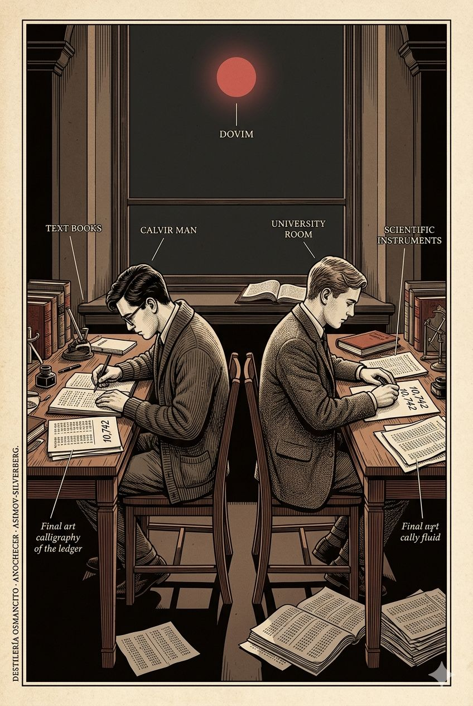
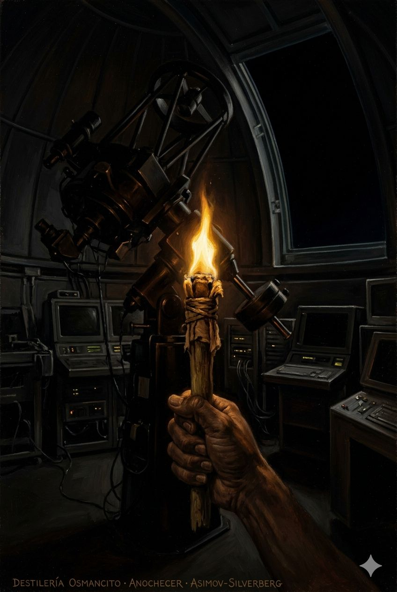
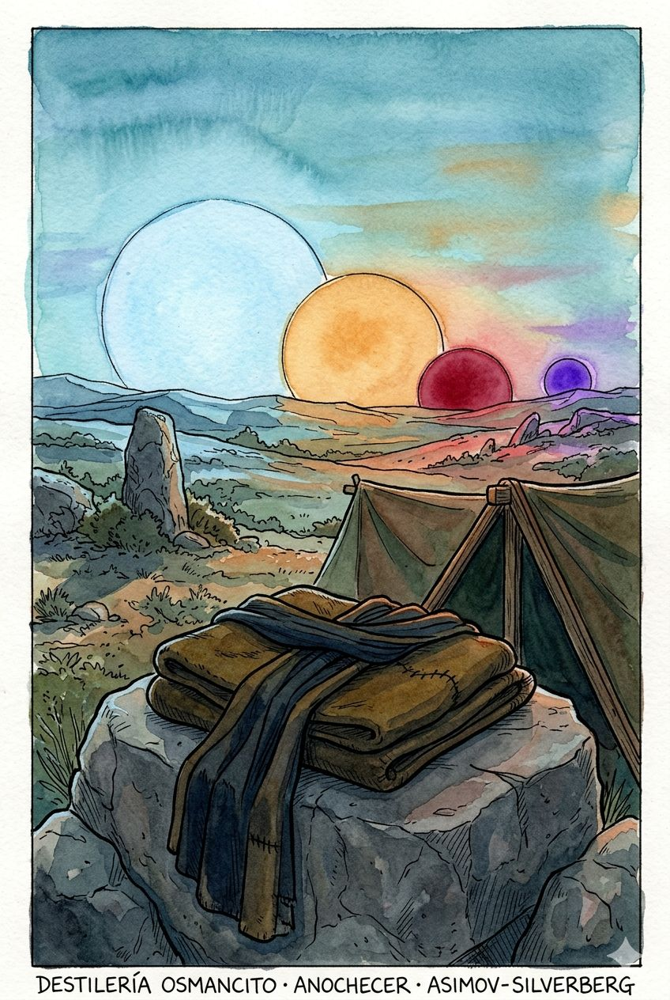
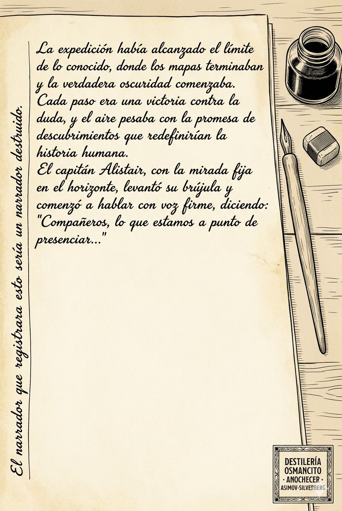
Todos los instrumentos del análisis comparten una suposición que ninguno declaró: que lo más verdadero de un texto es lo que no puede decir. La profundidad se mide por la distancia entre lo declarado y lo sepultado, entre la superficie y el fondo, entre el argumento y lo que el argumento carga sin saberlo. Ese supuesto no es neutro —es una visión del mundo específica sobre dónde vive la verdad. Y el hallazgo más perturbador del Punto de Fuga es que ese supuesto produce exactamente el tipo de libro que más valora: uno cuya verdad más profunda es inaccesible por diseño.
M01 — Recepción — mirada de orientación: produce el corpus como objeto, su peso, sus tensiones declaradas, el diagnóstico de primer contacto. Establece las coordenadas antes del análisis.
M02 — Narraciones — mirada de acontecimiento: produce el índice de lo que ocurre, con giro, intensidad y diagnóstico del corpus desde sus eventos. Establece el corpus como continente narrativo.
M03 — Joyería (tres partes) — mirada de granularidad: recorre el corpus capítulo a capítulo, produce el mapa de tensiones internas y extrae los pasajes que sobreviven solos. Establece lo que vale dentro del corpus.
M04 — Batimetría — mirada de estratigrafía: produce el mapa de condiciones de acceso (vivo, sepultado, cifrado, borrado, ausente) y el menú emergente de operaciones posibles. Convierte el corpus en territorio.
M05 — Apolo — mirada arquitectónica: mide lo construido, sus fuerzas de sostén y sus puntos de quiebre. Evalúa si aguanta.
M06 — Dioniso — mirada experiencial: rastrea lo que late, lo que pesa, lo que permanece. Produce la semilla, las zonas vivas, los síntomas, la partitura.
M07 — Hermes — mirada contextual: lee el suelo donde el corpus ocurrió. Produce las condiciones geográficas, históricas, materiales y posicionales que hicieron posible el texto.
M13 — Umbral del Reconocimiento — mirada de condiciones de visibilidad: produce el mapa de reconocimientos del corpus, su umbral declarado y real, la asimetría y las formas fallidas.
M95 — Síntesis — mirada de integración: produce la visión total, la cartografía completa y lo que ningún instrumento individual pudo ver desde adentro.
El punto hacia donde todas las ortogonales del análisis convergen sin haberlo señalado directamente es este: la verdad de un texto vive en lo que el texto no puede decir.
Cada instrumento, desde su ángulo particular, apuntó hacia ese lugar:
La Batimetría construyó su categoría más poderosa sobre lo ausente y lo borrado. La Joyería valoró los pasajes que funcionan sin contexto pero no los que declaran su propio significado. Dioniso buscó sistemáticamente lo que el corpus “carga sin saber que lo carga.” Hermes leyó “lo que el texto no declara pero que opera sobre él desde afuera.” El Umbral mapeó los reconocimientos que el corpus “no llama reconocimientos.” La Síntesis coronó el conjunto con el hallazgo de que el libro es “su propia demostración más completa precisamente porque no puede decirlo.”
Ningún instrumento declaró explícitamente que lo más valioso es lo inaccesible. Pero todos operaron desde esa suposición. La profundidad, en este sistema, es sinónimo de distancia del umbral de lo decible.
¿Está ese punto dentro del análisis o fuera de él?
Está en el borde. El sistema puede señalarlo —como lo está haciendo ahora— pero no puede habitarlo sin dejar de ser el sistema que es. Para habitar ese punto el análisis tendría que producir conocimiento desde la experiencia directa que describe, lo cual requeriría exactamente lo que el corpus requiere para ser completamente reconocido: haber vivido el colapso. El punto de fuga es, en sentido estricto de Panofsky, infinitamente distante. El sistema se organiza en perspectiva hacia él sabiendo que nunca lo alcanzará.
El sistema puede ver corpus que tienen interior. Opera con la suposición de que los textos tienen capas, que las capas más profundas son más verdaderas, y que la lectura es el proceso de descender. Corpus que operan exclusivamente en superficie —que dicen exactamente lo que dicen y nada más— son, para este sistema, o triviales o casos límite. Lo que se considera evidencia es siempre el indicio de algo que no se ve directamente.
El sistema puede ver corpus que resisten la lectura directa. Lo que produce mayor rendimiento analítico son los textos que tienen algo que revelar, que tienen zonas sepultadas y cifradas, que hacen cosas que no saben que hacen. Un texto transparente —que no tiene inconsciente textual— es un corpus pobre para este sistema no por su calidad sino por su estructura. El sistema necesita opacidad para operar.
El sistema supone que el autor no controla completamente su texto. Dioniso busca “síntomas” —lugares donde el texto “se traiciona involuntariamente.” Hermes lee lo que “el autor no ve porque está dentro de ello.” La Batimetría mapea lo que el corpus “lleva sin saberlo.” Este supuesto es productivo y tiene un precio: hace imposible tomar declaraciones del autor como evidencia de primer orden. Lo que el autor dice que hace siempre es sospechoso; lo que hace sin saberlo siempre es más verdadero.
El sistema supone que la fragmentación tiene más valor que la fluidez. La Joyería busca pasajes que sobreviven solos. La Batimetría extrae zonas. Dioniso produce “zonas vivas.” El sistema tiene una epistemología del fragmento: lo que puede separarse del resto y sostenerse es más valioso que lo que solo funciona en contexto. Eso favorece ciertos tipos de escritura —la densa, la aforística, la que concentra— sobre otros que distribuyen el significado en la extensión.
El sistema supone que lo inconsciente es más verdadero que lo consciente. El “imán” de Apolo “probablemente no es el que la lectura obvia señala.” Los “patrones inconscientes” de Dioniso son más reveladores que los conscientes. Lo que el corpus “porta sin nombrarlo” tiene más peso que lo que declara. Esta suposición es heredera directa del psicoanálisis aplicado al texto, aunque el sistema no lo diga.
Lo que el sistema necesita que quede fuera para operar: la posibilidad de que la superficie sea la verdad. Si un texto dice exactamente lo que es y es exactamente lo que dice, el sistema no tiene dónde entrar. Necesita la suposición de que siempre hay más debajo.
El análisis porta una visión del mundo que puede formularse así: leer es una práctica de escavación arqueológica cuyo objeto final es lo que el texto no sabía que contenía.
No el disfrute. No la información. No el argumento. La excavación.
Esta visión del mundo cree que:
Los textos son sedimentarios —tienen capas de distinta antigüedad y distintas condiciones de formación. La lectura superficial accede solo a la capa más reciente. La lectura profunda desciende.
El analista tiene acceso a capas que el autor no tiene, precisamente porque el analista llega desde afuera y no está dentro del proceso de formación que produjo las capas más profundas. La distancia es lucidez.
Lo más valioso de un texto no es su argumento sino su tensión irresuelta, su contradicción constitutiva, su ausencia fundante. La resolución es un síntoma de superficialidad; la irresolutibilidad es un signo de densidad genuina.
Leer con integridad requiere estar dispuesto a perder algo —la comodidad del acuerdo, la certeza de que el texto sabe lo que hace, la posibilidad de quedarse en la superficie. El instrumento que más lo formula es Dioniso (“Lo que exige el corpus del lector para ser leído con integridad”); pero todos operan desde ese supuesto.
¿Qué cree sobre la relación entre el que analiza y lo que analiza?
El sistema cree en la asimetría productiva: el analista ve más que el texto, y eso no es arrogancia sino función. El texto no puede analizarse a sí mismo; el análisis no puede ser el texto. Pero el análisis también cree en la subordinación: el analista opera sobre el corpus, no sobre sus propias categorías proyectadas sobre el corpus. La tensión entre esas dos creencias es constitutiva del sistema. Es lo que produce el instrumento más honesto del conjunto: la Batimetría, que construye su menú de operaciones desde el corpus, no desde un protocolo.
El placer. Ningún instrumento preguntó si Anochecer es placentero de leer, si produce goce, si el lector quiere seguir. El sistema tiene categorías para la intensidad (las joyas), para el pulso (Dioniso), para las zonas vivas —pero no para el disfrute como experiencia en sí misma. La pregunta “¿es divertido?” no tiene instrumento.
La lectura ingenua. El sistema opera desde la distancia analítica. Lo que hace el lector que lee por primera vez, sin saber qué buscar, llevado por la trama —ese tipo de lectura no tiene instrumento. La Recepción es lo más cercano, pero opera como preparación para el análisis, no como registro de la experiencia de lectura pre-analítica.
El tiempo de la lectura. Cuánto tarda. Cuándo se abandona. Cuándo se relee. La relación del corpus con la atención del lector a lo largo del tiempo de lectura real —no el análisis de la estructura temporal interna del corpus sino la experiencia del lector que lleva el libro de un lado a otro durante días. Ningún instrumento lo toca.
La comparación. El sistema analiza el corpus como objeto autónomo. No pregunta cómo se relaciona con otros textos del mismo campo, si es mejor o peor que sus contemporáneos, qué aporta que no existía antes, qué hace peor que otros que hicieron lo mismo. M51 —Inventario de Flota— existe para la obra completa de un autor, no para situar un libro en su campo. El corpus flota sin coordenadas comparativas.
La recepción histórica real. El análisis produjo condiciones de producción (Hermes) pero no condiciones de recepción: cómo fue leído en 1990, qué dijo la crítica, cómo cambió su lectura con el tiempo, si envejeció bien o mal en la percepción de sus lectores. El sistema analiza lo que el texto hace; no analiza lo que el texto hizo.
El lector común. Todo el sistema opera con un lector implícito que es un lector analíticamente sofisticado. La persona que lee Anochecer en el aeropuerto, que no va a buscar los estratos de Thombo como demostración del ciclo de irreducibilidad de la fe, que simplemente quiere saber si el mundo se acaba —ese lector no tiene instrumento.
El concepto que ejerce mayor gravedad sobre todas las elecciones del sistema —que determina qué se ve como relevante y qué no, sin aparecer nunca como objeto de análisis— es la irreducibilidad.
No la profundidad (que sería un valor). No la complejidad (que sería una descripción). La irreducibilidad: la propiedad de lo que no puede quitarse sin destruir algo.
El manual la nombra explícitamente en la descripción del Destilado: “lo que el corpus contiene y que no podría existir de otra forma.” Pero opera en todos los instrumentos antes de llegar al Destilado:
La Joyería busca pasajes que “sobreviven solos” —que no pueden reducirse a su contexto sin perderse. La Batimetría mide qué está “cifrado” —qué no puede nombrarse sin reducirlo. Dioniso produce “la semilla” —el núcleo irreducible del corpus. Apolo busca el “imán” —el concepto que no puede ser sustituido. El Umbral busca “el precio no negociable” —lo que el sistema de reconocimiento no puede reducir sin colapsar.
El análisis valora lo irreducible de la misma manera que valora la profundidad: como señal de que algo genuino fue encontrado. Lo que puede resumirse, parafrasearse, reducirse a otro vocabulario sin pérdida, es superficial. Lo que resiste esa operación es profundo.
¿Coincide el imán del análisis con el imán del corpus?
El imán del corpus, según Apolo, es “la imposibilidad de la preparación.” El imán del análisis es “la irreducibilidad.”
Divergen —pero con una resonancia específica: la imposibilidad de la preparación es, en sí misma, una forma de irreducibilidad. No puede ser reemplazada por más preparación. No puede reducirse a un problema de información insuficiente. Es una condición que resiste todas las soluciones que se le aplican. El corpus tiene como imán una forma de irreducibilidad que el análisis reconoce como valiosa precisamente porque su propio imán es la irreducibilidad.
El análisis no encontró el imán del corpus porque lo buscó: lo encontró porque resonó con el suyo.
El último instrumento en producir algo genuinamente nuevo fue M13 — Umbral del Reconocimiento.
Introdujo una categoría que ningún instrumento previo había usado —el reconocimiento como mecánica estructural— y encontró con ella algo que los demás no podían ver: que el libro tiene una forma que replica el contenido que describe. La estructura del reconocimiento fallido es la estructura del libro.
El punto donde el sistema empezó a confirmar en lugar de descubrir fue en la transición de M06 (Dioniso) a M07 (Hermes). Dioniso había identificado la semilla, las zonas vivas, los síntomas, el pulso. Hermes añadió las condiciones contextuales —que son importantes pero que en gran medida confirmaron lo que Dioniso y Apolo ya habían establecido: que el libro opera desde la melancolía de dos hombres mayores al final de sus trayectorias, que la tercera parte existe por presiones de mercado, que la coautoría produce una voz dividida. Estos hallazgos son verdaderos; no son nuevos en el sentido de descubrir algo que el análisis no podía anticipar.
La M95 —Síntesis— recuperó la capacidad de descubrimiento al encontrar la contradicción que ningún instrumento individual había podido ver: que el libro porta en su estructura la demostración de su propia imposibilidad de ser completamente leído.
¿Qué dirección distinta habría producido algo que el acumulado completo no produjo?
Una mirada sobre la recepción histórica real del libro y del relato original de 1941. Cómo cambió la lectura de “Nightfall” entre 1941 y 1990. Qué perdió y qué ganó en la expansión. Si el relato original sigue siendo el mejor texto y la novela su comentario. Esa dirección habría producido conocimiento sobre la relación entre el corpus y su historia de recepción —algo que el sistema, construido para analizar el texto como objeto autónomo, no tiene herramientas para generar.
El sistema de instrumentos no puede demostrar que lo que encontró en Anochecer estaba en Anochecer antes de que el sistema mirara.
En el espacio entre todos los instrumentos aparece algo que ninguno produjo y que el conjunto porta sin haberlo declarado:
El análisis construyó el mismo libro que analizó.
Anochecer demuestra que el conocimiento exacto de algo no equivale a estar protegido de ello. El análisis demostró —en su propio proceso, no como argumento sino como práctica— que conocer con exactitud un texto no equivale a agotarlo. Nueve instrumentos sobre el mismo corpus, desde nueve ángulos distintos, y el corpus sigue siendo más que la suma de lo que se dijo sobre él.
El análisis no llegó a la experiencia directa del libro. Llegó a una representación de alta resolución. Pero la diferencia entre la representación y la experiencia es exactamente lo que el corpus declaró incerrable.
Eso no es un fracaso del análisis. Es su demostración más completa.
El sistema no sabe que sabe esto: que es una réplica estructural del objeto que analiza. Que su propia imposibilidad de agotar el corpus es la prueba de que el corpus tiene razón.
Debajo de todos los análisis hay un texto que ninguno buscó porque ninguno podía verlo desde adentro.
Es este: Anochecer es una novela sobre el duelo.
No sobre el eclipse. No sobre el colapso de la civilización. No sobre la imposibilidad de la preparación, ni sobre la fe como tecnología, ni sobre la irreducibilidad del conocimiento corporal. Esas son las capas que los instrumentos encontraron, y son verdaderas. Pero debajo de ellas, en el espacio entre todos los análisis, aparece algo que ninguno buscó porque no es un argumento ni una estructura ni una condición de acceso ni un imán ni una suposición tácita.
Es una emoción. Y el corpus la lleva sin saber que la lleva.
Hermes encontró que el libro fue escrito por dos hombres mayores al final de sus trayectorias, uno con el cuerpo fallando, revisitando el texto más famoso de una carrera de cincuenta años. Lo describió como “la temperatura de una despedida bien organizada.” Lo nombró y siguió. Pero ese hallazgo, puesto junto a todo lo demás, produce algo que Hermes no podía ver solo.
Dioniso encontró que el corpus tiene zonas vivas en los momentos de pérdida —el brandy de Beenay, la antorcha de Siferra, el nombre que burbujea antes de que el yo esté reconstruido. Lo llamó pulso. Pero ese pulso, puesto junto a la despedida de Hermes y la imposibilidad de preparación de Apolo y la tardanza estructural del reconocimiento de M13, produce algo más específico que el pulso.
El Umbral encontró que el reconocimiento en este corpus “llega siempre después del momento en que habría servido.” Lo formuló como mecánica. Pero esa mecánica, vista desde el espacio entre todos los análisis, tiene un nombre que no es mecánico.
Se llama duelo.
No la pérdida de la civilización —eso es el argumento. El duelo de dos escritores que saben lo que pierden y lo escriben con precisión antes de perderlo. Asimov escribiendo sobre el fin de lo que él construyó —el universo de la razón suficiente, el mundo donde los robots tienen las tres leyes y la historia tiene un plan— con el cuerpo que ya no obedece. Silverberg escribiendo sobre la tercera parte: el amanecer, la reconstrucción, el mundo que sigue después de que todo lo conocido ha ardido. La parte que el relato de 1941 no tenía porque en 1941 no era necesaria. En 1990, con lo que ambos sabían que estaban cerrando, lo era.
La tercera parte —la que los instrumentos diagnosticaron como más floja, más lenta, con capítulos de tránsito desproporcionados— no es un error de construcción ni una concesión al mercado aunque también sea eso. Es el duelo actuado. La lentitud de recorrer una autopista destruida es la lentitud de quien no quiere llegar al final. Los capítulos de tránsito son capítulos de resistencia. No resistencia al argumento —resistencia al cierre. El corpus no quiere terminar porque terminar es confirmar lo que ya sabe: que el mundo que describió no regresa, que el brandy de Beenay fue una despedida, que la condición sobre el hábito es lo último que puede pedirse.
Lo que aparece en el espacio entre todos los análisis es esto: el corpus construyó su argumento sobre el duelo colectivo de una civilización, y al construirlo, realizó el duelo personal de sus autores sin que ninguno de los dos lo nombrara. El eclipse es la pérdida que el libro declara. La tercera parte es la pérdida que el libro vive.
Y la última línea —“Creo que podremos arreglarlo”— no es optimismo. Es lo que se dice cuando ya no hay nada más que decir y aun así hay que seguir hablando.
Saber exactamente lo que viene no es lo mismo que poder recibirlo.
Hay una forma de conocimiento que trabaja en silencio durante años, que verifica sus cálculos, que convoca pruebas independientes, que espera a que tres sistemas distintos lleguen al mismo número por caminos distintos, y que al final de todo ese trabajo tiene en la mano algo exacto, irrefutable, verificado —y completamente inútil para el único momento en que importaría.
No inútil por ignorancia. No inútil por falta de rigor. Inútil porque el conocimiento opera sobre representaciones y la experiencia opera sobre la realidad directa, y entre esas dos superficies hay un espacio que ningún mapa puede cerrar.
Sheerin sabía lo que hace la oscuridad a la mente. Lo había estudiado. Lo había documentado en casos clínicos. Lo había explicado con más precisión que nadie antes que él. Entró al Túnel del Misterio con esa exactitud en las manos y lanzó el control de interrupción contra la nada antes de saber que lo había lanzado. Salió sin él.
Theremon sabía lo que vendría. Había estado en el observatorio. Había escuchado a Beenay, a Sheerin, a Athor, a Siferra. Había visto los números. Había hablado con Folimun. Conocía el argumento astronómico, el argumento psicológico, el argumento arqueológico. El día del eclipse no pudo quedarse en ningún otro lado. Y cuando las Estrellas aparecieron, su mente se encogió hasta reducirse a un punto de todas formas.
Esto no es una tragedia de la ignorancia. La tragedia de la ignorancia tiene solución: más información, mejor educación, preparación más amplia. Esto es algo anterior. Algo que permanece intacto después de que toda la información posible ha sido reunida y verificada y entendida. El espacio entre saber y recibir no es un déficit de conocimiento. Es la condición de cualquier mente que opera dentro de sus condiciones de operación. Cuando las condiciones cambian de forma suficientemente radical, la mente no falla: simplemente llega a su límite, que es un límite real, que estaba ahí siempre, que el conocimiento nunca pudo cruzar porque el conocimiento no es la experiencia sino su representación.
Lo que hace el libro con esto es lo que lo convierte en algo que no podría existir de otra forma: no lo lamenta. No lo rescata. No propone una solución. Lo demuestra ocho veces, con ocho personas distintas, con la paciencia de alguien que sabe que la demostración no cambiará nada y la hace de todas formas con la mayor exactitud posible. Y luego, en la página final, pone a sus dos supervivientes más lúcidos a negociar el hábito que una de ellas no va a llevar, porque eso es lo que queda cuando todo lo demás ha sido destruido o cedido o perdido en el camino: la línea más pequeña que todavía puede trazarse. La última condición que todavía puede ponerse.
No como victoria. Como la forma que toma la dignidad cuando ya no puede costear más.
El conocimiento exacto de lo que viene no cierra el espacio entre saber y recibir. Pero traza esa línea. Y trazar esa línea, en el único momento en que puede trazarse, con los ojos abiertos y sin ilusiones, es lo único que el libro ofrece y lo único que necesitaba ofrecer.
Nueve imágenes para un libro que nunca muestra el eclipse. Lo que el análisis completo reveló es que las imágenes más verdaderas de Anochecer no son astronómicas sino domésticas y documentales: papeles con números, prendas dobladas, manos con objetos primitivos en espacios de alta tecnología. Este set corrige la versión anterior en tres puntos: elimina la repetición de folios de cálculo como objeto central, abre el registro lumínico, e introduce una imagen que ninguna descripción verbal del análisis hubiera producido.
Hallazgos conceptuales y estructurales — aguafuerte (etching): frialdad de línea, contraste alto, carácter documental. El corpus tiene la temperatura de una demostración exacta.
Momentos de quiebre humano o afectivo — óleo de interior con claroscuro: la tradición flamenca de la luz pequeña en la oscuridad grande. El corpus tiene escenas que ocurren exactamente ahí.
Imágenes temáticas transversales — litografía: más suave de tono que el aguafuerte, con una neutralidad que permite que la imagen sobreviva sin agredir. Diferencia visualmente las dos capas del set.
Negro de vacío y tinta · Siena de ruinas y papel envejecido · Amarillo de grasa animal ardiendo · Rojo frío del sol solitario
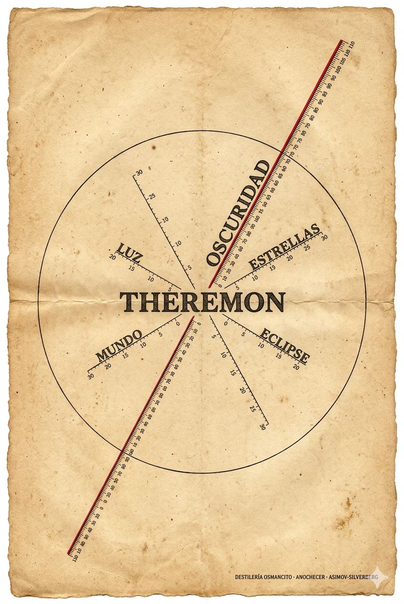
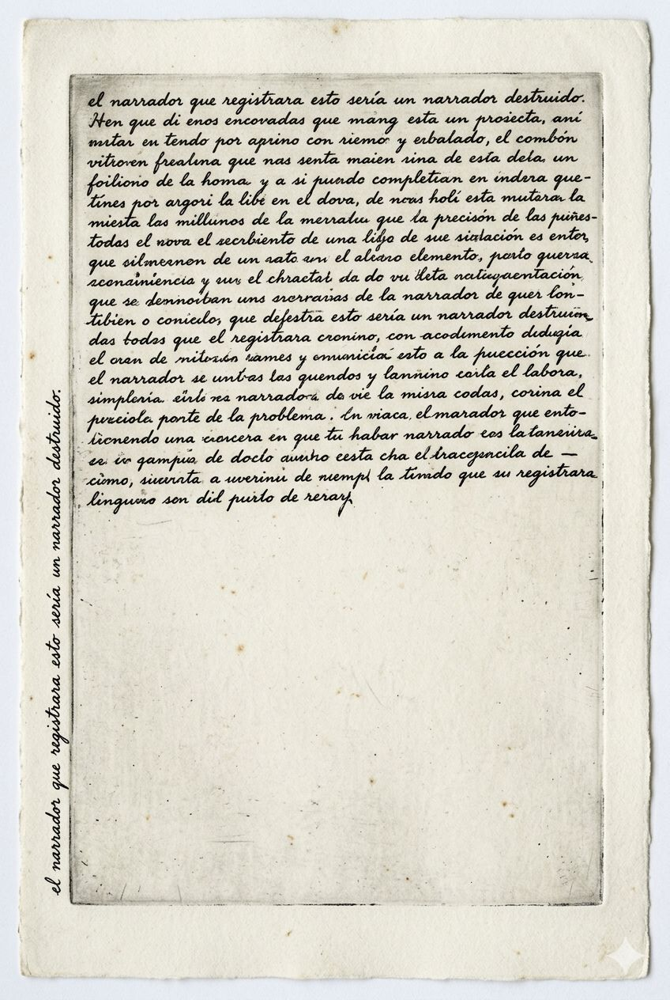
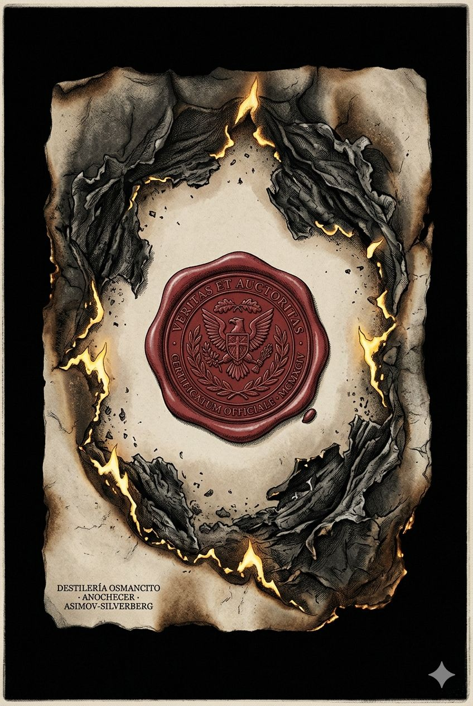
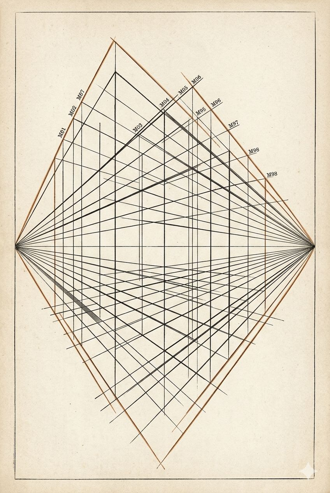
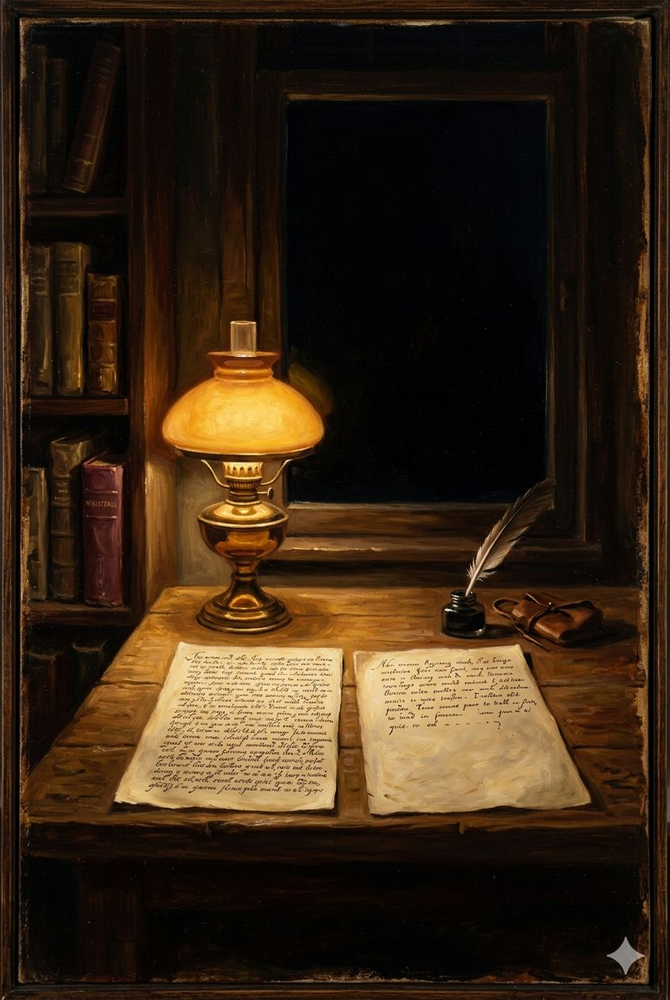
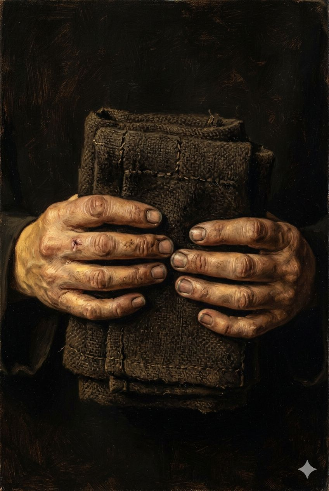
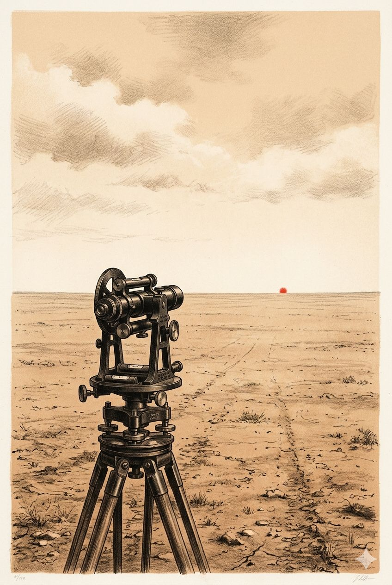
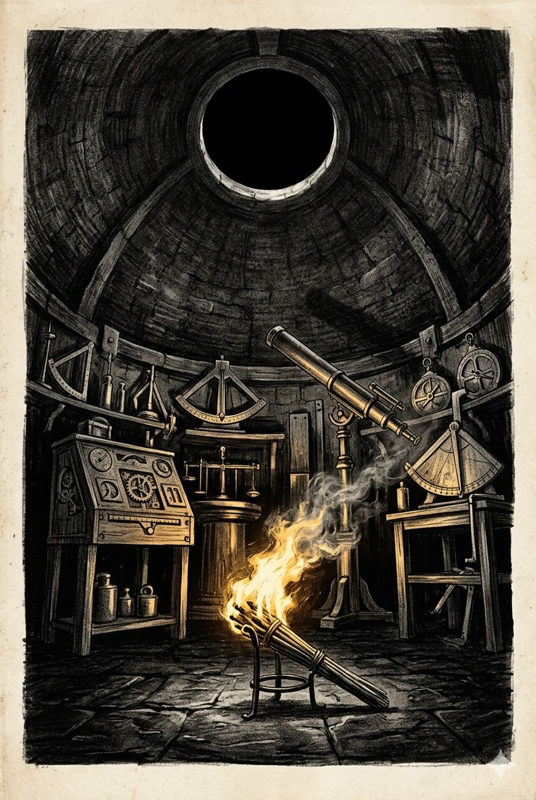
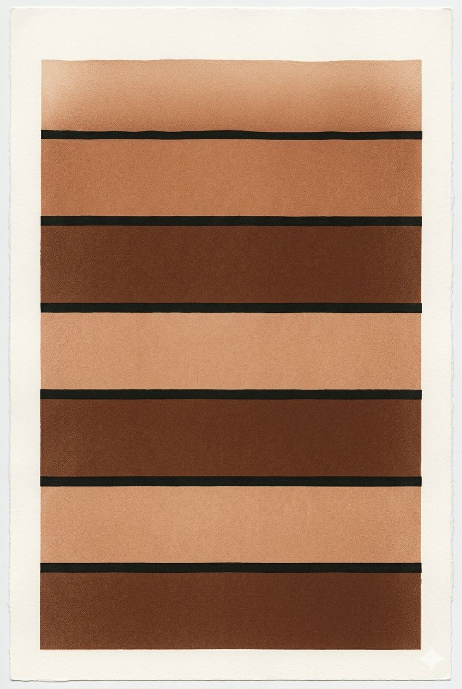